新坑启动！
本文仍然采用【小时间线】设定，即无视年份，四季，星期的变化，仅保留因果性和偏序关系传递性的最小时间线系统。
重要的时间节点包括：工藤新一变小（第2天），落叶缤纷的质问（第66天），灰原哀登场（第85天），危命的复活（第110～126天），满月篇（第192天）（本文不涉及满月篇）
我们已经分析了哀登场前新兰关系的动向，尽管在福尔摩斯迷案（第60天）前小兰几乎毫无作为，但她还是在之后采取了一系列方法探索并接近柯南/新一，并成功在小哀面前形成【柯南喜欢的人是小兰】的信息差。
【折叠的时空•零】基于小时间线分析哀登场前的新兰感情变化趋势
（关于小兰的具体贡献如何，可以看我的另一个帖子：【折叠的时空•壹】全日常案件的角色贡献分数）
从灰原哀登场到危命复活经过了40天左右，兰哀出场基本对半开，且小兰知道柯南是新一，新兰关系仍然在小兰的主动参与下不断提升，并且这个提升【是快于柯哀关系的提升的】。再加上麻美学姐案后新兰关系的基准值，新兰进展【似乎】十分迅速。
但这只是让小兰看起来有一战之力的场景拟合，如果说新兰关系本阶段是正偏置下的线性上升，那么柯哀关系就是负偏置下的加速度上升，柯哀40天的交往足以阻止新一在饭店的表白，而损失了表白机遇的新兰关系已经不可能再有比这更好的机会了。甚至，我们可以认为：
【新兰线性上升只是局部表象，全局上是抛物线下降】
【柯哀加速度上升也只是局部表象，全局上是指数上升】
本帖与【折叠的时空-壹】同步更新，由于漫画信息密度增大，可能会更很久，不过，慢慢享受这一过程也未尝不可呢～
八十四岁镇楼！
本文仍然采用【小时间线】设定，即无视年份，四季，星期的变化，仅保留因果性和偏序关系传递性的最小时间线系统。
重要的时间节点包括：工藤新一变小（第2天），落叶缤纷的质问（第66天），灰原哀登场（第85天），危命的复活（第110～126天），满月篇（第192天）（本文不涉及满月篇）
我们已经分析了哀登场前新兰关系的动向，尽管在福尔摩斯迷案（第60天）前小兰几乎毫无作为，但她还是在之后采取了一系列方法探索并接近柯南/新一，并成功在小哀面前形成【柯南喜欢的人是小兰】的信息差。
【折叠的时空•零】基于小时间线分析哀登场前的新兰感情变化趋势
（关于小兰的具体贡献如何，可以看我的另一个帖子：【折叠的时空•壹】全日常案件的角色贡献分数）
从灰原哀登场到危命复活经过了40天左右，兰哀出场基本对半开，且小兰知道柯南是新一，新兰关系仍然在小兰的主动参与下不断提升，并且这个提升【是快于柯哀关系的提升的】。再加上麻美学姐案后新兰关系的基准值，新兰进展【似乎】十分迅速。
但这只是让小兰看起来有一战之力的场景拟合，如果说新兰关系本阶段是正偏置下的线性上升，那么柯哀关系就是负偏置下的加速度上升，柯哀40天的交往足以阻止新一在饭店的表白，而损失了表白机遇的新兰关系已经不可能再有比这更好的机会了。甚至，我们可以认为：
【新兰线性上升只是局部表象，全局上是抛物线下降】
【柯哀加速度上升也只是局部表象，全局上是指数上升】
本帖与【折叠的时空-壹】同步更新，由于漫画信息密度增大，可能会更很久，不过，慢慢享受这一过程也未尝不可呢～
八十四岁镇楼！
二楼
居然是双开吗，辛苦了一、再论小哀的时间线
在【折叠的时空•零】中，我们已经分析了小哀相关的时间线：
【第3天】志保对工藤家进行第一次搜查，应该带了若干黑衣组织小弟。
【第24天】志保与明美通话，知道了柯南的存在。
【第27天】志保对工藤家进行第二次搜查，这次搜查似乎与消极制药同期，我推测志保进入工藤家不只是搜查，还有逃避黑衣组织的意味。
【我的推测】志保很可能看见了三小只和柯南从工藤家下路过。
大约于这个时期，志保看见了十亿日元抢劫犯的报纸，得知了姐姐的死讯，并在报纸上看到了柯南。这个时期琴酒和伏特加去名古屋出差，很可能是明美的十亿元没到手，出去弄点别的财路。于是志保似乎有一段自由时间。
随后志保开始正式消极制药，采取手段从躲工藤家到停止研究不等。
【第54天，我的推测】志保在实验室摸鱼，看到了电视台案的柯南，不过可能以为柯南只是小五郎的辅助。
【第59天】此时黑衣组织尚不敢关押志保，于是黑衣组织派遣龙舌兰去物色优秀的程序员（可能是作为替代，板仓卓有自己的任务），但龙舌兰被米花市民炸死。
随后组织内部决定关押志保，志保关押的时间漫画没有说，不过进入瓦斯室的时间应该不长，琴酒很可能对志保为何停止制药表示了极大的兴趣，志保应该不是一开始就在瓦斯室，而是有严密监视-限制自由-瓦斯室等一个过程。
【第74天】小哀逃离瓦斯室，同时小林老师进入帝丹小学，尚不清楚若狭在这个过程中是否扮演某些角色。
【第76天】在博士家养伤的小哀看见了报纸上“小学生立大功”一脸【高兴】的基德克星。
随后一段时间小哀和博士相处融洽，博士直接给小哀发金水，小哀从博士这里初步了解了柯南/新一，例如看见暗号走不动路。
【博士对小哀绘声绘色地描述了“月亮太阳星星秘密”时柯南破暗号的快乐表情】
（我不认为小哀会保留任何初遇时期的具体记忆，但不排除可能保留潜意识，使得小哀迅速接受了柯南的推理属性）
这个时间线应该是相对自洽的，小哀对柯南有了解但还不太多，她心里给柯南的位置类似于有点笨的侦探（所以当小哀发现柯南推理能力很强时会很伤心，一个很有能力的人尽力救自己的姐姐却还是失败了，为什么姐姐还是只能进入死局？）
小哀让博士不要对柯南透露自己的存在，因此柯南对小哀一无所知。
【第83天】小兰带着柯南和一大群人去打扫工藤家，小哀肯定看见了，她初步认为柯南一定没有什么警惕意识（确实如此），并准备了一套半恐吓的话术，准备把柯南耍的团团转。（和柯南父母做的事情简直一模一样）
【第85天】
“请多指教。”
“啊，哦……”
在【折叠的时空•零】中，我们已经分析了小哀相关的时间线：
【第3天】志保对工藤家进行第一次搜查，应该带了若干黑衣组织小弟。
【第24天】志保与明美通话，知道了柯南的存在。
【第27天】志保对工藤家进行第二次搜查，这次搜查似乎与消极制药同期，我推测志保进入工藤家不只是搜查，还有逃避黑衣组织的意味。
【我的推测】志保很可能看见了三小只和柯南从工藤家下路过。
大约于这个时期，志保看见了十亿日元抢劫犯的报纸，得知了姐姐的死讯，并在报纸上看到了柯南。这个时期琴酒和伏特加去名古屋出差，很可能是明美的十亿元没到手，出去弄点别的财路。于是志保似乎有一段自由时间。
随后志保开始正式消极制药，采取手段从躲工藤家到停止研究不等。
【第54天，我的推测】志保在实验室摸鱼，看到了电视台案的柯南，不过可能以为柯南只是小五郎的辅助。
【第59天】此时黑衣组织尚不敢关押志保，于是黑衣组织派遣龙舌兰去物色优秀的程序员（可能是作为替代，板仓卓有自己的任务），但龙舌兰被米花市民炸死。
随后组织内部决定关押志保，志保关押的时间漫画没有说，不过进入瓦斯室的时间应该不长，琴酒很可能对志保为何停止制药表示了极大的兴趣，志保应该不是一开始就在瓦斯室，而是有严密监视-限制自由-瓦斯室等一个过程。
【第74天】小哀逃离瓦斯室，同时小林老师进入帝丹小学，尚不清楚若狭在这个过程中是否扮演某些角色。
【第76天】在博士家养伤的小哀看见了报纸上“小学生立大功”一脸【高兴】的基德克星。
随后一段时间小哀和博士相处融洽，博士直接给小哀发金水，小哀从博士这里初步了解了柯南/新一，例如看见暗号走不动路。
【博士对小哀绘声绘色地描述了“月亮太阳星星秘密”时柯南破暗号的快乐表情】
（我不认为小哀会保留任何初遇时期的具体记忆，但不排除可能保留潜意识，使得小哀迅速接受了柯南的推理属性）
这个时间线应该是相对自洽的，小哀对柯南有了解但还不太多，她心里给柯南的位置类似于有点笨的侦探（所以当小哀发现柯南推理能力很强时会很伤心，一个很有能力的人尽力救自己的姐姐却还是失败了，为什么姐姐还是只能进入死局？）
小哀让博士不要对柯南透露自己的存在，因此柯南对小哀一无所知。
【第83天】小兰带着柯南和一大群人去打扫工藤家，小哀肯定看见了，她初步认为柯南一定没有什么警惕意识（确实如此），并准备了一套半恐吓的话术，准备把柯南耍的团团转。（和柯南父母做的事情简直一模一样）
【第85天】
“请多指教。”
“啊，哦……”
二、灰原哀的第一天
动画在此处做了严重的修改。在动画中，孩子们的笑脸中夹着柯南【不感兴趣】的脸，然后小哀锁定柯南并坐在柯南身边；漫画中并没有柯南不耐烦的表情，倒是柯南和三小只一起讨论了小哀会是什么样的人，元太还调侃了柯南的名字太奇怪，灰原好多了。
我们可以猜测一下，小哀一路走过来的时候柯南的眼神变化，我严重怀疑柯南要么一直盯着小哀看，要么一直不敢看，以至于手的动作都不自然了。这自然是不能画出来，在卡拉OK案，青山已经对柯南的审美有过描述，现在小哀竟然来到自己身边，柯南紧张得很。
他甚至对小哀坐到自己身边没有预期，只有元太和柯南旁边有空位欸，推理一下真的很简单，柯南大脑不会宕机了吧？
动画在此处做了严重的修改。在动画中，孩子们的笑脸中夹着柯南【不感兴趣】的脸，然后小哀锁定柯南并坐在柯南身边；漫画中并没有柯南不耐烦的表情，倒是柯南和三小只一起讨论了小哀会是什么样的人，元太还调侃了柯南的名字太奇怪，灰原好多了。
我们可以猜测一下，小哀一路走过来的时候柯南的眼神变化，我严重怀疑柯南要么一直盯着小哀看，要么一直不敢看，以至于手的动作都不自然了。这自然是不能画出来，在卡拉OK案，青山已经对柯南的审美有过描述，现在小哀竟然来到自己身边，柯南紧张得很。
他甚至对小哀坐到自己身边没有预期，只有元太和柯南旁边有空位欸，推理一下真的很简单，柯南大脑不会宕机了吧？
小哀一开始对三小只是没什么兴趣的，从小孤僻的她还不太适应三小只这种阳光的性格。
（别看元太这个样子，他属于是邀请同桌失败，于是转而靠其他各种方式企图吸引小哀的注意，甚至说少侦的鞋柜每天都是满的）
总之，面对步美和光彦的热情，小哀抛出了博士的地址……
然后柯南直接开始胡思乱想起来，【在我家附近-但没有高楼啊-其他楼有姓灰原的？】
柯南对于小哀的好奇心有点过头，正常的思考量要么是【哦】，要么是【欸，在我家附近耶】，但是柯南的思考直接就是希望找出小哀具体住在哪（在大脑里搜索小哀的地址，我怀疑如果柯南手上有个地图，他会直接找出来），胡乱思考的时候发现小哀在微笑看自己，又宕机了。
柯南在小兰面前偶尔也会放弃思考（例如绷带怪人和小兰睡觉），但在小哀面前的柯南一直在放弃推理，或者说根本不敢推理关于小哀的事情。
柯南怕万一认真推理，他就会……
我不好说。
（别看元太这个样子，他属于是邀请同桌失败，于是转而靠其他各种方式企图吸引小哀的注意，甚至说少侦的鞋柜每天都是满的）
总之，面对步美和光彦的热情，小哀抛出了博士的地址……
然后柯南直接开始胡思乱想起来，【在我家附近-但没有高楼啊-其他楼有姓灰原的？】
柯南对于小哀的好奇心有点过头，正常的思考量要么是【哦】，要么是【欸，在我家附近耶】，但是柯南的思考直接就是希望找出小哀具体住在哪（在大脑里搜索小哀的地址，我怀疑如果柯南手上有个地图，他会直接找出来），胡乱思考的时候发现小哀在微笑看自己，又宕机了。
柯南在小兰面前偶尔也会放弃思考（例如绷带怪人和小兰睡觉），但在小哀面前的柯南一直在放弃推理，或者说根本不敢推理关于小哀的事情。
柯南怕万一认真推理，他就会……
我不好说。
2024-02-07 06:18 | 仙了个天joy:哇这个回眸对视~好可爱
柯哀互动真的越看越好玩。
如图，小哀一听到少年侦探团这个名字，就大概知道这是柯南搞出来的了，而柯南展示了真正的过河拆桥技术：
元太：柯南也是团员之一！
柯南：嗯嗯！（笑）
元太：糟糕，没有委托！
柯南：快走吧我要去踢球了（什么少年侦探团，真不熟）
我感觉柯南就是无意识地在小哀面前凹形象，这里只是个序幕，后面有更夸张的。
（元太：你该不会喜欢那个架子十足的女生吧？）
中道人称小元太，我怀疑元太真看出来柯南的某些小心思了，于是后面搜查的时候故意摆烂来衬托柯南。
（元太可是能和柯南一起调侃小兰身材的人！）
如图，小哀一听到少年侦探团这个名字，就大概知道这是柯南搞出来的了，而柯南展示了真正的过河拆桥技术：
元太：柯南也是团员之一！
柯南：嗯嗯！（笑）
元太：糟糕，没有委托！
柯南：快走吧我要去踢球了（什么少年侦探团，真不熟）
我感觉柯南就是无意识地在小哀面前凹形象，这里只是个序幕，后面有更夸张的。
（元太：你该不会喜欢那个架子十足的女生吧？）
中道人称小元太，我怀疑元太真看出来柯南的某些小心思了，于是后面搜查的时候故意摆烂来衬托柯南。
（元太可是能和柯南一起调侃小兰身材的人！）
元太：我早已看穿一切。
这里小哀找了一个特别有趣的位置观察柯南，让柯南一抬头就会看见自己。
结果柯南不敢从上往下搜，先从下面柜子开始查，查到上面才找到关键钱包线索，查到了还是不敢抬头，只是和旁边的委托人确认了钱包所有人，就又低头放钱包，是真不敢和小哀对视啊。
【对视小哀会大脑宕机，眼前还有个失踪案呢可不敢对视】
这里小哀找了一个特别有趣的位置观察柯南，让柯南一抬头就会看见自己。
结果柯南不敢从上往下搜，先从下面柜子开始查，查到上面才找到关键钱包线索，查到了还是不敢抬头，只是和旁边的委托人确认了钱包所有人，就又低头放钱包，是真不敢和小哀对视啊。
【对视小哀会大脑宕机，眼前还有个失踪案呢可不敢对视】
以上这些都是柯南在比较一般的事件的表现，但是，一牵扯到“黑衣组织”，柯南整个人都急了起来。
不对劲。
回顾一下几次所谓的黑衣人，董事长千金：钻入小五郎车子；明美案：下楼抓人；新干线爆破：周密计划窃听；龙舌兰：先查龙舌兰怎么死的，再去追组织。
本案：毫无计划，带着小孩满街跑？
【柯南：我到底在急什么啊？】
难道是因为小哀在身边，柯南害怕又有黑衣人把茶发女孩抓去做手下了？啊？
这次柯南完全靠运气（步美的运气）找到了线索，万一真的是组织呢？柯南如此急躁的行为被小哀看在眼里，小哀知道这个案件和组织无关，但她不说，她要用这个案件告诉柯南事情的危险性。
不对劲。
回顾一下几次所谓的黑衣人，董事长千金：钻入小五郎车子；明美案：下楼抓人；新干线爆破：周密计划窃听；龙舌兰：先查龙舌兰怎么死的，再去追组织。
本案：毫无计划，带着小孩满街跑？
【柯南：我到底在急什么啊？】
难道是因为小哀在身边，柯南害怕又有黑衣人把茶发女孩抓去做手下了？啊？
这次柯南完全靠运气（步美的运气）找到了线索，万一真的是组织呢？柯南如此急躁的行为被小哀看在眼里，小哀知道这个案件和组织无关，但她不说，她要用这个案件告诉柯南事情的危险性。
小哀的视角里，柯南是又急又迷糊的侦探，但同时，小哀第一次感受到柯南身上干净的香味。
即使急到把自己身份直接报给三小只，柯南还是没有忘记给三小只建立安全屋，毕竟是危险性更大的组织，柯南并没有抢匪住院案时那种能够交给三小只任务的自信。
（而三小只也理解柯南的意思，并且准备真的回去拿书包，再来一次高山南绑架案，三小只可受不了）
小哀终于知道柯南看似愣头青的行为其实是【把所有责任背在肩上】的正义使然，她看柯南的眼光多了一丝柔和。尽管如此，小哀还是鼓励三小只参与案件，毕竟不是组织，安全系数有保障，让三小只给柯南增加一下压力确实是必要的。
（小哀已经在前期侦查过程中得知步美强侦查，光彦强推理，元太强行动，还是很靠谱的。并且三小只都是普通一年级小学生，她大概已经想到是谁把三小只影响成现在这个样子的）
即使急到把自己身份直接报给三小只，柯南还是没有忘记给三小只建立安全屋，毕竟是危险性更大的组织，柯南并没有抢匪住院案时那种能够交给三小只任务的自信。
（而三小只也理解柯南的意思，并且准备真的回去拿书包，再来一次高山南绑架案，三小只可受不了）
小哀终于知道柯南看似愣头青的行为其实是【把所有责任背在肩上】的正义使然，她看柯南的眼光多了一丝柔和。尽管如此，小哀还是鼓励三小只参与案件，毕竟不是组织，安全系数有保障，让三小只给柯南增加一下压力确实是必要的。
（小哀已经在前期侦查过程中得知步美强侦查，光彦强推理，元太强行动，还是很靠谱的。并且三小只都是普通一年级小学生，她大概已经想到是谁把三小只影响成现在这个样子的）
于是三小只跟上了柯南，该说不说潜行练得不错，看来图书馆馆长还是很有教育意义的。
柯南看到小哀的种种不寻常行为，他内心里应该有一些判断了，要知道柯南穿越了相当复杂的路线才找到这里，三小只没有指挥想跟上是很有难度的，想也知道是灰原在旁边出主意。
但柯南的大脑已经来不及思考小哀的目的，他甚至不敢问小哀“很危险的！为什么要他们来……”而只是有些迷茫地看着小哀。（小哀故意看杂志，方便柯南看自己，希望柯南能对自己产生一些怀疑）
小哀是有一点点失望的，糊涂的侦探居然对自己毫不怀疑？小哀不知道的是，柯南只是不敢问她，只是她。小兰出去约会时柯南会去查约会对象，但他在小哀面前太小心翼翼了。
是怕什么东西破碎掉的小心，怕问出来小哀真的只是小学生，怕问出来小哀不是小学生。
柯南看到小哀的种种不寻常行为，他内心里应该有一些判断了，要知道柯南穿越了相当复杂的路线才找到这里，三小只没有指挥想跟上是很有难度的，想也知道是灰原在旁边出主意。
但柯南的大脑已经来不及思考小哀的目的，他甚至不敢问小哀“很危险的！为什么要他们来……”而只是有些迷茫地看着小哀。（小哀故意看杂志，方便柯南看自己，希望柯南能对自己产生一些怀疑）
小哀是有一点点失望的，糊涂的侦探居然对自己毫不怀疑？小哀不知道的是，柯南只是不敢问她，只是她。小兰出去约会时柯南会去查约会对象，但他在小哀面前太小心翼翼了。
是怕什么东西破碎掉的小心，怕问出来小哀真的只是小学生，怕问出来小哀不是小学生。
2024-03-25 22:27 | 洛菲斯♬:这里还不好评价潜行水平，柯南就不怎么会防范背后，琴酒他也发现不了2024-03-25 22:57 | 🌐之徙:回复 洛菲斯♬ :其实是琴酒水平比较高啦，柯南不防背后只是一种调侃的说法。2024-03-25 23:52 | 洛菲斯♬:回复 🌐之徙 :有可能，或许是每年一棍强化了新一防范能力差的意识
由于柯南对黑衣组织的认知有限，他再一次给了三小只安全屋，选择以新一身份报警。此时柯南脑海中突然出现了明美的记忆（转瞬即逝），从创作的角度看，这是提醒读者明美的妹妹正在出场，但从内容角度看，【因为看见小哀，所以想起明美】似乎是柯南某种潜在的思维习惯（初遇佐证）。
而小哀意识到柯南的迟钝，也带着三小只开始行动，看小哀的姿态，她是准备不靠柯南自己查出来的，顺便保护一下三小只的安全，对比一下……算了不对比了。
而小哀意识到柯南的迟钝，也带着三小只开始行动，看小哀的姿态，她是准备不靠柯南自己查出来的，顺便保护一下三小只的安全，对比一下……算了不对比了。
现在有一个问题，如果没有柯南，小哀能战胜这帮假钞团伙吗？
答案是完全可以。柯南要去报警，这是小哀已经知道的，而犯人们的诉求也只是画假钞样本，并不敢真的开枪，因此小哀只需要找到证据（由光彦完成）+拖时间即可完全胜利。
从犯人团队进来到柯南进入房间，小哀一直在寻找合适的反击位置，并且完全没有被犯人抓住，最后她绕到了颜料桌附近，我怀疑如果有时机，小哀将进行一个掀桌
然而无比帅气的柯南进来了，我严重怀疑柯南这里有耍帅成分在，之前和三小只在一起的时候，又是意大利金币偷袭甘文崔，又是多米诺书架偷袭图书馆馆长，又是假声音吓退持枪歹徒，又是靠电话偷袭住院抢匪，天天不择手段，唯独这里来了巨大特写，有这个时间早就把歹徒干掉了。
只能说某人表现欲过剩而不自知，他甚至麻醉了歹徒后没有立刻进来，让我想起优作故意在车站等犯人攻击有希子，最后一刻才跑出来，不愧是父子。
柯南耍帅的结果是歹徒差点重新拿枪，那样又要对峙很久，不过小哀直接开一枪解决战斗。
柯南又宕机了，这可能是柯南一生中宕机次数最多的一天。
答案是完全可以。柯南要去报警，这是小哀已经知道的，而犯人们的诉求也只是画假钞样本，并不敢真的开枪，因此小哀只需要找到证据（由光彦完成）+拖时间即可完全胜利。
从犯人团队进来到柯南进入房间，小哀一直在寻找合适的反击位置，并且完全没有被犯人抓住，最后她绕到了颜料桌附近，我怀疑如果有时机，小哀将进行一个掀桌
然而无比帅气的柯南进来了，我严重怀疑柯南这里有耍帅成分在，之前和三小只在一起的时候，又是意大利金币偷袭甘文崔，又是多米诺书架偷袭图书馆馆长，又是假声音吓退持枪歹徒，又是靠电话偷袭住院抢匪，天天不择手段，唯独这里来了巨大特写，有这个时间早就把歹徒干掉了。
只能说某人表现欲过剩而不自知，他甚至麻醉了歹徒后没有立刻进来，让我想起优作故意在车站等犯人攻击有希子，最后一刻才跑出来，不愧是父子。
柯南耍帅的结果是歹徒差点重新拿枪，那样又要对峙很久，不过小哀直接开一枪解决战斗。
柯南又宕机了，这可能是柯南一生中宕机次数最多的一天。
打败犯人后，柯南还以为自己抓住了黑衣组织，结果大失所望，可以看到柯南此时的心态还是偏乐观的，想的是迅速打败组织并变大，针对柯南的这种误区，小哀上演了先哭后吓的独特话术。
哭是为了让柯南暂时不要去猜自己的身份，吓是让柯南意识到自己的处境有多危险。
当然，阿笠博士相关的部分属于即兴表演，是主要任务完成后，小哀觉得比较好玩的部分。
在电影院案中我们知道，小哀是很会为生活寻找乐趣的人，她会偶尔让大脑放松一下，会在实验室里把咖啡命名为相似的化学物质，如果组织找不到她她会很高兴，会因为柯南被自己耍得团团转而有些开心……但这似乎都是小哀苦中作乐的方式，玩笑过后，现实是她制造了药物却被组织使用，让姐姐和眼前的男孩卷入无边的黑暗。
小哀选择自己背负这些，她并没有指望柯南能理解，当柯南质问她时她只有接受这个质问，专心扮演她“麻烦人物”的身份。
柯南花了三个小时理解了女孩的痛苦，完全超过小哀的预期，不对，完全背离了小哀的预期。
他不应该理解的，不是吗？可是他理解了。
哭是为了让柯南暂时不要去猜自己的身份，吓是让柯南意识到自己的处境有多危险。
当然，阿笠博士相关的部分属于即兴表演，是主要任务完成后，小哀觉得比较好玩的部分。
在电影院案中我们知道，小哀是很会为生活寻找乐趣的人，她会偶尔让大脑放松一下，会在实验室里把咖啡命名为相似的化学物质，如果组织找不到她她会很高兴，会因为柯南被自己耍得团团转而有些开心……但这似乎都是小哀苦中作乐的方式，玩笑过后，现实是她制造了药物却被组织使用，让姐姐和眼前的男孩卷入无边的黑暗。
小哀选择自己背负这些，她并没有指望柯南能理解，当柯南质问她时她只有接受这个质问，专心扮演她“麻烦人物”的身份。
柯南花了三个小时理解了女孩的痛苦，完全超过小哀的预期，不对，完全背离了小哀的预期。
他不应该理解的，不是吗？可是他理解了。
2024-02-18 01:56 | 没字也行:这里的翻译多少有点问题，过于直译。了解应该翻译成理解、同情、感同身受。完整语境是对前一句话（哀寻求处境认同）的否定。看翻译或多或少都会认为柯南在【认为】灰原是杀人犯。连B站的柯哀UP主都有这样的印象，翻译扣大分。2024-02-18 02:05 | 没字也行:后续的灰原哀的回应过程很清楚，她协助黑衣组织（为其工作）的动机并不是为了【杀人、犯罪】。如果柯南是指责灰原哀是杀人犯的话，哀这里的回答是不切题的。2024-02-18 02:52 | 🌐之徙:回复 没字也行 :嗯嗯，我也感觉有点问题，这里改为“同情”会正常很多。不过说此刻柯南认为小哀有杀人的责任，应该不太过分（柯南很快就改变了概念）2024-02-22 02:08 | 即将02的废物月:宫野流假哭
大佬，是大佬
dd
接下来，小哀抛出了广田教授的名字。
主流的观点认为，小哀一直在试探柯南的能力，看他是否记得自己的姐姐。这种说法虽然有一定道理，但默认了一个错误的事实，即【小哀是想让博士和柯南帮忙找广田教授】
然而事实上，当博士真的找到广田教授（博士的人脉有点广）时，柯南是激动，小哀是有点不知所措。
小哀的初始计划应该是告诉博士和柯南一个大概，自己慢慢去找广田教授的线索，她没想到柯南动作那么快，直接介入了自己的任务，三小时后，他们已经出现在广田教授家里了。（之后这种事经常出现，小哀希望让柯南远离危险，但柯南总是一次一次破坏小哀的安全屋）
车上虽然柯南说什么“不可相信”，但动作却是和博士一起去找教授，柯南更像是在给自己做警惕强化，如果不这么做，恐怕就会毫不理性地完全信任小哀，这可是侦探所不允许的。
（然而柯南下车后，和小哀保持了全同步的入门步伐，这叫提高警惕是吧😡）
主流的观点认为，小哀一直在试探柯南的能力，看他是否记得自己的姐姐。这种说法虽然有一定道理，但默认了一个错误的事实，即【小哀是想让博士和柯南帮忙找广田教授】
然而事实上，当博士真的找到广田教授（博士的人脉有点广）时，柯南是激动，小哀是有点不知所措。
小哀的初始计划应该是告诉博士和柯南一个大概，自己慢慢去找广田教授的线索，她没想到柯南动作那么快，直接介入了自己的任务，三小时后，他们已经出现在广田教授家里了。（之后这种事经常出现，小哀希望让柯南远离危险，但柯南总是一次一次破坏小哀的安全屋）
车上虽然柯南说什么“不可相信”，但动作却是和博士一起去找教授，柯南更像是在给自己做警惕强化，如果不这么做，恐怕就会毫不理性地完全信任小哀，这可是侦探所不允许的。
（然而柯南下车后，和小哀保持了全同步的入门步伐，这叫提高警惕是吧😡）
2024-02-08 02:09 | 冰洁圣天:哀的逻辑不对，哀想自己去找没有任何理论依据。而且哀不是希望柯远离危险，是希望柯远离无法解决的危险。2024-02-08 02:12 | 🌐之徙:回复 冰洁圣天 :小哀至少对现在就去找是没有预期的，柯南和博士的行动确实太快2024-02-08 02:29 | 冰洁圣天:回复 🌐之徙 :你一定要说预期的话那确实也算是，毕竟这里哀对柯的了解还不算太多。但并不准确。因为哀并没有在意到底什么时间去，所以也就谈不上柯比哀预期的快。2024-02-08 02:37 | 🌐之徙:回复 冰洁圣天 :嗯嗯，准确的说是“在小哀没有期望的情况下行动了”
接下来是广田教授密室案的破解，小哀被博士举高高，明显还不太适应小孩子的身体。（柯南看入迷了是吧）
然后你俩就开始说悄悄话？是谁说不要轻易相信小哀的啊？难道不应该怀疑一下小哀看电脑只是做做样子，其实根本没有什么磁片且伏特加正在附近埋伏吗？
横沟：现在的小孩子真早熟啊。（珊瑚头警官从头到尾观察了柯南和小哀，作为能把小五郎和琉璃以为是夫妻的人，横沟已经生锈啦）
然后你俩就开始说悄悄话？是谁说不要轻易相信小哀的啊？难道不应该怀疑一下小哀看电脑只是做做样子，其实根本没有什么磁片且伏特加正在附近埋伏吗？
横沟：现在的小孩子真早熟啊。（珊瑚头警官从头到尾观察了柯南和小哀，作为能把小五郎和琉璃以为是夫妻的人，横沟已经生锈啦）
许多人认为，小哀看见柯南在推演密室情况，但并推不出来，于是很失望，对柯南的能力产生怀疑，叫柯南放弃。
我根本看不出来小哀这里哪里失望了，对小哀而言，柯南推理不出来才是正常的，至少能说明黑衣组织可以被更聪明的人打败，小哀甚至宁愿柯南没有成功推理，她拿起自己的白马棋子进行将军，以为柯南已经被将死。
柯南正面看着这个白马棋子，不知道为什么想出【倒置】的念头。（？）
【他激动地向小哀展示自己的推理结果，挂上了恶作剧胜利的笑容】
M26碎片（1/5）
所以，被将死的究竟是谁呢？
我根本看不出来小哀这里哪里失望了，对小哀而言，柯南推理不出来才是正常的，至少能说明黑衣组织可以被更聪明的人打败，小哀甚至宁愿柯南没有成功推理，她拿起自己的白马棋子进行将军，以为柯南已经被将死。
柯南正面看着这个白马棋子，不知道为什么想出【倒置】的念头。（？）
【他激动地向小哀展示自己的推理结果，挂上了恶作剧胜利的笑容】
M26碎片（1/5）
所以，被将死的究竟是谁呢？
2024-02-23 10:07 | 缒逑S哀:M26碎片可太搞了
我们回忆一下，与本案具有强相关的暗夜男爵案：柯南同样要做实验（从空中掉落棉被），同样面对的是横沟，当时的柯南毫无表现欲，甚至不愿意早点麻醉小五郎，直到棉被准备完毕才开始干活。
而这里就能看出不同了，柯南在小哀面前表现欲过于强烈，上一个假钞案故意等到危机时刻才踢球打犯人，这里直接把博士当成工具人，当着一群人的面就要让小哀开开眼界。（博士：？）
你们才认识第一天？可以不用那么考虑小哀的感受的！（柯南：我就是要露出这样的表情.jpg）
这里柯南显然没有任何更复杂的心思（例如表现自己的能力以取得小哀的信任之类），单纯的就是想表现，即使抛开初遇论，这也能相当程度上说明柯南对小哀存在严重的审美滤镜。
随后博士和犯人纷纷送上了助攻：“不要伪装自己”“要亲口说出来”……
小哀对柯南的感情宣泄发生了。
而这里就能看出不同了，柯南在小哀面前表现欲过于强烈，上一个假钞案故意等到危机时刻才踢球打犯人，这里直接把博士当成工具人，当着一群人的面就要让小哀开开眼界。（博士：？）
你们才认识第一天？可以不用那么考虑小哀的感受的！（柯南：我就是要露出这样的表情.jpg）
这里柯南显然没有任何更复杂的心思（例如表现自己的能力以取得小哀的信任之类），单纯的就是想表现，即使抛开初遇论，这也能相当程度上说明柯南对小哀存在严重的审美滤镜。
随后博士和犯人纷纷送上了助攻：“不要伪装自己”“要亲口说出来”……
小哀对柯南的感情宣泄发生了。
2024-02-18 22:28 | 孙蜀相:你柯这里是纯纯的孔雀开屏
我们对比一下小兰和小哀的先后感情宣泄，由于动作很类似，漫画家不可能注意不到。
小兰的宣泄发生在第69天的滑雪别墅案，当时她带着柯南的耳环手机破案，但由于凶手米原老师是自己的偶像于是十分伤心。
（滑雪别墅案的小兰完全是被柯南逼着破案，于是小兰照着柯南的台词念，自己完全没有思考，而广田教授案的小哀主动思考了柯南的全套逻辑）
两边都有类似于回忆体的表现手法：
小兰这边是【无法止住女孩的眼泪】
小哀这边是【唤醒几乎遗忘的往事】
如果说小哀这里是唤醒过去，那么小兰这边难道是预测未来吗？柯南会不会做一些事情，导致小兰的眼泪无法止住呢？
小兰的宣泄发生在第69天的滑雪别墅案，当时她带着柯南的耳环手机破案，但由于凶手米原老师是自己的偶像于是十分伤心。
（滑雪别墅案的小兰完全是被柯南逼着破案，于是小兰照着柯南的台词念，自己完全没有思考，而广田教授案的小哀主动思考了柯南的全套逻辑）
两边都有类似于回忆体的表现手法：
小兰这边是【无法止住女孩的眼泪】
小哀这边是【唤醒几乎遗忘的往事】
如果说小哀这里是唤醒过去，那么小兰这边难道是预测未来吗？柯南会不会做一些事情，导致小兰的眼泪无法止住呢？
总之，柯哀的第一块磁盘（暗夜男爵）到手了，我们注意这里，小哀应该是想获取组织的资料并且全盘给柯南看的，自然包括全部的组织成员信息，这并不是后来的潘多拉魔盒，打组织电话一定会被反追踪，但只要取消联网，组织的电脑病毒最多也只能做到销毁数据而已。
组织有暗夜男爵（未破解的病毒），这似乎是一个重要的伏笔，理论上BOSS可以通过销毁相关数据以彻底隐藏起来，柯哀可以通过销毁A药相关数据以防止其他势力的觊觎，甚至任何一方可以用暗夜男爵企图彻底断绝柯哀变大的可能。
嗯，让柯哀相处很长很长的时间的话……
组织有暗夜男爵（未破解的病毒），这似乎是一个重要的伏笔，理论上BOSS可以通过销毁相关数据以彻底隐藏起来，柯哀可以通过销毁A药相关数据以防止其他势力的觊觎，甚至任何一方可以用暗夜男爵企图彻底断绝柯哀变大的可能。
嗯，让柯哀相处很长很长的时间的话……
2024-02-08 06:32 | 一叶之秋🌿🍁🍁:他们相处的时间可能会比他们想象中的长很多

三、远山和叶登场：小兰的虚假映射
小哀登场前后不仅是“主线剧情”（即黑衣组织相关剧情）比重显著提高，而且日常剧情也大量产出优质感情线，平和，高佐，真园等副CP相继出场，传统的事务所剧情仅剩下【浴室密室案（第90天）】一篇，而青山也使用了【推理作家失踪案（第86天）】作为分界，借推理作家之口表现作品的剧烈转向。
而在这样一个案件中，柯南对小兰却是以伪装开始，以伪装结束。小兰这次可是对推理电视剧/推理小说有了兴趣，但是我们看不到柯南有太多高兴，而只能看到他的职业假笑。
因为柯南心里在想小哀……和小哀经历的一天实在是太震撼了，弄得他很难注意小兰的情况。按照这种动不动就想起小哀的情况，我甚至怀疑这几天，柯南心中关于小哀的记忆正在不断美化，下次出场直接就手拉手去看足球了。
小哀登场前后不仅是“主线剧情”（即黑衣组织相关剧情）比重显著提高，而且日常剧情也大量产出优质感情线，平和，高佐，真园等副CP相继出场，传统的事务所剧情仅剩下【浴室密室案（第90天）】一篇，而青山也使用了【推理作家失踪案（第86天）】作为分界，借推理作家之口表现作品的剧烈转向。
而在这样一个案件中，柯南对小兰却是以伪装开始，以伪装结束。小兰这次可是对推理电视剧/推理小说有了兴趣，但是我们看不到柯南有太多高兴，而只能看到他的职业假笑。
因为柯南心里在想小哀……和小哀经历的一天实在是太震撼了，弄得他很难注意小兰的情况。按照这种动不动就想起小哀的情况，我甚至怀疑这几天，柯南心中关于小哀的记忆正在不断美化，下次出场直接就手拉手去看足球了。
接下来是一个重要的时间提示：
小兰说：两个月前左文字复活，大时间线为1997年10月29日，而【推理作家失踪事件】发生在周六，合适的日子只有一天，也就是1997年12月27日，随后的天皇杯决赛发生在1月1日（也就是1998年）
根据许多大佬的考证，小哀的生日很可能在圣诞节附近（12月25日），再结合柯南说的【不久前遇见了小哀】，则柯南与小哀的见面似乎位于圣诞节附近。（别问我为什么圣诞节附近的小哀要穿短袖），同时，青山迟迟不出小哀的生日又得到了创作上的便利，因为时间没有一年，所以小哀的生日一定是最后期出现。
还没完，小兰说“两个月前左文字复出”，我们从小时间线看看，把现在的第86天减去61（两个月），得到的天数是25天，第25天发生了什么？
宫野明美之死。
左文字的新作品复出了，青山真正想写的作品复活了。
（话说，左文字复出，柯南居然两个月不知道，小兰也不告诉他，难道因为害怕新一/柯南读太多侦探小说变成呆子，所以故意不和他说？）
为什么小兰现在才和柯南说左文字？【因为柯南前几天说要去博士家打游戏，小兰立刻意识到博士和柯南又有新的秘密了，于是她决定试探一下】
果然柯南几乎自曝了身份，小兰很不满，以前就算了，怎么新一又有新的密码要瞒着自己？
小兰说：两个月前左文字复活，大时间线为1997年10月29日，而【推理作家失踪事件】发生在周六，合适的日子只有一天，也就是1997年12月27日，随后的天皇杯决赛发生在1月1日（也就是1998年）
根据许多大佬的考证，小哀的生日很可能在圣诞节附近（12月25日），再结合柯南说的【不久前遇见了小哀】，则柯南与小哀的见面似乎位于圣诞节附近。（别问我为什么圣诞节附近的小哀要穿短袖），同时，青山迟迟不出小哀的生日又得到了创作上的便利，因为时间没有一年，所以小哀的生日一定是最后期出现。
还没完，小兰说“两个月前左文字复出”，我们从小时间线看看，把现在的第86天减去61（两个月），得到的天数是25天，第25天发生了什么？
宫野明美之死。
左文字的新作品复出了，青山真正想写的作品复活了。
（话说，左文字复出，柯南居然两个月不知道，小兰也不告诉他，难道因为害怕新一/柯南读太多侦探小说变成呆子，所以故意不和他说？）
为什么小兰现在才和柯南说左文字？【因为柯南前几天说要去博士家打游戏，小兰立刻意识到博士和柯南又有新的秘密了，于是她决定试探一下】
果然柯南几乎自曝了身份，小兰很不满，以前就算了，怎么新一又有新的密码要瞒着自己？
我们跳过青山“挑战读者”的线索，直接来到下一案，和叶登场的【大阪连续杀人案】
首先映入眼帘的就是小兰和服部的情侣装，服部的这种款式是他外交官案穿过的，小兰这次与服部的款式一模一样，以至于被路人当成情侣。
这让我不得不怀疑一下小兰的动机，在和叶的第二案，小兰的条纹衣服来自妈妈的赠送，而且与服部没有那么匹配，应该是巧合。本次虽然也可能是巧合，但小兰明显注意到了衣服的问题，在服部的警车上小兰就开始脸红（小五郎和柯南都是对服部公车私用不满），吃饭的时候继续因为衣服而被路人打趣……
柯南表示不太开心？
那说明小兰的战术代餐计划成功了。
首先映入眼帘的就是小兰和服部的情侣装，服部的这种款式是他外交官案穿过的，小兰这次与服部的款式一模一样，以至于被路人当成情侣。
这让我不得不怀疑一下小兰的动机，在和叶的第二案，小兰的条纹衣服来自妈妈的赠送，而且与服部没有那么匹配，应该是巧合。本次虽然也可能是巧合，但小兰明显注意到了衣服的问题，在服部的警车上小兰就开始脸红（小五郎和柯南都是对服部公车私用不满），吃饭的时候继续因为衣服而被路人打趣……
柯南表示不太开心？
那说明小兰的战术代餐计划成功了。
2024-02-25 07:57 | 黑暗刺猬-夏特:”哦，想吗？”“不是啦！”——水族馆二篇
随后和叶登场，作为小兰相当重要的对照组，我们来看看，面对心仪青梅竹马可疑的行动，和叶和小兰有什么不同。
再次打开赤木量子案，有趣的对比出现了，小兰对量子直接就是大吼大叫，同时大骂新一是“爱情骗子”（明明你们只是青梅竹马？），并且小兰在吼量子时，迁怒于柯南，把柯南的手捏痛。而和叶则完全基于自己青梅竹马的身份，对小兰提出来非常合理的质问，并不会迁怒于人，而且能有些害羞地表明自己青梅竹马的身份。
造成这种差异的根本原因是小兰对新一的了解远远比不上和叶对服部的了解，小兰来到量子家直接脑补了“爱情的小窝”等一大堆狗血剧情，而和叶则完全认为【如果服部被工藤拐走，一定是那个叫工藤的女人骗了他】，这才叫青梅竹马嘛。
小兰需要花三天时间相信赤木量子，和叶只需要服部解释一下，而且服部甚至会对和叶经常说“工藤如何如何”，但小兰很少和新一聊案件，以至于新一每次都得从福尔摩斯开始聊（小兰也看侦探小说，勉强有点共同话题）
有的时候真的很怀疑，新兰真的是青梅竹马吗？
再次打开赤木量子案，有趣的对比出现了，小兰对量子直接就是大吼大叫，同时大骂新一是“爱情骗子”（明明你们只是青梅竹马？），并且小兰在吼量子时，迁怒于柯南，把柯南的手捏痛。而和叶则完全基于自己青梅竹马的身份，对小兰提出来非常合理的质问，并不会迁怒于人，而且能有些害羞地表明自己青梅竹马的身份。
造成这种差异的根本原因是小兰对新一的了解远远比不上和叶对服部的了解，小兰来到量子家直接脑补了“爱情的小窝”等一大堆狗血剧情，而和叶则完全认为【如果服部被工藤拐走，一定是那个叫工藤的女人骗了他】，这才叫青梅竹马嘛。
小兰需要花三天时间相信赤木量子，和叶只需要服部解释一下，而且服部甚至会对和叶经常说“工藤如何如何”，但小兰很少和新一聊案件，以至于新一每次都得从福尔摩斯开始聊（小兰也看侦探小说，勉强有点共同话题）
有的时候真的很怀疑，新兰真的是青梅竹马吗？
2024-03-26 06:57 | 洛菲斯♬:和叶前期这说辞，说是帮平次把关的热心大姐热心闺蜜貌似也说得过去
dd
平和的护身符剧情也是超级有趣，可以看到双方都大大方方地把手铐护身符的事情说了出来，我们注意柯兰的表情。
小兰有点被震撼到，柯南还没反应过来，只停留在“臭味相投”的印象。小兰意识到，平和的相处比新兰要亲密得多，平和小时候直接手铐游戏（显然家长背书），而且一直黏在一起，平次甚至能在和叶面前吐槽工藤。而新兰呢？小时候倒是有一些事情，但多半是【小兰惹了麻烦-新一用推理解决了麻烦】这种互动，还会因为贪玩被家长骂，小兰见母亲都得偷偷见不告诉新一，新一也从来不提自己重要的案件（例如纽约篇）
这样我们或许可以理解小兰一直在助攻平和（有的时候显得很急躁）的原因，如果平和都不能成，那么新兰这种比平和弱很多的关系就根本看不到希望了。
小兰有点被震撼到，柯南还没反应过来，只停留在“臭味相投”的印象。小兰意识到，平和的相处比新兰要亲密得多，平和小时候直接手铐游戏（显然家长背书），而且一直黏在一起，平次甚至能在和叶面前吐槽工藤。而新兰呢？小时候倒是有一些事情，但多半是【小兰惹了麻烦-新一用推理解决了麻烦】这种互动，还会因为贪玩被家长骂，小兰见母亲都得偷偷见不告诉新一，新一也从来不提自己重要的案件（例如纽约篇）
这样我们或许可以理解小兰一直在助攻平和（有的时候显得很急躁）的原因，如果平和都不能成，那么新兰这种比平和弱很多的关系就根本看不到希望了。
2024-02-25 11:48 | 雪者风形:充分条件和必要条件是不一样的
接下来是本案中，小兰最靠近推理世界的一幕。
和叶本案其实一直在跟进服部的进度，她似乎预感本案会比较危险，于是又是强调护身符，又是专门找了大泷警官去接送，又是格外注意沼渊井一郎的行动。
但小兰可以说对当前的案件没有多少关心，她唯一接近推理的时刻是回忆【插画家案】的作案手法，意识到当前手法与那个花与蝶的案件相同，（这个案件还是小兰对柯南使用暴力的一案，与平和关系对比一下不要太惨）
关心服部安全的是和叶，关系柯南安全的却不是小兰，而是服部。服部只见过新一一面，却可以脑补新一中刀流血的样子，并且给了柯南一个备用的护身符。
我越看服部这个给护身符的动作越觉得不对劲，这不就是后来眼睛超人的前置版吗？人物表情一致，甚至护身符的两条绳子还被弄得像眼镜架一样，实在太明显了，服部靠这个给了柯南一点安全感。
【于是在小哀最需要安全感的时候，柯南给了小哀护身符】
（这个动作原来是从服部那里学的，原来服部也生锈了）
平为哀影再次得到验证，而小兰依然没有护身符。
其实本质上是小兰缺乏对新一/柯南的关心，当新一可能危险时她只是原地看着，给不出护身符，而她自己则被保护得很好，因而也没办法获得新一的护身符。
是小兰自己放弃的啊。
和叶本案其实一直在跟进服部的进度，她似乎预感本案会比较危险，于是又是强调护身符，又是专门找了大泷警官去接送，又是格外注意沼渊井一郎的行动。
但小兰可以说对当前的案件没有多少关心，她唯一接近推理的时刻是回忆【插画家案】的作案手法，意识到当前手法与那个花与蝶的案件相同，（这个案件还是小兰对柯南使用暴力的一案，与平和关系对比一下不要太惨）
关心服部安全的是和叶，关系柯南安全的却不是小兰，而是服部。服部只见过新一一面，却可以脑补新一中刀流血的样子，并且给了柯南一个备用的护身符。
我越看服部这个给护身符的动作越觉得不对劲，这不就是后来眼睛超人的前置版吗？人物表情一致，甚至护身符的两条绳子还被弄得像眼镜架一样，实在太明显了，服部靠这个给了柯南一点安全感。
【于是在小哀最需要安全感的时候，柯南给了小哀护身符】
（这个动作原来是从服部那里学的，原来服部也生锈了）
平为哀影再次得到验证，而小兰依然没有护身符。
其实本质上是小兰缺乏对新一/柯南的关心，当新一可能危险时她只是原地看着，给不出护身符，而她自己则被保护得很好，因而也没办法获得新一的护身符。
是小兰自己放弃的啊。
2024-02-09 03:48 | 世上不必有节操:弱弱说一句平新的友情真好磕2024-02-12 00:16 | 贴吧用户_0yVME5Z:平为哀影，当作哀给柯戴护身符（）
沼渊井一郎出场，给了柯南一刀被护身符挡住。
我这有一个非常有趣的猜想，大家姑且一听。
从小哀的描述中，我们知道沼渊曾经恶作剧杀人，后来就加入组织并随即逃离，这里沼渊的恶作剧杀人其实就是本案恶作剧了驾校师傅导致对方死亡（不是沼渊自己做的，是一群学员由于驾校师傅太严格而做的），他逃离组织后杀过好几个人，【都是以为对方是组织派来的，所以杀人】
那么沼渊本次刺杀的目标是谁？
是小兰，沼渊觉得小兰是组织派来的。沼渊的判断是很严重的，后来他陪着光彦捉萤火虫，并没有把操哥一群人当成组织人（操哥和他聊的来）
沼渊让柯南让开，他要刺杀小兰，结果本来抱着柯南的小兰让开了【？】，柯南挡在小兰身前，和叶迅速制服了沼渊。
本该有所动作对小兰一动也不动……当年绷带怪人背后偷袭，小兰一脚踢飞了犯人的刀，这里直接摆烂实在是很夸张。
最后的结论可能是【小兰曾经与组织接触，沾染了组织的少量气息，小哀对此无反应，但更敏感的沼渊闻出来了】
那么有且只有贝姐满足这个接触条件了，说不定沼渊是贝姐（或者贝姐的手下）招进去的，得知了一些angel之类的信息，不知道这会不会成为某种伏笔。如果是真的，那小兰真成黑色子弹了。
我这有一个非常有趣的猜想，大家姑且一听。
从小哀的描述中，我们知道沼渊曾经恶作剧杀人，后来就加入组织并随即逃离，这里沼渊的恶作剧杀人其实就是本案恶作剧了驾校师傅导致对方死亡（不是沼渊自己做的，是一群学员由于驾校师傅太严格而做的），他逃离组织后杀过好几个人，【都是以为对方是组织派来的，所以杀人】
那么沼渊本次刺杀的目标是谁？
是小兰，沼渊觉得小兰是组织派来的。沼渊的判断是很严重的，后来他陪着光彦捉萤火虫，并没有把操哥一群人当成组织人（操哥和他聊的来）
沼渊让柯南让开，他要刺杀小兰，结果本来抱着柯南的小兰让开了【？】，柯南挡在小兰身前，和叶迅速制服了沼渊。
本该有所动作对小兰一动也不动……当年绷带怪人背后偷袭，小兰一脚踢飞了犯人的刀，这里直接摆烂实在是很夸张。
最后的结论可能是【小兰曾经与组织接触，沾染了组织的少量气息，小哀对此无反应，但更敏感的沼渊闻出来了】
那么有且只有贝姐满足这个接触条件了，说不定沼渊是贝姐（或者贝姐的手下）招进去的，得知了一些angel之类的信息，不知道这会不会成为某种伏笔。如果是真的，那小兰真成黑色子弹了。
2024-02-08 20:44 | 13199057986d:这话就挺难绷的，虽然是为了彰显护身符的作用，但让柯南挡刀就很不现实，很奇怪角的空手道又不好用了。。。2024-02-08 21:11 | 🌐之徙:回复 13199057986d :如果只是挡刀，其实可以不画小兰在身边，被刀了再匆匆赶过来也行。 但青山不仅让小兰有一个闪躲的动作（没有保护柯南），还让和叶制服了沼渊2024-02-11 20:30 | 发疯的法师:回复 🌐之徙 :那啥 酒味是個體的氣質（比如初登塲的琴酒 工藤就感覺他漠視人命）又不是體味 這玩意咋傳染嘛2024-02-11 20:34 | 🌐之徙:回复 发疯的法师 :沼渊杀了4个疑似酒厂的成员，他的鉴定更加敏感和不靠谱。2024-02-18 02:24 | 没字也行:靠谱，玛丽的药也是贝姐喂的。沼渊是贝姐直系（人型小白鼠）也说得通。
与小兰对绷带怪人案的失忆相反，服部记住了每次见柯南的事情，第一次【推理是没有胜负的】，第三次【不要用推理把犯人逼死】，后面还有更多。
而且服部很愿意把这些事情讲给和叶听，和叶也能真正理解服部所追求的正义（例如人鱼岛）
但小兰不能理解，小兰一直认为推理是有胜负的，新一成功推理时小兰会不甘心，会积极参与平和的“推理比赛”，而【不能用推理逼死犯人】则被小兰扭曲为【不希望人死在面前】，从正义的理念变成了酒厂理念（永生不就满足小兰的要求了吗？），看来沼渊还真没刺错。
平和可以开各种各样的玩笑，但小兰对新一总体上不是开玩笑，而是嘲笑打压为主，把新一叫成只会推理的呆子，说他成为不了福尔摩斯，推理狂×n，而和叶的玩笑类似于基德扮演的小兰（基德：不好意思啊我是路痴/和叶：不好意思啊我吵到你了），有真青梅竹马的快斗/和叶能轻松掌握的打趣技能，对小兰而言仿佛高不可攀。
是柯南开不起玩笑吗？可是小哀天天打趣柯南欸。
而且服部很愿意把这些事情讲给和叶听，和叶也能真正理解服部所追求的正义（例如人鱼岛）
但小兰不能理解，小兰一直认为推理是有胜负的，新一成功推理时小兰会不甘心，会积极参与平和的“推理比赛”，而【不能用推理逼死犯人】则被小兰扭曲为【不希望人死在面前】，从正义的理念变成了酒厂理念（永生不就满足小兰的要求了吗？），看来沼渊还真没刺错。
平和可以开各种各样的玩笑，但小兰对新一总体上不是开玩笑，而是嘲笑打压为主，把新一叫成只会推理的呆子，说他成为不了福尔摩斯，推理狂×n，而和叶的玩笑类似于基德扮演的小兰（基德：不好意思啊我是路痴/和叶：不好意思啊我吵到你了），有真青梅竹马的快斗/和叶能轻松掌握的打趣技能，对小兰而言仿佛高不可攀。
是柯南开不起玩笑吗？可是小哀天天打趣柯南欸。
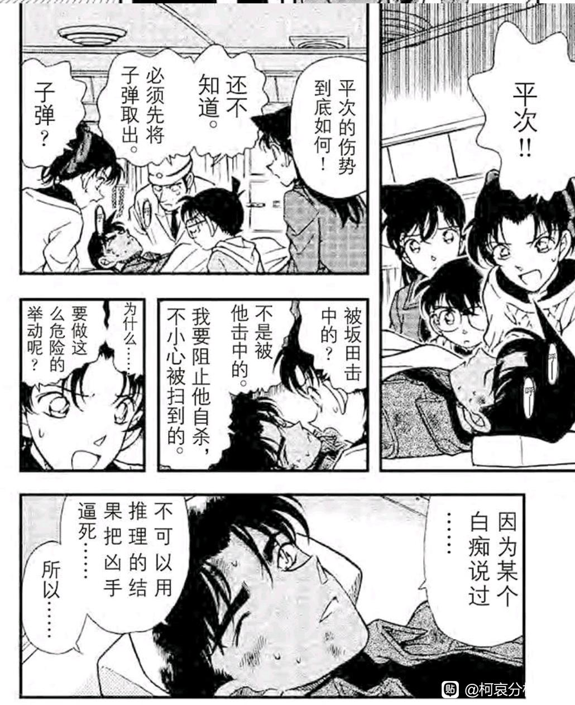
2024-03-08 05:08 | 即将02的废物月:“不好意思啊我就是色狼！”
牛逼
四、足球场恐吓案：柯哀的悸动
不论看多少遍都觉得很精彩的一案，这就是柯哀无与伦比的魅力。扉页给了少侦【五人】进行大特写，以最快的方式让读者反应过来：小哀要加入日常了！
球衣号码应该是有讲究的，可能会和当时的一些球员有对应，不过现在应该不那么容易考证了，最多能知道柯哀的球衣恰好是84岁，白头偕老的寓意很不错呢。
不论看多少遍都觉得很精彩的一案，这就是柯哀无与伦比的魅力。扉页给了少侦【五人】进行大特写，以最快的方式让读者反应过来：小哀要加入日常了！
球衣号码应该是有讲究的，可能会和当时的一些球员有对应，不过现在应该不那么容易考证了，最多能知道柯哀的球衣恰好是84岁，白头偕老的寓意很不错呢。
2024-02-09 21:23 | 贴吧用户_QA9a7RQ:球衣号码的对应水楼有人提过2024-02-09 21:57 | 🌐之徙:回复 贴吧用户_QA9a7RQ ::水楼太难翻了2024-02-09 23:11 | 贴吧用户_QA9a7RQ:你还记得有什么分析吗
回复 🌐之徙 :我也记不太清了2024-02-12 00:23 | 贴吧用户_0yVME5Z:189话竞技场篇出版时间为97年12月，97年11月16日日本男足在世预赛亚洲区附加赛加时进球绝杀了伊朗，历史第一次打进世界杯决赛圈。彼时日本男足头号球星也是日本足球历史上的头号球星——中田英寿，在国家队穿8号球衣。（转）2024-02-12 00:24 | 贴吧用户_0yVME5Z:柯南的4号井原正已，彼时日本男足队长，日本男足历史上最伟大的中后卫。元太的14号是进球绝杀的冈野雅行。步美的18号是打进扳平比分的替补城彰二。光彦的32号是打进首球的中山雅史。（转）2024-02-12 01:03 | 🌐之徙:回复 贴吧用户_0yVME5Z :那看来只是一个小彩蛋，剧情上没有什么作用2024-02-23 05:20 | 即将02的废物月:回复 🌐之徙 :柯哀的巧合真的是不可思议的多啊，包括这个球衣，包括剧场版延期等等，可能真是天注定吧 《转动命运之轮》
首先恭喜直树选手没有被小兰打到退役，再次出现在球场上和赤木英雄会合！
小哀带着墨镜坐在少侦后面，假装看杂志，其实一直忍不住在观察柯南，她对柯南越来越感兴趣了。（柯南与少侦看足球比赛发生在赤木量子案，该案件因为小兰的操作而十分著名），此前小哀似乎不太清楚柯南的足球爱好。
小哀带上了墨镜，这是组织的颜色，她在用表面上的坚强伪装并保护自己，时刻告诉自己和三小只处于不同的世界，对话时也总是提到组织。
柯南察觉到小哀的不安（但显然不止于此），摘下她代表组织的墨镜，换上自己的帽子，用自己的保护取代了小哀表面坚强的外壳，牵着她的手去看比赛，在她面前毫不掩饰自己对足球的热爱。
进展快吗？不快。
柯南内心中有着对小哀的一份悸动，早在小哀踏入1年B班的教室就开始了，奇妙而神秘的悸动抓住侦探的心，当小哀透露出一点对足球的兴趣时，他迫不及待地邀请小哀，仿佛取得了什么重大胜利一样，在看球时旁边的光彦因为一个坏球而表情凝重，而柯南却还是兴奋不已。
柯南还没办法把这些对小哀的悸动总结成心动，但是心动已经事实上发生，且事实上指导了柯南的行动。
更何况，心动的不只是柯南。
小哀带着墨镜坐在少侦后面，假装看杂志，其实一直忍不住在观察柯南，她对柯南越来越感兴趣了。（柯南与少侦看足球比赛发生在赤木量子案，该案件因为小兰的操作而十分著名），此前小哀似乎不太清楚柯南的足球爱好。
小哀带上了墨镜，这是组织的颜色，她在用表面上的坚强伪装并保护自己，时刻告诉自己和三小只处于不同的世界，对话时也总是提到组织。
柯南察觉到小哀的不安（但显然不止于此），摘下她代表组织的墨镜，换上自己的帽子，用自己的保护取代了小哀表面坚强的外壳，牵着她的手去看比赛，在她面前毫不掩饰自己对足球的热爱。
进展快吗？不快。
柯南内心中有着对小哀的一份悸动，早在小哀踏入1年B班的教室就开始了，奇妙而神秘的悸动抓住侦探的心，当小哀透露出一点对足球的兴趣时，他迫不及待地邀请小哀，仿佛取得了什么重大胜利一样，在看球时旁边的光彦因为一个坏球而表情凝重，而柯南却还是兴奋不已。
柯南还没办法把这些对小哀的悸动总结成心动，但是心动已经事实上发生，且事实上指导了柯南的行动。
更何况，心动的不只是柯南。
和小哀比起来，足球显得有些乏味了。
三小只还在快乐的看足球，柯南已经被身旁小哀直勾勾的眼神弄得心神不宁，他突然想知道小哀的一切，想知道她的爱好，想知道她泰然自若的理由，“你从来不兴奋，不激动的吗？”
这里柯南的行动已经超出了“给她安全”，超出了“与她分享我所喜欢的事”，而到了“我想知道你的一切”的程度。
小哀的答案是【因为有你在】，把柯南弄得脸红害羞，柯南也许根本没想过小哀的答案，突然的浪漫感让柯南放弃了理智的思考，他迫不及待地，有些犹豫地问了更加隐私的问题：年龄。
84岁，一个显然的谎言。柯南见过明美，其实很容易猜测小哀的年龄，所以小哀用了不可思议的玩笑暂时消解了柯哀的浪漫。还不到时候，还需要观察，然后更加感兴趣和心动。
这是柯哀间奇妙的相互吸引，一旦开始就停不下来。
三小只还在快乐的看足球，柯南已经被身旁小哀直勾勾的眼神弄得心神不宁，他突然想知道小哀的一切，想知道她的爱好，想知道她泰然自若的理由，“你从来不兴奋，不激动的吗？”
这里柯南的行动已经超出了“给她安全”，超出了“与她分享我所喜欢的事”，而到了“我想知道你的一切”的程度。
小哀的答案是【因为有你在】，把柯南弄得脸红害羞，柯南也许根本没想过小哀的答案，突然的浪漫感让柯南放弃了理智的思考，他迫不及待地，有些犹豫地问了更加隐私的问题：年龄。
84岁，一个显然的谎言。柯南见过明美，其实很容易猜测小哀的年龄，所以小哀用了不可思议的玩笑暂时消解了柯哀的浪漫。还不到时候，还需要观察，然后更加感兴趣和心动。
这是柯哀间奇妙的相互吸引，一旦开始就停不下来。
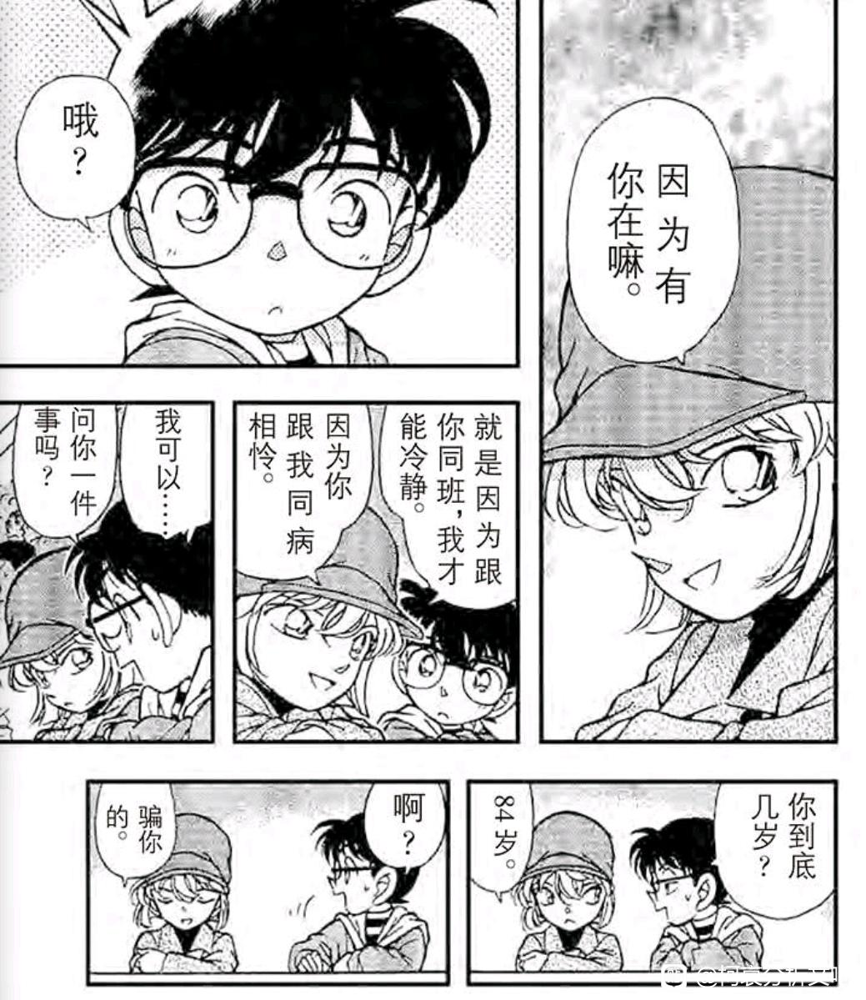
柯哀的休息时间结束了，为了观测警察的动向，柯南在目暮警官的通讯器上装了窃听器，并直接被小哀发现。（此时小哀还不能立刻知道柯南是在装窃听器，后来就变成读柯术了）
看柯南的表情，我只能说柯哀是那种能坏到一起去的人，小哀看见柯南的动作就知道他动了手脚，柯南也毫不避讳，直接就是炫耀般地向小哀说了自己的窃听手段，你们才认识了几天？
而且需要注意的是，柯南是靠眼镜来听警察的行动的，旁边的小哀却全部知道，此时柯哀还没有进化到共享耳机的地步，我只能认为是柯南不自觉地向小哀做了实时转播。
柯南真的很爱在小哀面前炫耀，目暮警官都变成了工具人。反过来想，柯南的表现欲在小兰身边被压制了多久？
看柯南的表情，我只能说柯哀是那种能坏到一起去的人，小哀看见柯南的动作就知道他动了手脚，柯南也毫不避讳，直接就是炫耀般地向小哀说了自己的窃听手段，你们才认识了几天？
而且需要注意的是，柯南是靠眼镜来听警察的行动的，旁边的小哀却全部知道，此时柯哀还没有进化到共享耳机的地步，我只能认为是柯南不自觉地向小哀做了实时转播。
柯南真的很爱在小哀面前炫耀，目暮警官都变成了工具人。反过来想，柯南的表现欲在小兰身边被压制了多久？
2024-02-21 14:00 | FTAC_X2:眼镜的扩音器估计不能多收音，怕不是贴在边上就能听到漏音……嗯，就是传统意义上的贴贴
之前我看到一个说法：在大部分人眼里，柯南/新一是无所不能的大侦探，尤其小兰遇到困难就会进入【如果是新一会怎么做】的思考量，但只有在父母，博士，服部或小哀眼中，柯南是个不靠谱的小侦探，他会因为案件时间紧张而满头大汗，会因为轻敌而疏忽大意，会不由自主地出不必要的风头，会害怕推理的错误，这些都是柯南/新一的真实一面，但却不是所有人都能看到。
小兰看不到，新干线爆炸案的柯南比现在还急，却被小兰完全无视，空中密室的新一根本没什么自信，结果小兰直接叫他放弃推理。
但小哀一直能看见，她不由自主地观察着柯南的一举一动，黑衣女子假钞案的急躁，广田教授案的钻牛角尖，以及本次足球场恐吓案，柯南【让时间停止吧】的紧张不安。
不认识真正的柯南，怎么可能爱上他呢？
不观测真实的柯南，怎么可能认识他呢？
小兰看不到，新干线爆炸案的柯南比现在还急，却被小兰完全无视，空中密室的新一根本没什么自信，结果小兰直接叫他放弃推理。
但小哀一直能看见，她不由自主地观察着柯南的一举一动，黑衣女子假钞案的急躁，广田教授案的钻牛角尖，以及本次足球场恐吓案，柯南【让时间停止吧】的紧张不安。
不认识真正的柯南，怎么可能爱上他呢？
不观测真实的柯南，怎么可能认识他呢？
2024-02-09 04:16 | 成冰的雨点:记得第一次看就特别喜欢这个案子，虽然当时没想到作者这么细，但特别喜欢柯哀之间的互动，自然而妙趣横生。如果再看作者分析的话，那就是“局外人都只看你飞得高不高，而真正爱你的人才会关心你飞得累不累”，或者在柯南的立场上就是只有在真正信任而且可以依靠的人面前才会流露2024-02-09 04:17 | 成冰的雨点:回复 成冰的雨点 :真实的一面
依靠着小哀和三小只的助攻，柯南最终找到了犯人。本章叫做“远方之眼”，不过就本案犯人这种傻劲，肯定谈不上远见，因此事实上远方之眼是指柯哀，本案已经可以窥见柯哀未来的相处模式了。
小哀本案中又一次近距离感受到柯南的魅力，在发生危险时把三小只保护在身后，结案后又对表现优秀的三小只加以鼓励；尽管急躁地想要解决案件，却能发现各种各样的细微之处；把小哀从封闭的位置拯救出来，希望她能成为正常的女孩……
她对柯南越来越感兴趣了，感兴趣是喜欢吗？还不是，但她向柯南透露了自己的年龄，脸上挂着红晕。小哀的内心无疑也是悸动的。
朦胧的，懵懂的，胡思乱想的，想知道对方一切悸动，正在柯哀之间生根发芽。
即使按大时间线算，这也只是柯哀一周的进度（圣诞节前后小哀转学-天皇杯一月一日），小时间则更快，只有短短三天。
太快了是吗？所以烟雾弹要出现了，下一案，魔术爱好者案，新兰感情的重要节点，我们将看到为什么烟雾弹只是烟雾弹，而远方之眼就是远方之眼。
小哀本案中又一次近距离感受到柯南的魅力，在发生危险时把三小只保护在身后，结案后又对表现优秀的三小只加以鼓励；尽管急躁地想要解决案件，却能发现各种各样的细微之处；把小哀从封闭的位置拯救出来，希望她能成为正常的女孩……
她对柯南越来越感兴趣了，感兴趣是喜欢吗？还不是，但她向柯南透露了自己的年龄，脸上挂着红晕。小哀的内心无疑也是悸动的。
朦胧的，懵懂的，胡思乱想的，想知道对方一切悸动，正在柯哀之间生根发芽。
即使按大时间线算，这也只是柯哀一周的进度（圣诞节前后小哀转学-天皇杯一月一日），小时间则更快，只有短短三天。
太快了是吗？所以烟雾弹要出现了，下一案，魔术爱好者案，新兰感情的重要节点，我们将看到为什么烟雾弹只是烟雾弹，而远方之眼就是远方之眼。
2024-02-09 04:58 | 一叶之秋🌿🍁🍁:难以想象如果不是小兰作为干扰，柯哀确定感情会有多快，小哀可能一个月内就拿下柯南了。2024-02-12 00:28 | 贴吧用户_0yVME5Z:还是不得不提的翻译，“是和你相当的18岁呢”→“是和你相配的18岁呢”
五、有些直白的烟雾弹：魔术爱好者案与浴室密室案
这两个案件位于足球场恐吓案和蓝色古堡案中间，是高质量柯哀剧情中插入的看似甜蜜的新兰剧情，然而，即使最简单的分析，也能发现新兰剧情的不协调和不幸。
首先是扉页，兔女郎小兰扶着魔术师柯南，抛开福利担当的部分，还是比较甜蜜的……
然后这章的标题叫【快逃啊！】
……
可以有更多简单的标题，例如【魔术爱好者的聚会】之类的，而且【快逃】也不是任何重要的剧情（小兰最后也没有逃），那么就只剩下标题为图片服务了。
帽子里变出的鸽子对柯南说：“快 逃 啊 ！”
这两个案件位于足球场恐吓案和蓝色古堡案中间，是高质量柯哀剧情中插入的看似甜蜜的新兰剧情，然而，即使最简单的分析，也能发现新兰剧情的不协调和不幸。
首先是扉页，兔女郎小兰扶着魔术师柯南，抛开福利担当的部分，还是比较甜蜜的……
然后这章的标题叫【快逃啊！】
……
可以有更多简单的标题，例如【魔术爱好者的聚会】之类的，而且【快逃】也不是任何重要的剧情（小兰最后也没有逃），那么就只剩下标题为图片服务了。
帽子里变出的鸽子对柯南说：“快 逃 啊 ！”
2024-02-25 12:04 | 雪者风形:妹蚌住
本案一开始，园子表演了一个简单的魔术，准备在别人面前秀，柯南对此表示别丢人了，他们专业魔术师直接看你笑话。
小兰：【别在意啦，从我说要参加你们的聚会以来他一直不高兴】
我不知道柯南听这话感受如何，但恐怕不会很开心，小兰的行为明显是借贬低柯南以吹捧园子，而且其中更是有长期雷点，即【很多时候，都是小兰主动去蹭园子的聚会】
园子这些聚会大多都是交友性质，这此也不例外（和基德网恋奔现），小兰一方面自认为自己是工藤的女人，另一方面却积极的参加这些聚会。
只有一个原因：想看柯南吃醋。
所以柯南嘲笑园子的魔术不好时，小兰自然是以为自己的战术代餐成功，还和园子分享了这一“喜悦”。
本来柯南还想一起去看魔术的，结果没什么热情，跟着小五郎开车回家。
不愧是【快逃啊】，柯南果然跑了。
小兰：【别在意啦，从我说要参加你们的聚会以来他一直不高兴】
我不知道柯南听这话感受如何，但恐怕不会很开心，小兰的行为明显是借贬低柯南以吹捧园子，而且其中更是有长期雷点，即【很多时候，都是小兰主动去蹭园子的聚会】
园子这些聚会大多都是交友性质，这此也不例外（和基德网恋奔现），小兰一方面自认为自己是工藤的女人，另一方面却积极的参加这些聚会。
只有一个原因：想看柯南吃醋。
所以柯南嘲笑园子的魔术不好时，小兰自然是以为自己的战术代餐成功，还和园子分享了这一“喜悦”。
本来柯南还想一起去看魔术的，结果没什么热情，跟着小五郎开车回家。
不愧是【快逃啊】，柯南果然跑了。
不但柯南觉得这聚会不怎么样，小五郎也各种不放心，甚至专门威胁了聚会里的男性，即使如此，柯南仍然觉得不放心，主要是对小兰的空手道表示怀疑，绷带怪人怎么不用空手道？打前田聪怎么缩了？也就踢了父亲一次头，算是【防止被摸】
然而不放心归不放心，柯南就这样跟着小五郎走了，他的安全感早就被小兰的多次代餐给弄得无所谓了，只要不是极端的情况（如基德扒衣服）柯南是真的不想管。
小五郎的话更是一语双关，小五郎号称要去浪，不受小兰拘俗，可实际上是小兰不受小五郎和柯南的拘俗，大过年在外面玩。（小五郎并没有去玩，他一直在和目暮警官准备警力救援，替小兰的游玩复出代价）
唉，这才是真心话。
然而不放心归不放心，柯南就这样跟着小五郎走了，他的安全感早就被小兰的多次代餐给弄得无所谓了，只要不是极端的情况（如基德扒衣服）柯南是真的不想管。
小五郎的话更是一语双关，小五郎号称要去浪，不受小兰拘俗，可实际上是小兰不受小五郎和柯南的拘俗，大过年在外面玩。（小五郎并没有去玩，他一直在和目暮警官准备警力救援，替小兰的游玩复出代价）
唉，这才是真心话。
然而小五郎和柯南在回家路上，突然听到了新闻里的杀人消息，意识到小兰即将有危险，两人迅速折回，并遇到即将烧毁的桥。
于是柯南迅速决策，小五郎报警，他进别墅保证小兰的安全，但是，柯南回忆里的小兰还是这个表情……
这个表情和柯南绑架案里【不想离开日本的理由】，没有任何区别。柯南还能记得，绷带怪人案小兰睡死被连续攻击，几乎丧命，还能记得选婿案被下药泡在水池里，还能记得小兰安全帽也不带就要冲入火场，而这里三种记忆的要素全部出现，吊桥（绷带怪人）柯南感冒（选婿案后）火灾（麻美学姐案）
柯南如果只是简单报警，小兰发生了危险，算不算柯南的责任？他脑海中的小兰不是一个具体的，有情感的，曾经在他怀里哭泣的女孩，而是一个笑脸的象征符号。这是主观被迫，保护小兰变成了一种难以规避的责任。
这样会很累的吧。
于是柯南迅速决策，小五郎报警，他进别墅保证小兰的安全，但是，柯南回忆里的小兰还是这个表情……
这个表情和柯南绑架案里【不想离开日本的理由】，没有任何区别。柯南还能记得，绷带怪人案小兰睡死被连续攻击，几乎丧命，还能记得选婿案被下药泡在水池里，还能记得小兰安全帽也不带就要冲入火场，而这里三种记忆的要素全部出现，吊桥（绷带怪人）柯南感冒（选婿案后）火灾（麻美学姐案）
柯南如果只是简单报警，小兰发生了危险，算不算柯南的责任？他脑海中的小兰不是一个具体的，有情感的，曾经在他怀里哭泣的女孩，而是一个笑脸的象征符号。这是主观被迫，保护小兰变成了一种难以规避的责任。
这样会很累的吧。
我们把视角离开柯南，来到小兰这边。小兰本案表现其实还不错。
小兰的聚会实在乏善可陈，相对于园子对魔术的热衷，小兰并不能说出自己最喜欢的魔术师，她在园子的团体里同样是没有参与感的。
好在小兰听力过关，听到了柯南的呼唤并把他带到屋内，由基德提供了退烧药，总算不至于发生外交官案柯南感冒小兰逃跑的闹剧。同时照顾柯南也算是正事，可以避免魔术师聚会的尴尬。
总体而言，意识到柯南/新一一边感冒一边为了她跑回来，小兰还是相当满意的。后续她也较为积极地参与案件，从这一角度来说，毕竟比之前的小兰要好一些，不是吗？
小兰的聚会实在乏善可陈，相对于园子对魔术的热衷，小兰并不能说出自己最喜欢的魔术师，她在园子的团体里同样是没有参与感的。
好在小兰听力过关，听到了柯南的呼唤并把他带到屋内，由基德提供了退烧药，总算不至于发生外交官案柯南感冒小兰逃跑的闹剧。同时照顾柯南也算是正事，可以避免魔术师聚会的尴尬。
总体而言，意识到柯南/新一一边感冒一边为了她跑回来，小兰还是相当满意的。后续她也较为积极地参与案件，从这一角度来说，毕竟比之前的小兰要好一些，不是吗？
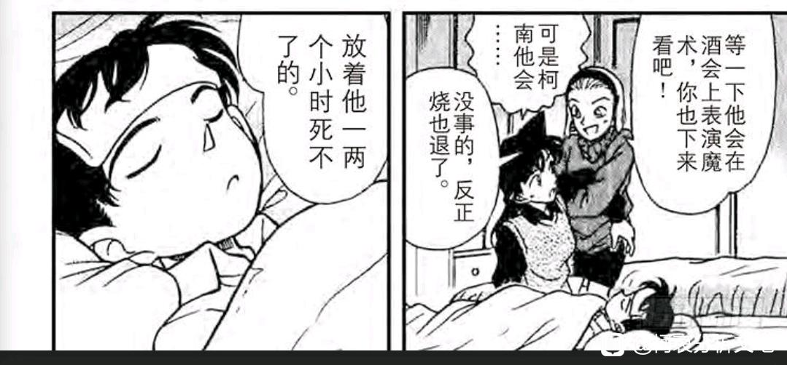
接下来又是一个重量级剧情。
园子因为曾经担任死者的魔术助手，认为死者会死是自己的原因，基德有理有据地为园子进行了开导。
说者无意，听者有心，还记得柯南来别墅的目的吗？是叫小兰“快跑”，把小兰的安全作为自己的责任进行无原则的背负。但是听了基德一番话，柯南主观被迫的保护小兰意愿小了很多，说法也改为“小五郎叔叔会叫警察来的”
M27尚未播出，但基德在此时真的斩断过红桃A，作为拥有真正青梅竹马的人，基德也许已经看出柯南对小兰的背负过多，所以进行了隐晦的提醒。（这是在基德和柯南还不太熟的时候），那么在M27或者更晚的时代呢？基德应该会在新兰剧情中发挥极为关键的作用，并很可能成为点醒柯南感情世界的人之一。
园子因为曾经担任死者的魔术助手，认为死者会死是自己的原因，基德有理有据地为园子进行了开导。
说者无意，听者有心，还记得柯南来别墅的目的吗？是叫小兰“快跑”，把小兰的安全作为自己的责任进行无原则的背负。但是听了基德一番话，柯南主观被迫的保护小兰意愿小了很多，说法也改为“小五郎叔叔会叫警察来的”
M27尚未播出，但基德在此时真的斩断过红桃A，作为拥有真正青梅竹马的人，基德也许已经看出柯南对小兰的背负过多，所以进行了隐晦的提醒。（这是在基德和柯南还不太熟的时候），那么在M27或者更晚的时代呢？基德应该会在新兰剧情中发挥极为关键的作用，并很可能成为点醒柯南感情世界的人之一。
2024-02-09 19:13 | 一叶之秋🌿🍁🍁:想想确实是柯南反应过度了，这个案子小兰其实没有危险，绷带怪人案要不是她不敲门其实也没事。2024-02-22 02:46 | 即将02的废物月:回复 🌐之徙 :插眼，看看m27，中了刀你
抛开CP关系不谈，穿厚衣服的柯兰还是很有爱的，只是也太偏向亲情了一点。
只不过，我怀疑柯南故意卖萌是为了从小兰嘴里套话，获取更多线索，之后柯南向小兰询问了大量之前晕倒时没收到的信息，确定了大部分嫌疑人的不在场证明。
如果柯南不这么做，小兰一点线索也不给，还处处妨碍柯南。我截取了在没有小兰参与的情况下，柯南找线索时小兰的态度：问嫌疑人不让问，找线索不让找，跑现场不让跑。
如果柯南参与的案件与小兰强相关，小兰也可以态度很好地帮柯南破案，问题是小兰很不能接受柯南游离于自己之外找线索，她用【柯南监护人】身份做着【工藤的女人】所不能做的控制柯南的动作，仿佛只要这么做，新一就不会离开她……
恐怕小兰的愿望会落空吧。
只不过，我怀疑柯南故意卖萌是为了从小兰嘴里套话，获取更多线索，之后柯南向小兰询问了大量之前晕倒时没收到的信息，确定了大部分嫌疑人的不在场证明。
如果柯南不这么做，小兰一点线索也不给，还处处妨碍柯南。我截取了在没有小兰参与的情况下，柯南找线索时小兰的态度：问嫌疑人不让问，找线索不让找，跑现场不让跑。
如果柯南参与的案件与小兰强相关，小兰也可以态度很好地帮柯南破案，问题是小兰很不能接受柯南游离于自己之外找线索，她用【柯南监护人】身份做着【工藤的女人】所不能做的控制柯南的动作，仿佛只要这么做，新一就不会离开她……
恐怕小兰的愿望会落空吧。
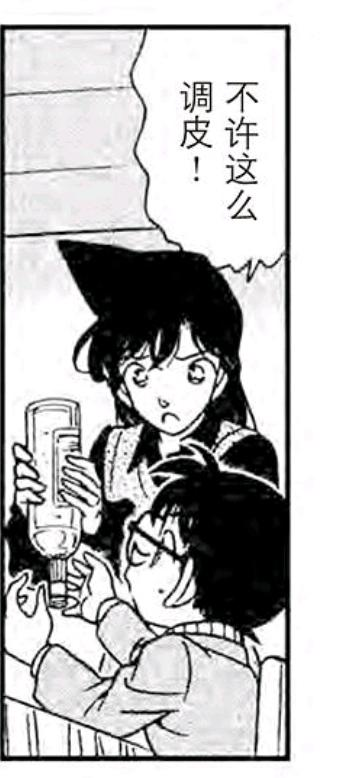
cy
第90天：浴室密室案
小兰经历的剧情里情杀案的比重实在太多了，本案也是经典的一案，犯人通过制造假密室将凶杀伪装成自杀。
然后我们回忆一下小哀的剧情，假钞案，广田教授案还有足球场恐吓案（甚至是为爱恐吓的），后面的蓝色古堡/电影院等章节同样不是情杀，甚至到了危命复活，小哀剧情的情杀量还是0。（明明危命复活是可以设置成情杀案的，但却设置成药物实验动机，显然是暗示试药论）
这会对两条感情线的氛围产生极为显著的影响，部分剧情甚至直接就是在影射新兰关系。远的云霄飞车就不谈了，海蛇案死者假装溺水，像不像小兰在工藤家自冻三小时？
本案也不例外，首先我们来看推翻【小兰学霸论】的直接证据：
小五郎：你下周要考试，所以把票给我吧！
真正的学霸（例如中森青子）应该会说“考试有什么难的”或“我早就复习完了”
小兰的回答是“我也期待（洋子的表演）很久了！”
1200万人质和纽约篇还有小兰不是学霸的更直接证据，我其实不太懂小兰学霸论到底是从哪里体现的，从漫画刻画来看，小兰的学习水平与园子相当，大概是不一定会上大学的水平（麻美学姐只是高分上大学就被小兰惊为天人），但问题是园子有钱啊。
这就让小兰对新一的追逐增加了很多现实因素，如果不尽早成为新一的妻子，那么小兰在社会上就几乎失去了锚点，仅凭借空手道市冠军的身份，似乎不足以支撑小兰的未来。
小兰经历的剧情里情杀案的比重实在太多了，本案也是经典的一案，犯人通过制造假密室将凶杀伪装成自杀。
然后我们回忆一下小哀的剧情，假钞案，广田教授案还有足球场恐吓案（甚至是为爱恐吓的），后面的蓝色古堡/电影院等章节同样不是情杀，甚至到了危命复活，小哀剧情的情杀量还是0。（明明危命复活是可以设置成情杀案的，但却设置成药物实验动机，显然是暗示试药论）
这会对两条感情线的氛围产生极为显著的影响，部分剧情甚至直接就是在影射新兰关系。远的云霄飞车就不谈了，海蛇案死者假装溺水，像不像小兰在工藤家自冻三小时？
本案也不例外，首先我们来看推翻【小兰学霸论】的直接证据：
小五郎：你下周要考试，所以把票给我吧！
真正的学霸（例如中森青子）应该会说“考试有什么难的”或“我早就复习完了”
小兰的回答是“我也期待（洋子的表演）很久了！”
1200万人质和纽约篇还有小兰不是学霸的更直接证据，我其实不太懂小兰学霸论到底是从哪里体现的，从漫画刻画来看，小兰的学习水平与园子相当，大概是不一定会上大学的水平（麻美学姐只是高分上大学就被小兰惊为天人），但问题是园子有钱啊。
这就让小兰对新一的追逐增加了很多现实因素，如果不尽早成为新一的妻子，那么小兰在社会上就几乎失去了锚点，仅凭借空手道市冠军的身份，似乎不足以支撑小兰的未来。
随后小五郎在凶手家里认出了若干偶像，排在TWO_MIX后面的是一个只要不是完全的云就知道的重要路人：星野辉美，这个名字与新一/志保的关系已经被拆得差不多了，而且出现得太早了（仅在小哀登场后第7个案件），仿佛青山在炫耀自己制作了这个名字一样。
星野辉美本人登场于第157天【偶像们的秘密】，作为新一的粉丝而出现，小时间线隔了67天，大时间线隔了约两年，大体上可以认为星野辉美是先有名字再有人设，反过来证实关于新一/志保姓名组合的猜测是很可能存在的。
星野辉美本人登场于第157天【偶像们的秘密】，作为新一的粉丝而出现，小时间线隔了67天，大时间线隔了约两年，大体上可以认为星野辉美是先有名字再有人设，反过来证实关于新一/志保姓名组合的猜测是很可能存在的。
小兰在浴室密室案表现如何呢？
不怎么样。
如图是目暮警官和小五郎正在迅速分析柯南提供的线索，小兰把柯南拖走了……
柯南在目暮等人心中的信用正在逐渐提高，他已经不是新干线爆破案那个需要向小兰表露身份才能使众人相信的小孩子了，如果小兰不拖开柯南，那么就会变成三个男人积极分析案情，小兰呆在一边不知所措，完全跟不上他们的节奏。
对小兰而言，更难过的是柯南的这种行为只会越来越多，本案开始，高木警官也成为柯南案件分析时的重要伙伴，小兰在案发现场进一步边缘化。
可是小兰没有采取什么行动，她是一个等待的人，却不知道“逃避是不会赢的”这样简单的道理。作者本可以安排小兰发现本案凶手的头带线索（小兰也是洋子的粉丝，发现线索不奇怪），但什么都没有发生。
小兰稀缺的线索提供能力（由服部的几个案件偶然激发），真的能成为她无限等待下去的燃料吗？
不怎么样。
如图是目暮警官和小五郎正在迅速分析柯南提供的线索，小兰把柯南拖走了……
柯南在目暮等人心中的信用正在逐渐提高，他已经不是新干线爆破案那个需要向小兰表露身份才能使众人相信的小孩子了，如果小兰不拖开柯南，那么就会变成三个男人积极分析案情，小兰呆在一边不知所措，完全跟不上他们的节奏。
对小兰而言，更难过的是柯南的这种行为只会越来越多，本案开始，高木警官也成为柯南案件分析时的重要伙伴，小兰在案发现场进一步边缘化。
可是小兰没有采取什么行动，她是一个等待的人，却不知道“逃避是不会赢的”这样简单的道理。作者本可以安排小兰发现本案凶手的头带线索（小兰也是洋子的粉丝，发现线索不奇怪），但什么都没有发生。
小兰稀缺的线索提供能力（由服部的几个案件偶然激发），真的能成为她无限等待下去的燃料吗？
六、蓝色古堡：小哀的自我审视
蓝色古堡是柯南世界中永恒的经典，不论是人物塑造还是剧情都相当出色（除了古堡内家庭关系有点太复杂，其他方面都极为精彩）
而在感情线的分析中，蓝色古堡也是小哀确定自己心意的篇章，与迟钝而缺乏自我审视的柯南不同，小哀在登场后一周以内，就完全确定了自己的心意，她对柯南不再是单纯的感兴趣了。
而柯南某种意义上进度比小哀还要快（但他自己没那么快注意到），注意博士的车位，步美靠在椅子上，光彦居中，【柯南与光彦距离较大】，不难发现，在光彦/步美/博士的椅子围起来的狭小空间里，【柯南故意和小哀坐得特别近】，甚至不愿意靠近光彦一点。
下了车也一样，柯南就是喜欢跟在小哀附近，这些可都发生在小哀透露自己年龄之后，并且从此成为柯哀相处的常态，被三小只和博士完全目击下来。
只是“同病相怜”，所以靠的更近吗？足球场柯南可是又强戴帽子又牵手看球，当时还没有同病相怜的说法呢。
是内心的悸动，是靠近会心慌意乱，却又忍不住靠近的悸动。而小哀的回应是偷偷观察，有些怕被他发现却又希望他发现的观察。
要陷进去喽。
蓝色古堡是柯南世界中永恒的经典，不论是人物塑造还是剧情都相当出色（除了古堡内家庭关系有点太复杂，其他方面都极为精彩）
而在感情线的分析中，蓝色古堡也是小哀确定自己心意的篇章，与迟钝而缺乏自我审视的柯南不同，小哀在登场后一周以内，就完全确定了自己的心意，她对柯南不再是单纯的感兴趣了。
而柯南某种意义上进度比小哀还要快（但他自己没那么快注意到），注意博士的车位，步美靠在椅子上，光彦居中，【柯南与光彦距离较大】，不难发现，在光彦/步美/博士的椅子围起来的狭小空间里，【柯南故意和小哀坐得特别近】，甚至不愿意靠近光彦一点。
下了车也一样，柯南就是喜欢跟在小哀附近，这些可都发生在小哀透露自己年龄之后，并且从此成为柯哀相处的常态，被三小只和博士完全目击下来。
只是“同病相怜”，所以靠的更近吗？足球场柯南可是又强戴帽子又牵手看球，当时还没有同病相怜的说法呢。
是内心的悸动，是靠近会心慌意乱，却又忍不住靠近的悸动。而小哀的回应是偷偷观察，有些怕被他发现却又希望他发现的观察。
要陷进去喽。
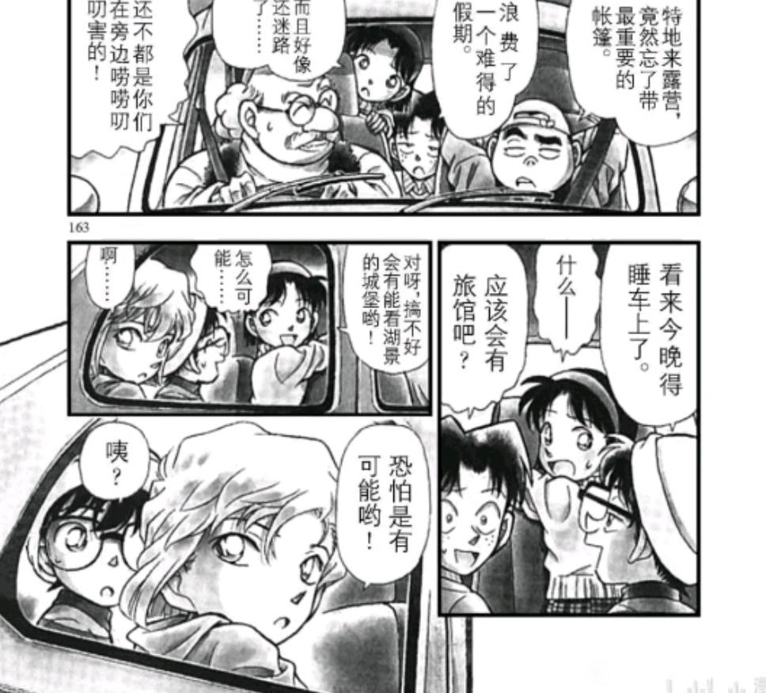
懵懂的爱意不断积累，最终让小哀悄悄迈出了一步。
她等到元太离开房间，步美专注于窗外，柯南坐下来想暗号之后，仿佛下定了什么决心，她走向柯南，双方眼神对视，不自觉地靠近，脸红，心跳，忘记周围的一切……被步美的叫声惊醒，仿佛做了错事被抓住一样看向步美……
小哀的情感在几秒钟的对视中倾泄而出，持续的注视和好奇化为无法抑制的爱，大约从这时候起，小哀认清了自己的内心，她很可能喜欢眼前的男孩，喜欢这个不顾一切追求真相，背负一切危险保护身边人的男孩。
她等到元太离开房间，步美专注于窗外，柯南坐下来想暗号之后，仿佛下定了什么决心，她走向柯南，双方眼神对视，不自觉地靠近，脸红，心跳，忘记周围的一切……被步美的叫声惊醒，仿佛做了错事被抓住一样看向步美……
小哀的情感在几秒钟的对视中倾泄而出，持续的注视和好奇化为无法抑制的爱，大约从这时候起，小哀认清了自己的内心，她很可能喜欢眼前的男孩，喜欢这个不顾一切追求真相，背负一切危险保护身边人的男孩。
2024-02-25 08:23 | 黑暗刺猬-夏特:灰原那串省略号应该就是提示了2024-03-15 04:13 | hadua135:现在看下来前后期柯哀互动对比好明显，从哀看柯省略号表示心理活动到柯看哀省略号代表心理活动
小哀大概以为，自己的喜欢是偷偷喜欢吧。
但是她对柯南的了解与关心早已超出了界限，在柯南失踪时第一个开始寻找，相信只有那个失踪的小迷糊才能解开这里的谜题（翻译组不给力地翻译成推理狂），知道江户川不是那么容易击垮的人，比博士更清楚柯南遇到的危险……
小哀的爱意被步美发现了。
太明显了，即使一年级的小女孩也可以看出小哀的想法，她不能再应付步美，必须做出真正的回答：“是的话呢？”
然后小哀突然明白了一件事：她绝不可以说出真正的答案，因为那会让步美伤心，会让柯南陷入不必要的麻烦，柯南不应该喜欢来自黑暗的她。
撒谎，欺骗步美，欺骗自己，露出落寞的眼神，她不会让博士或三小只理解这些，她的爱意必须深藏起来，在学会爱的一天，小哀学会了隐藏爱。
真的隐藏得住吗？
但是她对柯南的了解与关心早已超出了界限，在柯南失踪时第一个开始寻找，相信只有那个失踪的小迷糊才能解开这里的谜题（翻译组不给力地翻译成推理狂），知道江户川不是那么容易击垮的人，比博士更清楚柯南遇到的危险……
小哀的爱意被步美发现了。
太明显了，即使一年级的小女孩也可以看出小哀的想法，她不能再应付步美，必须做出真正的回答：“是的话呢？”
然后小哀突然明白了一件事：她绝不可以说出真正的答案，因为那会让步美伤心，会让柯南陷入不必要的麻烦，柯南不应该喜欢来自黑暗的她。
撒谎，欺骗步美，欺骗自己，露出落寞的眼神，她不会让博士或三小只理解这些，她的爱意必须深藏起来，在学会爱的一天，小哀学会了隐藏爱。
真的隐藏得住吗？
2024-02-10 10:13 | 一叶之秋🌿🍁🍁:这两段小哀的感情写的太好了
在这一天的深夜，警视厅收到了来自【工藤新一的代理人】的电话，电话那头似乎是初中年纪的女生，目暮警官对此高度重视，亲自接听了这个电话，却听到了有些熟悉的声线……
那个假钞案开枪的小女孩？说起来，假钞案也是工藤报案的……
（目暮警官的推理能力显然不能再继续推理下去了，但他已具备了生锈的条件）
那个假钞案开枪的小女孩？说起来，假钞案也是工藤报案的……
（目暮警官的推理能力显然不能再继续推理下去了，但他已具备了生锈的条件）
2024-03-26 07:35 | 洛菲斯♬:警视厅差不多全员生锈了吧
我们进入一个全新的视角：步美视角。我截取了四张图，步美被柯南和小哀以几乎完全相同的方式保护。
在步美看来，小哀已经不是【为什么那么了解柯南呢】的问题了，她在行动上都变得和柯南一致了。
当伙伴遇到危险时，小哀毫不犹豫地担任了柯南的角色，成为大家的保护者。这似乎是小哀第一次体会那种把所有的危险背负，一个人寻找真相的感觉，而这种直面真相，保护珍视之物的态度，三小只也在与柯南三个月的相处中逐渐学到了。
元太带着孩子们出来帮助小哀，与犯人搏斗并且没有被击倒；光彦以冷静出色的决策拯救了所有被困的伙伴，拿下本场MVP；步美从来都不会选择逃避，但这次步美学会了在寻找同伴的过程中保护自己……
（而有的人伙伴在黑暗中失踪，却选择躲在角落里哭，这个人号称是新一的青梅竹马）

在步美看来，小哀已经不是【为什么那么了解柯南呢】的问题了，她在行动上都变得和柯南一致了。
当伙伴遇到危险时，小哀毫不犹豫地担任了柯南的角色，成为大家的保护者。这似乎是小哀第一次体会那种把所有的危险背负，一个人寻找真相的感觉，而这种直面真相，保护珍视之物的态度，三小只也在与柯南三个月的相处中逐渐学到了。
元太带着孩子们出来帮助小哀，与犯人搏斗并且没有被击倒；光彦以冷静出色的决策拯救了所有被困的伙伴，拿下本场MVP；步美从来都不会选择逃避，但这次步美学会了在寻找同伴的过程中保护自己……
（而有的人伙伴在黑暗中失踪，却选择躲在角落里哭，这个人号称是新一的青梅竹马）
2024-02-10 08:14 | 一叶之秋🌿🍁🍁:这里和蜘蛛之家也是一个对比，步美完胜小兰。2024-03-26 07:37 | 洛菲斯♬:兰和新一相处十多年，都不学新一的理念，可以说在坚持自我方面十分优秀。
被光彦救出后，柯南还是一如既往，一副耍帅的样子，但是小哀的态度悄然发生了变化。
在黑衣女郎假钞案，小哀面无表情地看着耍帅的柯南，此时的柯南在小哀眼里是个急躁的不可靠侦探。在蓝色古堡，小哀已经见过“这世上没有解不开的难题”的柯南，已经被柯南摘掉墨镜，已经换上过他的帽子，已经和他牵手，已经和他对视到忘我，已经知道迷糊侦探的背负……
已经学会隐藏自己的感情。
她露出了笑容，不那么引人注意。
柯南好像真的有点帅……
在黑衣女郎假钞案，小哀面无表情地看着耍帅的柯南，此时的柯南在小哀眼里是个急躁的不可靠侦探。在蓝色古堡，小哀已经见过“这世上没有解不开的难题”的柯南，已经被柯南摘掉墨镜，已经换上过他的帽子，已经和他牵手，已经和他对视到忘我，已经知道迷糊侦探的背负……
已经学会隐藏自己的感情。
她露出了笑容，不那么引人注意。
柯南好像真的有点帅……
故事的最后，柯哀又靠在一起，柯南对三小只的积极行为向来是表扬为主，这次也不例外。他接过步美的面包，不知道有没有想起小时候和小兰去冒险，却没获得多少人认同的苦涩回忆呢？
小哀形式上被冷落了，所以她形式上调皮一下，和柯南唱唱反调让他注意到自己。而柯南几乎立刻识别到小哀的意思：
“难道不应该对昨晚最累的人有所表示吗？（气鼓鼓）”
到此为止，柯哀感情的第一阶段【互相的悸动】结束，小哀形成对柯南明显的单箭头，而柯南对小哀还停留在悸动阶段，下一个阶段将持续到再会篇，我称之为【小哀的进攻】阶段，我们将看到小哀是如何偷偷表露自己的爱意的。
小哀形式上被冷落了，所以她形式上调皮一下，和柯南唱唱反调让他注意到自己。而柯南几乎立刻识别到小哀的意思：
“难道不应该对昨晚最累的人有所表示吗？（气鼓鼓）”
到此为止，柯哀感情的第一阶段【互相的悸动】结束，小哀形成对柯南明显的单箭头，而柯南对小哀还停留在悸动阶段，下一个阶段将持续到再会篇，我称之为【小哀的进攻】阶段，我们将看到小哀是如何偷偷表露自己的爱意的。
七、空中密室的回忆：小兰排斥推理的原因
从假钞案到蓝色古堡，小哀对柯南的感觉大概是：【糊涂侦探-他推理的时候闪闪发光-越来越感兴趣-多看几眼-“阿拉，这不是你最喜欢的暗号吗？”（贴贴）】
而本案提供了小兰对新一的类似视角，第一次看见推理中的新一，小兰的态度与小哀截然不同。
小时间线第93天，博士感冒在家（可能是蓝色古堡躺地上了），小哀照顾博士因此避免了兰哀提前相遇，而小兰第一次知晓了小哀的存在，【住在博士家，会照顾博士，超可爱的女孩子，柯南从来不提她，但是少侦显然觉得柯南和小哀最熟悉，小哀不见了问柯南就行】
小兰很容易联想到广田教授案，柯南打电话告诉小兰“博士发明了一个新游戏”，当晚就夜不归宿了。
【这个女孩和博士一样知道柯南/新一的秘密】
那种强烈的不安又一次向小兰袭来，比她看到快斗和青子走在一起强烈，甚至比她知道麻美学姐和新一有过表白还强烈。
她感觉自己正在失去新一。
从假钞案到蓝色古堡，小哀对柯南的感觉大概是：【糊涂侦探-他推理的时候闪闪发光-越来越感兴趣-多看几眼-“阿拉，这不是你最喜欢的暗号吗？”（贴贴）】
而本案提供了小兰对新一的类似视角，第一次看见推理中的新一，小兰的态度与小哀截然不同。
小时间线第93天，博士感冒在家（可能是蓝色古堡躺地上了），小哀照顾博士因此避免了兰哀提前相遇，而小兰第一次知晓了小哀的存在，【住在博士家，会照顾博士，超可爱的女孩子，柯南从来不提她，但是少侦显然觉得柯南和小哀最熟悉，小哀不见了问柯南就行】
小兰很容易联想到广田教授案，柯南打电话告诉小兰“博士发明了一个新游戏”，当晚就夜不归宿了。
【这个女孩和博士一样知道柯南/新一的秘密】
那种强烈的不安又一次向小兰袭来，比她看到快斗和青子走在一起强烈，甚至比她知道麻美学姐和新一有过表白还强烈。
她感觉自己正在失去新一。
小兰面对真正的不安，她不能像赤木量子案那样直接追问新一，不能像麻美学姐案那样和园子倾诉，她选择了安慰自己，把柯南的眼镜摘下来，美美地回忆和新一坐飞机的场景，至少新一还在自己身边，不是吗？
【而且还要把这件事和父亲说，和三小只说，每当她的回忆被更多人知道，她似乎就能获得更多的安全感】
这是小兰的一贯策略，一般来讲是让园子执行（例如服部就从园子那里知道了“工藤的女人”），后来小兰把伦敦告白的事情对着各种人透露，原理也是一样的，无师自通地学会利用舆论压力让新一就范的方法。
然而小兰这一策略的出台却完全断绝了柯南主动透露身份给小兰的可能性，小兰的行为意味着信息泄露，意味着身份暴露，意味着在黑衣组织面前【曝光】。
隔绝新兰的不止是柯南的眼镜，还有小兰的语言。
【而且还要把这件事和父亲说，和三小只说，每当她的回忆被更多人知道，她似乎就能获得更多的安全感】
这是小兰的一贯策略，一般来讲是让园子执行（例如服部就从园子那里知道了“工藤的女人”），后来小兰把伦敦告白的事情对着各种人透露，原理也是一样的，无师自通地学会利用舆论压力让新一就范的方法。
然而小兰这一策略的出台却完全断绝了柯南主动透露身份给小兰的可能性，小兰的行为意味着信息泄露，意味着身份暴露，意味着在黑衣组织面前【曝光】。
隔绝新兰的不止是柯南的眼镜，还有小兰的语言。
小兰进入了梦境，彼时她还没有失去新一。
空中密室案的结构与纽约篇类似，都是小兰“梦见的”，这和服部的雪山案是不一样的，作为梦境的主人，小兰可以轻易对记忆进行潜移默化的改变。
当然，空中密室篇实际上是插叙，对于画面中没有小兰的部分，小兰不可能有相应的记忆，这些部分只能是案件侦破时的事实，换而言之小兰的记忆偏差只能影响她参与的部分。
首先我们来看案件发生时小兰的表现，咋一看好像是【发生案件了，快叫新一去看看】，但我们仔细看就会发生不对劲，这是新一的第一个案子，小兰根本没有理由让新一去现场看，那么小兰试图叫醒新一就只有一个理由：【发生命案了，我有点怕】
小兰叫醒新一不是让他去案发现场，而是让他呆在自己身边。
这种思维定势，形成得太早了。
空中密室案的结构与纽约篇类似，都是小兰“梦见的”，这和服部的雪山案是不一样的，作为梦境的主人，小兰可以轻易对记忆进行潜移默化的改变。
当然，空中密室篇实际上是插叙，对于画面中没有小兰的部分，小兰不可能有相应的记忆，这些部分只能是案件侦破时的事实，换而言之小兰的记忆偏差只能影响她参与的部分。
首先我们来看案件发生时小兰的表现，咋一看好像是【发生案件了，快叫新一去看看】，但我们仔细看就会发生不对劲，这是新一的第一个案子，小兰根本没有理由让新一去现场看，那么小兰试图叫醒新一就只有一个理由：【发生命案了，我有点怕】
小兰叫醒新一不是让他去案发现场，而是让他呆在自己身边。
这种思维定势，形成得太早了。
随后小兰【前往案发现场】并找到了耍帅的新一。
如果小兰真的是“推理狂”的青梅竹马，那么很容易做出这样的结论，即新一去了案发现场而且试图推理；但是小兰在与新一的谈话中进了一个奇怪的逻辑，即新一不在身边+有人死了＝新一很可能死了。
小兰的这个思考是很明显的找补思考，如果她真的认为新一可能死了，那么应该立刻冲向厕所（小兰知道命案地点）确认一下死者，而不是左顾右盼等到目暮发现她，才跟着目暮来。
尽管这个思考量是后补的，却并不妨碍小兰在新一面前说出来，表达一下关心，顺便掩饰一下自己因为不安才找新一的目的，让新一提供一下保护感。
（如果是和叶觉得服部有危险，那就直接动身找服部了，如侦探甲子园）
如果小兰真的是“推理狂”的青梅竹马，那么很容易做出这样的结论，即新一去了案发现场而且试图推理；但是小兰在与新一的谈话中进了一个奇怪的逻辑，即新一不在身边+有人死了＝新一很可能死了。
小兰的这个思考是很明显的找补思考，如果她真的认为新一可能死了，那么应该立刻冲向厕所（小兰知道命案地点）确认一下死者，而不是左顾右盼等到目暮发现她，才跟着目暮来。
尽管这个思考量是后补的，却并不妨碍小兰在新一面前说出来，表达一下关心，顺便掩饰一下自己因为不安才找新一的目的，让新一提供一下保护感。
（如果是和叶觉得服部有危险，那就直接动身找服部了，如侦探甲子园）
随后小兰的滤镜开始发挥作用，接下来几句新兰对话被屏蔽掉了，从新一和小兰的表情看，恐怕不是关于小兰睡眠的打情骂俏，而是新一试图正经地向小兰解释他所观察到的线索（把小兰当华生用），但小兰完全不在状态，于是新一只好转而向目暮警官报告嫌疑人有四个。
结果小兰又开始和新一扯睡眠问题，此时新一还没有学会灵活的拒绝小兰，就照着睡眠问题聊了下去，弄得旁边的目暮警官一脸尴尬。
我们可以发现小兰有丰富地把新一从命案现场转移注意力的经验，我甚至认为，新一到了高中才开始解决案件，小兰难辞其咎（服部解决的案件都上千了，明显初中就开始解了）
但是，小兰的这个技能现在不好用了，绷带怪人案的柯南还会因为和小兰睡觉而放弃推理，到了外交官案新一已经开始学会拒绝小兰，终止不适当的话题。
小兰可以不聊这些的，她听到过嫌疑人们的案前对话（如果是园子，已经全部和新一说了），但小兰选择聊睡眠问题，因为睡眠问题能让新一【只和她聊且聊得久一点】，而提供线索会让小兰【不甘心】，帅气的新一要去破案了，小兰也许能短暂留住他，却再也不能永远留住他。
结果小兰又开始和新一扯睡眠问题，此时新一还没有学会灵活的拒绝小兰，就照着睡眠问题聊了下去，弄得旁边的目暮警官一脸尴尬。
我们可以发现小兰有丰富地把新一从命案现场转移注意力的经验，我甚至认为，新一到了高中才开始解决案件，小兰难辞其咎（服部解决的案件都上千了，明显初中就开始解了）
但是，小兰的这个技能现在不好用了，绷带怪人案的柯南还会因为和小兰睡觉而放弃推理，到了外交官案新一已经开始学会拒绝小兰，终止不适当的话题。
小兰可以不聊这些的，她听到过嫌疑人们的案前对话（如果是园子，已经全部和新一说了），但小兰选择聊睡眠问题，因为睡眠问题能让新一【只和她聊且聊得久一点】，而提供线索会让小兰【不甘心】，帅气的新一要去破案了，小兰也许能短暂留住他，却再也不能永远留住他。
本案小兰的唯一主动贡献是向新一通报了警方第二次搜身的结果，大部分时候小兰都在质疑新一的推理。
其实质疑推理不是什么雷点，新一初出茅庐，推理栽跟头很正常，小兰的提醒也是善意的。
但问题在于，小兰质疑新一的推理后，想的不是帮他找证据，或者去思考一下“如果新一看漏了上厕所的人，那也许可以去问问其他目击者”，而是不断在新一旁边质疑他，甚至说出“要不要我帮你说两句”这种话。
如果小兰愿意替新一出头，那她直接说就可以了，类似于福尔摩斯迷案服部质疑小五郎，小兰就直接给了“沉睡的小五郎”外号，维护了小五郎的尊严。但对新一悄悄说“要不要帮你说两句”就比较怪异别扭，因为新一一定不会回答“是”，这样小兰可以心安理得地什么都不做。仿佛小兰只是想表现出关心新一自尊的样子，却因为不信任新一的推理能力而不敢行动。
我们对比一下广田教授案，同样是觉得柯南推理得不对，小哀自己想了一遍可能性，告诉柯南“物理上不可能”，结果帮柯南想出棋子倒置的关键；但小兰没有这个能力，甚至连门槛比较低的情景分析（即这几个可能嫌疑人做了什么，小五郎经常分析）都不做。
只能说，新一高二才成为名侦探是有原因的。
其实质疑推理不是什么雷点，新一初出茅庐，推理栽跟头很正常，小兰的提醒也是善意的。
但问题在于，小兰质疑新一的推理后，想的不是帮他找证据，或者去思考一下“如果新一看漏了上厕所的人，那也许可以去问问其他目击者”，而是不断在新一旁边质疑他，甚至说出“要不要我帮你说两句”这种话。
如果小兰愿意替新一出头，那她直接说就可以了，类似于福尔摩斯迷案服部质疑小五郎，小兰就直接给了“沉睡的小五郎”外号，维护了小五郎的尊严。但对新一悄悄说“要不要帮你说两句”就比较怪异别扭，因为新一一定不会回答“是”，这样小兰可以心安理得地什么都不做。仿佛小兰只是想表现出关心新一自尊的样子，却因为不信任新一的推理能力而不敢行动。
我们对比一下广田教授案，同样是觉得柯南推理得不对，小哀自己想了一遍可能性，告诉柯南“物理上不可能”，结果帮柯南想出棋子倒置的关键；但小兰没有这个能力，甚至连门槛比较低的情景分析（即这几个可能嫌疑人做了什么，小五郎经常分析）都不做。
只能说，新一高二才成为名侦探是有原因的。
我们再来看小兰最后一处记忆偏差。
新一这里询问的是：现在女生的bra上是否有钢圈？这是一个是/否的问题，新一自己不太确定所以就近问了小兰，小兰的回答是“是”。
但是，小兰进入梦话阶段，却变成了“你的bra借我看一下，里面有钢圈吧？”我们从前一张图可以轻松看出，新一并没有“借我看一下”的意思，而是“快告诉我，我自己问也觉得不好意思”。
因此，小兰事实上是把自己在回忆中的形象进行了美化，把新一变成了“骚扰她的人”，仿佛这样子新一就变成了她口中“老是欺负她”的又坏又帅的理想男孩，而且自己还可以顺理成章地要新一负责呢。
小兰想象的新一和真正的新一在回忆中进行了重组，柯南直接露出惊恐的表情，还有这种操作？
柯南重新带上了眼镜，新一这个身份已经被小兰变成这种形象了，还是当柯南好些。
新一这里询问的是：现在女生的bra上是否有钢圈？这是一个是/否的问题，新一自己不太确定所以就近问了小兰，小兰的回答是“是”。
但是，小兰进入梦话阶段，却变成了“你的bra借我看一下，里面有钢圈吧？”我们从前一张图可以轻松看出，新一并没有“借我看一下”的意思，而是“快告诉我，我自己问也觉得不好意思”。
因此，小兰事实上是把自己在回忆中的形象进行了美化，把新一变成了“骚扰她的人”，仿佛这样子新一就变成了她口中“老是欺负她”的又坏又帅的理想男孩，而且自己还可以顺理成章地要新一负责呢。
小兰想象的新一和真正的新一在回忆中进行了重组，柯南直接露出惊恐的表情，还有这种操作？
柯南重新带上了眼镜，新一这个身份已经被小兰变成这种形象了，还是当柯南好些。
2024-02-12 08:11 | 贴吧用户_0yVME5Z:没注意看当时兰神的梦话，这也是一处过去与回忆的偏差。
这么看来，新一真的是全作品第一大苦逼，被一个xxn背刺这么多心疼新一，还是当柯子好
心疼新一，还是当柯子好八、高佐对照组：柯哀的第一朵玫瑰
小哀登场后，青山笔下的主要CP呈现井喷式增长，如果说平和关系具有反衬新兰的作用，那么高佐关系无疑是柯哀的映射，最常见的映射思路是佐藤对应柯南（爱而不自知）而高木对应小哀（爱而克制），只不过高佐的难度比柯哀要小很多（白鸟并没有任何竞争力，这和新兰至少有青梅竹马做打底是不同的）
而在我看来，高佐的另一个意义是他们几乎是从零开始的，完整经历了相识到相恋的过程，这几乎是名柯世界所有CP（也许柯哀除外）具有唯一性的，如果说柯南在与小哀的相处中需要某种恋爱经验，那么高佐一定具有首要的借鉴意义。
警视厅恋爱物语1（下称【书柜夹刀案】）一开始，少侦众人前往警视厅坐笔录。小哀在这个阶段的心态非常有趣，根据服部的总结，大概是：【为什么看见柯南/和叶和异性说话，我就很不高兴呢？】
蓝色古堡结尾柯南为了鼓励步美，接受了步美的面包，小哀知道柯南做这件事很合理，但就是要找茬进去古堡吃饭；这里步美打趣柯南，小哀又是不太高兴，【即使知道柯南不会喜欢步美，还是不会高兴】。
这种小情绪在【小哀的进攻】阶段一直存在，不但不高兴，还希望柯南注意到自己不高兴。
柯南注意到了吗？不知道，但柯南有所行动，进入警视厅的柯南又和小哀挨在一起，不知为什么很开心。
难道是因为小哀说要走又没有走，柯南才开心的吗？因为又可以和小哀待在一起了？
巧合的是，佐藤也不知道为什么特别喜欢和高木待在一起……
小哀登场后，青山笔下的主要CP呈现井喷式增长，如果说平和关系具有反衬新兰的作用，那么高佐关系无疑是柯哀的映射，最常见的映射思路是佐藤对应柯南（爱而不自知）而高木对应小哀（爱而克制），只不过高佐的难度比柯哀要小很多（白鸟并没有任何竞争力，这和新兰至少有青梅竹马做打底是不同的）
而在我看来，高佐的另一个意义是他们几乎是从零开始的，完整经历了相识到相恋的过程，这几乎是名柯世界所有CP（也许柯哀除外）具有唯一性的，如果说柯南在与小哀的相处中需要某种恋爱经验，那么高佐一定具有首要的借鉴意义。
警视厅恋爱物语1（下称【书柜夹刀案】）一开始，少侦众人前往警视厅坐笔录。小哀在这个阶段的心态非常有趣，根据服部的总结，大概是：【为什么看见柯南/和叶和异性说话，我就很不高兴呢？】
蓝色古堡结尾柯南为了鼓励步美，接受了步美的面包，小哀知道柯南做这件事很合理，但就是要找茬进去古堡吃饭；这里步美打趣柯南，小哀又是不太高兴，【即使知道柯南不会喜欢步美，还是不会高兴】。
这种小情绪在【小哀的进攻】阶段一直存在，不但不高兴，还希望柯南注意到自己不高兴。
柯南注意到了吗？不知道，但柯南有所行动，进入警视厅的柯南又和小哀挨在一起，不知为什么很开心。
难道是因为小哀说要走又没有走，柯南才开心的吗？因为又可以和小哀待在一起了？
巧合的是，佐藤也不知道为什么特别喜欢和高木待在一起……
除了不断增长的小情绪，小哀对柯南的某种默契也在逐渐强化，而且速度快得惊人。
假钞案：小哀不说话。
广田教授案：小哀知道柯南在推理的东西，但是没有理解柯南为什么坚持推理。
足球场恐吓案：柯南偷偷装个窃听器，小哀立刻知道了柯南的动机，只是不知道具体行为。
蓝色古堡：柯南不在的情况下，小哀代替柯南破案。
书柜夹刀案：柯南还没说话，小哀已经知道柯南关注的信息并且可以说出来。旁边的步美：啊？
不要忘记，这个案件的前一案是空中密室（回忆），当时的小兰完全不清楚新一的动向，新一问关于铁环的问题时，小兰也完全反应不过来（此时新兰相处了十二年）。
柯哀相处了……小时间线10天。
“那个人看表的次数有点多”？我看是小哀观察柯南的次数有点多哦。
假钞案：小哀不说话。
广田教授案：小哀知道柯南在推理的东西，但是没有理解柯南为什么坚持推理。
足球场恐吓案：柯南偷偷装个窃听器，小哀立刻知道了柯南的动机，只是不知道具体行为。
蓝色古堡：柯南不在的情况下，小哀代替柯南破案。
书柜夹刀案：柯南还没说话，小哀已经知道柯南关注的信息并且可以说出来。旁边的步美：啊？
不要忘记，这个案件的前一案是空中密室（回忆），当时的小兰完全不清楚新一的动向，新一问关于铁环的问题时，小兰也完全反应不过来（此时新兰相处了十二年）。
柯哀相处了……小时间线10天。
“那个人看表的次数有点多”？我看是小哀观察柯南的次数有点多哦。
高佐感情不是本文的重点，所以我们跳过大部分内容，快进到高佐感情升温的时机。
高木：“你讨厌法国菜？”
佐藤：“我只是不喜欢在正襟危坐的餐厅吃饭。”
佐藤喜欢高木的一个很重要的点，就在于她能在高木面前表现真正的自己，不必扮演那个严厉的警官。
那么请问，是谁在即将表白的时候，找了一家高级餐厅？是谁必须正襟危坐，不断地表演【两个】并不是他本人的形象？
柯南必须扮演可爱的小学生和骄傲的高中生，必须找一家高级餐厅，用父母的羁绊代替他和小兰之间缺失的羁绊……
但柯南在小哀面前不必也不想扮演任何的形象，却愿意在任何地方和她黏在一起，让小哀看到自己的一切……
结束似乎已经注定了呢。
高木：“你讨厌法国菜？”
佐藤：“我只是不喜欢在正襟危坐的餐厅吃饭。”
佐藤喜欢高木的一个很重要的点，就在于她能在高木面前表现真正的自己，不必扮演那个严厉的警官。
那么请问，是谁在即将表白的时候，找了一家高级餐厅？是谁必须正襟危坐，不断地表演【两个】并不是他本人的形象？
柯南必须扮演可爱的小学生和骄傲的高中生，必须找一家高级餐厅，用父母的羁绊代替他和小兰之间缺失的羁绊……
但柯南在小哀面前不必也不想扮演任何的形象，却愿意在任何地方和她黏在一起，让小哀看到自己的一切……
结束似乎已经注定了呢。
九、战术代餐取消：小兰对平和的强力促进。
从本章开始，由于知晓了和叶的存在，小兰基本上不再把服部作为任何意义上的代餐，而是以促进平和作为自己的主要目标，其热情甚至高过促进自己的父母。
在上一个平和篇章，我们已经说过小兰的行为逻辑：【平和一定要成，如果不成则弱于平和的新兰就更不能成了】
当然，平和成了并不能说明新兰会成。
仔细看小兰的服装可以发现，虽然都是横条纹但区别太大了，说明这次和服部撞衫真的是巧合，和叶只是因为上次对小兰不满才把这次也当成撞衫。
（真正撞衫的是柯南，大家可以去看蓝色古堡柯南的服装，那才是真正蓝白条纹，甚至柯南带了和服部一样颜色的帽子）
小兰的目光将持续看向紧紧靠在一起的平和，露出某种磕到了的表情，看着平和如此靠近，做着新兰不会做的事情，进行一些空想……
却不愿意用这样的目光去真正认识一下新一。
从本章开始，由于知晓了和叶的存在，小兰基本上不再把服部作为任何意义上的代餐，而是以促进平和作为自己的主要目标，其热情甚至高过促进自己的父母。
在上一个平和篇章，我们已经说过小兰的行为逻辑：【平和一定要成，如果不成则弱于平和的新兰就更不能成了】
当然，平和成了并不能说明新兰会成。
仔细看小兰的服装可以发现，虽然都是横条纹但区别太大了，说明这次和服部撞衫真的是巧合，和叶只是因为上次对小兰不满才把这次也当成撞衫。
（真正撞衫的是柯南，大家可以去看蓝色古堡柯南的服装，那才是真正蓝白条纹，甚至柯南带了和服部一样颜色的帽子）
小兰的目光将持续看向紧紧靠在一起的平和，露出某种磕到了的表情，看着平和如此靠近，做着新兰不会做的事情，进行一些空想……
却不愿意用这样的目光去真正认识一下新一。
接下来漫画中提及了一个重要的设定：和叶和服部的妈妈（静华）关系很好，服部出远门时静华十分放心让和叶跟着服部，而且甚至有促进的意思。要注意，服部本次没有为某案件而来，而是去参加朋友的婚礼！让儿子的青梅竹马和他一起去参加自己同学的婚礼，自己找个借口不去了，服部妈妈的想法真是简单易懂。
欸？江户川文代不也请求小兰“照顾柯南”吗？但那是在小兰事实上成为柯南的监护人之后，至多算是确认事实而不是委托。有希子大概也就纽约篇前能对小兰有比较高的期望，根本难以想象有希子会在之后“让小兰照顾新一”，尤其伦敦篇之后，小兰不给新一添麻烦就不错了。
但是……柯南出远门，有希子事实上见证了小哀各种思虑周全地照顾柯南，也许小兰需要学习的根本不是平和交往的表象，而是表象之下那种自然而然的照顾和关心，按照小兰现在这种【新一重感冒且在破案，我却要三连问他为什么不回来】的态度，她和和叶的差距还是太大了。
欸？江户川文代不也请求小兰“照顾柯南”吗？但那是在小兰事实上成为柯南的监护人之后，至多算是确认事实而不是委托。有希子大概也就纽约篇前能对小兰有比较高的期望，根本难以想象有希子会在之后“让小兰照顾新一”，尤其伦敦篇之后，小兰不给新一添麻烦就不错了。
但是……柯南出远门，有希子事实上见证了小哀各种思虑周全地照顾柯南，也许小兰需要学习的根本不是平和交往的表象，而是表象之下那种自然而然的照顾和关心，按照小兰现在这种【新一重感冒且在破案，我却要三连问他为什么不回来】的态度，她和和叶的差距还是太大了。
兰和名场面，小兰为了让和叶彻底放心，选择在大马路上换衣服。
和叶的担心有没有道理？很有！与小兰相反，和叶并不会因为服部外出就各种胡思乱想，她吃小兰醋是基于服部老是说“工藤工藤”，虽然服部没有对小兰有什么行动，但小兰可是实打实对服部犯过好几次花痴，以和叶【喜欢就快买，免得被别人买走】的性格，她的做法真是太对了，而且就事论事毫不迁怒，但是小兰嘛……【麻美学姐唯唯诺诺，赤木量子重拳出击】
小兰的换衣服有没有问题？没有问题。唯一要注意的是这是小兰的常用手段，即给自己制造一个看似吃亏的环境（如对夏江主动透露自己有喜欢的男生，对佐山明子透露自己被骚扰，在工藤宅自冻三小时），以试图迅速增进和对方的友谊，小兰这么做并无恶意，但是要分对象，和叶这种善良的人，又和小兰不熟，自然会觉得【是我让小兰在车里换掉了妈妈的衣服】所以对小兰表示抱歉，可是柯南长期经受这种手段，一定会慢慢无感。
可惜直到红修篇，小兰还是在这么做……
和叶的担心有没有道理？很有！与小兰相反，和叶并不会因为服部外出就各种胡思乱想，她吃小兰醋是基于服部老是说“工藤工藤”，虽然服部没有对小兰有什么行动，但小兰可是实打实对服部犯过好几次花痴，以和叶【喜欢就快买，免得被别人买走】的性格，她的做法真是太对了，而且就事论事毫不迁怒，但是小兰嘛……【麻美学姐唯唯诺诺，赤木量子重拳出击】
小兰的换衣服有没有问题？没有问题。唯一要注意的是这是小兰的常用手段，即给自己制造一个看似吃亏的环境（如对夏江主动透露自己有喜欢的男生，对佐山明子透露自己被骚扰，在工藤宅自冻三小时），以试图迅速增进和对方的友谊，小兰这么做并无恶意，但是要分对象，和叶这种善良的人，又和小兰不熟，自然会觉得【是我让小兰在车里换掉了妈妈的衣服】所以对小兰表示抱歉，可是柯南长期经受这种手段，一定会慢慢无感。
可惜直到红修篇，小兰还是在这么做……
看完小兰的视角，我们再看看侦探们的视角：
案件突然发生，双方对自己青梅竹马的信任程度有很大不同，柯南让小兰盯着案件发生的窗户，这是一个极为简单的任务；服部让和叶立刻去找重松叔叔（本案死者），这是一个复杂度很高的任务。
小兰与和叶的接受程度也不一样，小兰接到任务的反映是懵在原地，而和叶立刻开始了行动，不但去找了死者，找不到的时候还询问了周围人，最终【甚至比小五郎还优先到达案发现场】，就这行动效率已经超过名柯里大部分角色了。
小五郎为什么慢了一步？我猜是小五郎要向小兰稍微交代一下为什么要盯着窗户，不然小兰容易真的傻站在原地。
这种明显有凶手的环境，众人的决策却是让武力值最高的小兰进行最简单的工作，柯南恐怕想起沼渊向他刺来的时候，小兰直接不知所措呆住，而和叶却能向前制服歹徒的场景了吧。

案件突然发生，双方对自己青梅竹马的信任程度有很大不同，柯南让小兰盯着案件发生的窗户，这是一个极为简单的任务；服部让和叶立刻去找重松叔叔（本案死者），这是一个复杂度很高的任务。
小兰与和叶的接受程度也不一样，小兰接到任务的反映是懵在原地，而和叶立刻开始了行动，不但去找了死者，找不到的时候还询问了周围人，最终【甚至比小五郎还优先到达案发现场】，就这行动效率已经超过名柯里大部分角色了。
小五郎为什么慢了一步？我猜是小五郎要向小兰稍微交代一下为什么要盯着窗户，不然小兰容易真的傻站在原地。
这种明显有凶手的环境，众人的决策却是让武力值最高的小兰进行最简单的工作，柯南恐怕想起沼渊向他刺来的时候，小兰直接不知所措呆住，而和叶却能向前制服歹徒的场景了吧。
2024-02-12 08:18 | 贴吧用户_0yVME5Z:没记错的话，小兰与和叶的武力值基本相等2024-02-12 10:11 | 🌐之徙:回复 贴吧用户_0yVME5Z :设定上和叶应该低一点，小兰毕竟有个市冠，不过具体战斗的话小兰经常出各种状况。
案件侦办中，和叶也比小兰更在状态，服部那一千多件案子，估计和叶助攻了一大堆。
我们先忽略小兰又又又抱住了陌生男性（反正这也是常有的事），来看看和叶的表现，我立刻联想到小哀当时注意到嫌疑人看表三次，随后她们迅速帮助身边的侦探整理了线索，和叶在案发现场的对位是小哀而不是小兰。
至于小兰……她这种状态直到一千多话还是这样，沉浸在她自己想象的“平和恋爱世界”里，完全没有考虑到眼前已经发生了案件，和叶已经迅速切换成服部最亲密的助手了。
我们先忽略小兰又又又抱住了陌生男性（反正这也是常有的事），来看看和叶的表现，我立刻联想到小哀当时注意到嫌疑人看表三次，随后她们迅速帮助身边的侦探整理了线索，和叶在案发现场的对位是小哀而不是小兰。
至于小兰……她这种状态直到一千多话还是这样，沉浸在她自己想象的“平和恋爱世界”里，完全没有考虑到眼前已经发生了案件，和叶已经迅速切换成服部最亲密的助手了。
另一个细节也可以看出和叶与小兰对于侦探推理的关注度不同。
有相当多证据表明，当新一进行推理时小兰不是很关心推理内容，例如在滑雪别墅案中，小兰作为代理侦探带着耳环电话开始推理，但是她只是照着稿子念，没有自己的思考量，直到最后一刻才知道凶手是米原老师。
本案柯南与服部采用了钓鱼的手段，小兰没有什么意见，但是和叶已经隐约觉得服部的推理不太对劲了，得知服部果然是在钓鱼，和叶肯定直接对着小兰和小五郎进行了一波吐槽（大概可以猜测到：【我一点也不喜欢被瞒着的感觉，哼！】）
这也难怪，毕竟推理时的服部是“闪闪发光”的，但是推理时的新一是“自大的推理狂”，怎么可能有相同的行为呢？
有相当多证据表明，当新一进行推理时小兰不是很关心推理内容，例如在滑雪别墅案中，小兰作为代理侦探带着耳环电话开始推理，但是她只是照着稿子念，没有自己的思考量，直到最后一刻才知道凶手是米原老师。
本案柯南与服部采用了钓鱼的手段，小兰没有什么意见，但是和叶已经隐约觉得服部的推理不太对劲了，得知服部果然是在钓鱼，和叶肯定直接对着小兰和小五郎进行了一波吐槽（大概可以猜测到：【我一点也不喜欢被瞒着的感觉，哼！】）
这也难怪，毕竟推理时的服部是“闪闪发光”的，但是推理时的新一是“自大的推理狂”，怎么可能有相同的行为呢？
番外：北斗星案：有希子的助攻
小时间线第96天，是优作有希子在小哀登场后的首个案件，【并且距离下次出现，过了相当长的时间】，抛开只有回忆的纽约篇，有希子下次出场要到第186/187的【相似的公主】和【东都显像馆的秘密】，也就是三个月不出场，而当下次有希子出场时，她已经格外注意小哀了。
有没有一种可能，在东都显像馆的三个月前，有希子就已经注意到小哀了呢？这么说可能很夸张，但却并非毫无证据。有希子和柯南/阿笠博士应该都有联系，很有可能知道小哀对柯南的哭诉，于是：
【有希子不知道出于何种原因，让柯南完整体验了广田教授案小哀的情绪】
我们仔细看北斗星的剧情就能发现，这里柯南对有希子的质问，和广田教授案小哀的哭诉具有相似性，“埋怨”对方没有救下被害者。
这是柯哀之间存在的一个小症结，柯南埋怨小哀“制作了药物被组织滥用于杀人”，小哀埋怨柯南“为什么没有救下我姐姐”，有希子通过情景再现，让柯南明白这是人之常情，又是求全责备。
下一次柯南对小哀提到关于药物的问题，已经不是第一天那种咆哮了，再会篇的柯南在未知小哀正义性（即小哀表示“不能让无辜的人牵扯进来”）时依然大喊灰原的名字。毫无疑问再会篇时柯南眼中小哀已经不是她曾经以为的杀人犯，而转变的节点很可能就是在北斗星号列车上。
也许，有希子生锈得比大家想象得要早。
小时间线第96天，是优作有希子在小哀登场后的首个案件，【并且距离下次出现，过了相当长的时间】，抛开只有回忆的纽约篇，有希子下次出场要到第186/187的【相似的公主】和【东都显像馆的秘密】，也就是三个月不出场，而当下次有希子出场时，她已经格外注意小哀了。
有没有一种可能，在东都显像馆的三个月前，有希子就已经注意到小哀了呢？这么说可能很夸张，但却并非毫无证据。有希子和柯南/阿笠博士应该都有联系，很有可能知道小哀对柯南的哭诉，于是：
【有希子不知道出于何种原因，让柯南完整体验了广田教授案小哀的情绪】
我们仔细看北斗星的剧情就能发现，这里柯南对有希子的质问，和广田教授案小哀的哭诉具有相似性，“埋怨”对方没有救下被害者。
这是柯哀之间存在的一个小症结，柯南埋怨小哀“制作了药物被组织滥用于杀人”，小哀埋怨柯南“为什么没有救下我姐姐”，有希子通过情景再现，让柯南明白这是人之常情，又是求全责备。
下一次柯南对小哀提到关于药物的问题，已经不是第一天那种咆哮了，再会篇的柯南在未知小哀正义性（即小哀表示“不能让无辜的人牵扯进来”）时依然大喊灰原的名字。毫无疑问再会篇时柯南眼中小哀已经不是她曾经以为的杀人犯，而转变的节点很可能就是在北斗星号列车上。
也许，有希子生锈得比大家想象得要早。
2024-03-15 15:37 | 炙颜汐:这个案子要不是优作提前落点，小兰挡住柯南的那波操作差点让我柯痛失亲妈
十、真园对照组：属于真爱的等待
小时间线第98天，继平和，高佐之后，第三组重要的对照组真园上线，这是一对非青梅竹马，但追加了一见钟情设定，而且京极真与园子都属于直球选手，双方的进展飞速，仅两天就完成了表白和接受表白，快于绝大部分其他CP。
同时，真园具有的【等待】属性，与小兰对新一的等待形成强烈的对比。我们将看到，相比园子始终如一的等待，小兰的等待可以用廉价来形容。
而这种【廉价】的新兰关系，在【园子的危险夏日物语】中同样体现得淋漓尽致。
小时间线第98天，继平和，高佐之后，第三组重要的对照组真园上线，这是一对非青梅竹马，但追加了一见钟情设定，而且京极真与园子都属于直球选手，双方的进展飞速，仅两天就完成了表白和接受表白，快于绝大部分其他CP。
同时，真园具有的【等待】属性，与小兰对新一的等待形成强烈的对比。我们将看到，相比园子始终如一的等待，小兰的等待可以用廉价来形容。
而这种【廉价】的新兰关系，在【园子的危险夏日物语】中同样体现得淋漓尽致。
这是小兰与柯南第四次来到海边，每一次小兰都进行了以泳衣更换为主要形式的诱惑力提升计划：
第一次（44天，暗夜男爵案）对着当时还只是代餐的柯南进行画面输出。
第二次（62天，三胞胎案）据说是为了新一，更换了泳衣，但当时的柯南只是被小兰当成练手的对象。
第三次（79天，海蛇案）再次更换泳衣，这次直接就是给柯南/新一看的。
第四次也就是本案，直接就在柯南面前进行了拉泳裤动作。
真的只是福利的部分吗？但其实有规律可循：
暗夜男爵案前是赤木量子案，小兰怀疑新一“出轨”：三胞胎案前是福尔摩斯迷，小兰得知新一认为自己“很麻烦”，海蛇案前小兰目睹了快斗和青子，并以为那是新一和其他女人；本案前，小兰得知了小哀的存在并感到非常不安。
向柯南展示福利，就是小兰应对不安的最简单方式，而且不安越深，小兰的福利程度就越重，这种方法快速，便捷，有效，但不是永远有效。
（巧合的是，本案犯人在园子之前恰好杀了四个染头发的女生，并把她们形容为“让我进入痛苦深渊”，真是不能细想。）
第一次（44天，暗夜男爵案）对着当时还只是代餐的柯南进行画面输出。
第二次（62天，三胞胎案）据说是为了新一，更换了泳衣，但当时的柯南只是被小兰当成练手的对象。
第三次（79天，海蛇案）再次更换泳衣，这次直接就是给柯南/新一看的。
第四次也就是本案，直接就在柯南面前进行了拉泳裤动作。
真的只是福利的部分吗？但其实有规律可循：
暗夜男爵案前是赤木量子案，小兰怀疑新一“出轨”：三胞胎案前是福尔摩斯迷，小兰得知新一认为自己“很麻烦”，海蛇案前小兰目睹了快斗和青子，并以为那是新一和其他女人；本案前，小兰得知了小哀的存在并感到非常不安。
向柯南展示福利，就是小兰应对不安的最简单方式，而且不安越深，小兰的福利程度就越重，这种方法快速，便捷，有效，但不是永远有效。
（巧合的是，本案犯人在园子之前恰好杀了四个染头发的女生，并把她们形容为“让我进入痛苦深渊”，真是不能细想。）
即使是针对柯南/新一的更换泳衣行为，小兰做得也没那么纯粹，在园子明确表示有点嫉妒小兰，希望真的找一个男生时，面对男性的邀请，小兰的做法一如既往。
假装不懂的样子，露出面无表情的表情，站在原地，用园子的积极衬托自己的矜持，这种手法在绷带怪人案就已经见过了。
园子这里应该是真的有些不满，已经和你说了“有些嫉妒”，就不能打一下助攻吗？（像小兰打平和助攻那样？）所以园子直接把小兰推出去，小兰就这么红着脸来到这位男性的身边？
小兰的正解并不难想，在知道对面男性只邀请园子后，小兰选择拉走柯南，“你们去玩，我和柯南在这里喽～”
但如果不知道对面男性的目标，小兰的选择就只是被园子推出去，甚至还要园子帮小兰说她“名花有主”（自己不说），无非是想让柯南嫉妒，或者是让柯南觉得自己在兰园中得到了较好的那个，以满足自己想象中柯南的自尊心。（？）
假装不懂的样子，露出面无表情的表情，站在原地，用园子的积极衬托自己的矜持，这种手法在绷带怪人案就已经见过了。
园子这里应该是真的有些不满，已经和你说了“有些嫉妒”，就不能打一下助攻吗？（像小兰打平和助攻那样？）所以园子直接把小兰推出去，小兰就这么红着脸来到这位男性的身边？
小兰的正解并不难想，在知道对面男性只邀请园子后，小兰选择拉走柯南，“你们去玩，我和柯南在这里喽～”
但如果不知道对面男性的目标，小兰的选择就只是被园子推出去，甚至还要园子帮小兰说她“名花有主”（自己不说），无非是想让柯南嫉妒，或者是让柯南觉得自己在兰园中得到了较好的那个，以满足自己想象中柯南的自尊心。（？）
和小兰相反，看似大大咧咧的园子其实更加保守内敛，小兰被邀请雨中漫步，去就去了，但园子就做不到，她没法像小兰那样毫无边界感地到处搂搂抱抱，本次约会她还是希望小兰和柯南在一边，给她提供一些安全感。
小兰也许在新兰关系中表现得一塌糊涂，但园子毕竟是她一辈子的朋友，关键时刻真是靠得住，在园子给小兰一个求助眼神后小兰马上反应过来，带着柯南就坐在园子这桌。
某种程度上园子是很保守内敛的，看似浪漫的约会在园子的安排下，居然是正经的开始聊天，和京极真倒是挺配的。
同时柯南透露了一些他自己的择偶标准，【不可能会有人对（看起来特别花心的）园子有意思】，但是发现园子表面花心其实内敛时，柯南立刻提高了兴趣，甚至一下子就看出京极真是喜欢园子的。
这下我们就能知道小兰多次的代餐行为在柯南心中产生的负面影响了，如果小兰继续这样下去，柯南会不会也认为小兰是“不可能有人喜欢”的人呢？
小兰也许在新兰关系中表现得一塌糊涂，但园子毕竟是她一辈子的朋友，关键时刻真是靠得住，在园子给小兰一个求助眼神后小兰马上反应过来，带着柯南就坐在园子这桌。
某种程度上园子是很保守内敛的，看似浪漫的约会在园子的安排下，居然是正经的开始聊天，和京极真倒是挺配的。
同时柯南透露了一些他自己的择偶标准，【不可能会有人对（看起来特别花心的）园子有意思】，但是发现园子表面花心其实内敛时，柯南立刻提高了兴趣，甚至一下子就看出京极真是喜欢园子的。
这下我们就能知道小兰多次的代餐行为在柯南心中产生的负面影响了，如果小兰继续这样下去，柯南会不会也认为小兰是“不可能有人喜欢”的人呢？
园子这一案的信息量真的很大，除了柯南的择偶标准，本案还描绘了小兰另外三个重要的特征：
【迟到】，小兰是一个日常迟到的人，她认为“英雄总是最后登场”，因此不断地在与园子的约会中迟到，就是为了树立心理上的优势。柯南对此的态度已经从表情看出来了：
（以及，本案迟到的是犯人，他正闯入园子房间进行搜查，并企图谋杀园子）
【面部记忆障碍】，小兰想不起京极真，一个重要原因是京极真带了眼镜（小兰赛场上应该只见过京极真不戴眼镜），这和小兰认不出柯南很类似，是小兰低下的人物更新能力的外化表现，小兰的偶像仍然是几年前的前田聪而不是京极真，正如小兰心中新一的形象抽象而静态。
（以及，当小兰想不起来京极真是谁时，园子正在与犯人搏斗）
【更倾向于甜言蜜语】相比踏实的京极真，小兰更倾向于给园子推荐本案的渣男，这与她对新一的要求是一致的，新一可以推理输，但如果能陪她逛热带乐园她就很高兴。
（妃英理咖啡店案那位渣男的callback真是有效，以及当时园子愤怒地打了渣男一巴掌）
【迟到】，小兰是一个日常迟到的人，她认为“英雄总是最后登场”，因此不断地在与园子的约会中迟到，就是为了树立心理上的优势。柯南对此的态度已经从表情看出来了：
（以及，本案迟到的是犯人，他正闯入园子房间进行搜查，并企图谋杀园子）
【面部记忆障碍】，小兰想不起京极真，一个重要原因是京极真带了眼镜（小兰赛场上应该只见过京极真不戴眼镜），这和小兰认不出柯南很类似，是小兰低下的人物更新能力的外化表现，小兰的偶像仍然是几年前的前田聪而不是京极真，正如小兰心中新一的形象抽象而静态。
（以及，当小兰想不起来京极真是谁时，园子正在与犯人搏斗）
【更倾向于甜言蜜语】相比踏实的京极真，小兰更倾向于给园子推荐本案的渣男，这与她对新一的要求是一致的，新一可以推理输，但如果能陪她逛热带乐园她就很高兴。
（妃英理咖啡店案那位渣男的callback真是有效，以及当时园子愤怒地打了渣男一巴掌）
小兰倾向于本案渣男的证据相当多，同样是怀疑对方袭击了园子，小兰的态度截然不同，对渣男唯唯诺诺，对京极真重拳出击。
我感觉小兰丝毫没有把这位渣男当成潜在的犯人，甜言蜜语真的就那么值钱吗？怪不得小兰更喜欢基德假扮的新一，比真正的新一嘴甜多了，在抓他之前不妨戏水一下。
园子看似花心，其实好像没什么恋爱经验，听了小兰的话于是更信任这位渣男，差点就死了，只能说小兰的择偶观真的夸张，M5还安排了小兰给少侦做恋爱指导，真这么指导的话少侦怕不是要被带到沟里去哦。
我感觉小兰丝毫没有把这位渣男当成潜在的犯人，甜言蜜语真的就那么值钱吗？怪不得小兰更喜欢基德假扮的新一，比真正的新一嘴甜多了，在抓他之前不妨戏水一下。
园子看似花心，其实好像没什么恋爱经验，听了小兰的话于是更信任这位渣男，差点就死了，只能说小兰的择偶观真的夸张，M5还安排了小兰给少侦做恋爱指导，真这么指导的话少侦怕不是要被带到沟里去哦。
2024-02-19 12:56 | LightW☜:对渣男唯唯诺诺，对京极真重拳出击。对麻美学姐唯唯诺诺，对赤木量子重拳出击……毛利女士真的适合和花言巧语的渣男在一起，双方都能满足彼此需求。2024-02-23 07:35 | 即将02的废物月:还好少侦有柯爸哀妈亲身指导
尽管有种种抽象表现，小兰还是上演了可能是整部名柯属于自己的最高光时刻：破车窗救园子。
早在明美案小兰就使用过这个能力，“抓获”了大眼睛侦探（结果是乌龙）。而在福尔摩斯案小兰本可以使用这个能力救下无辜的旅馆老板，却没有行动导致老板掉下悬崖。滑雪别墅案小兰倒是破门救园子，不过当时园子并没有生命危险。
如果我们把小兰当成连续发展的人，会发现她也有所成长，能够成为园子的保护者，但也只是园子而已。小兰缺乏保护更多人的行动力，反而一再要求新一回到自己身边，这与新一把大部分人的生命一起背负是完全相反的，当然，有希子告诉我们，不能保护更多人并不是一种值得责备的错误，只是，如果小兰愿意多保护一些人，她很快就能理解新一的苦衷，当小兰将自己的保护对象限于园子等身边的人时，她事实上失去了与新一的共同目标。
这本来是她可以达到的目标。
早在明美案小兰就使用过这个能力，“抓获”了大眼睛侦探（结果是乌龙）。而在福尔摩斯案小兰本可以使用这个能力救下无辜的旅馆老板，却没有行动导致老板掉下悬崖。滑雪别墅案小兰倒是破门救园子，不过当时园子并没有生命危险。
如果我们把小兰当成连续发展的人，会发现她也有所成长，能够成为园子的保护者，但也只是园子而已。小兰缺乏保护更多人的行动力，反而一再要求新一回到自己身边，这与新一把大部分人的生命一起背负是完全相反的，当然，有希子告诉我们，不能保护更多人并不是一种值得责备的错误，只是，如果小兰愿意多保护一些人，她很快就能理解新一的苦衷，当小兰将自己的保护对象限于园子等身边的人时，她事实上失去了与新一的共同目标。
这本来是她可以达到的目标。
十一、偷偷表露的心意：电影院的悄悄靠近
小时间线第101天（帝丹小学的校庆日），少侦一起去看哥美拉电影。我们不妨回顾一下第65天的哥美拉案，当时小兰带着柯南和三小只去看哥美拉的【最后一部电影】，柯南认为哥美拉的咆哮很悲伤。并且哥美拉之后也不会再拍了。
而柯南与小哀看的却是第一部哥美拉，【小时候看过好多遍了】，案件结束后电影院院长决定继续放电影。这两次电影似乎也预示着新兰柯哀关系未来的不同，甚至能做一个初遇论的伏笔（当然也可能只是巧合）
小时间线第101天（帝丹小学的校庆日），少侦一起去看哥美拉电影。我们不妨回顾一下第65天的哥美拉案，当时小兰带着柯南和三小只去看哥美拉的【最后一部电影】，柯南认为哥美拉的咆哮很悲伤。并且哥美拉之后也不会再拍了。
而柯南与小哀看的却是第一部哥美拉，【小时候看过好多遍了】，案件结束后电影院院长决定继续放电影。这两次电影似乎也预示着新兰柯哀关系未来的不同，甚至能做一个初遇论的伏笔（当然也可能只是巧合）
2024-02-18 03:06 | 没字也行:现实中也是有哥斯拉vs机械哥斯拉，（大战金刚的那一集）.......看来套路都差不多，都能预测剧情了
总之柯哀还是去看电影了，话说又牵手看球赛又靠着肩膀看电影，如果没有三小只在旁边喧闹，这不就是青年男女的常见约会吗？
小哀意外地很喜欢哥美拉电影系列，按她的说法叫做“偶尔放松一下”，不再伪装自己的神秘，和身边的柯南有一句没一句地聊着……
在柯南不注意时偷偷看着他。
也许小哀不是偶尔放松一下，她从来就没有这么放松过，在昏暗的灯光下，和喜欢的男生一起看喜欢的电影，观察着柯南被“秃头”威胁的有趣表情，可她还是很好地掩饰着自己的爱慕……
快要掩饰不住了。
小哀意外地很喜欢哥美拉电影系列，按她的说法叫做“偶尔放松一下”，不再伪装自己的神秘，和身边的柯南有一句没一句地聊着……
在柯南不注意时偷偷看着他。
也许小哀不是偶尔放松一下，她从来就没有这么放松过，在昏暗的灯光下，和喜欢的男生一起看喜欢的电影，观察着柯南被“秃头”威胁的有趣表情，可她还是很好地掩饰着自己的爱慕……
快要掩饰不住了。
小哀继续偷看柯南，此时柯南做出了完全放松的动作，他真的想要久违地悠闲享受一下电影了。
这样就好，悠闲的生活已经是她的奢望……
步美靠在了柯南的肩膀上。
小哀内心中被隐藏的冲动忽然成为她的主导，她仿佛必须要做什么，哪怕只有一次也好……
装睡，靠在柯南身上，哪怕这十分危险--蓝色古堡的贴贴也许只是巧合，但她刚喝下去的冰咖啡却是不可动摇的证据，大侦探几乎一定看得出来……
管他呢，“呼--呼--”，小哀向柯南宣布自己的存在。
柯南开始胡思乱想了，小哀只是在戏弄他吗？还是说……他发现自己猜不准小哀的心思，对侦探而言这真是个有趣的信号。
镜中的工藤新一正在不断崩解。
这样就好，悠闲的生活已经是她的奢望……
步美靠在了柯南的肩膀上。
小哀内心中被隐藏的冲动忽然成为她的主导，她仿佛必须要做什么，哪怕只有一次也好……
装睡，靠在柯南身上，哪怕这十分危险--蓝色古堡的贴贴也许只是巧合，但她刚喝下去的冰咖啡却是不可动摇的证据，大侦探几乎一定看得出来……
管他呢，“呼--呼--”，小哀向柯南宣布自己的存在。
柯南开始胡思乱想了，小哀只是在戏弄他吗？还是说……他发现自己猜不准小哀的心思，对侦探而言这真是个有趣的信号。
镜中的工藤新一正在不断崩解。
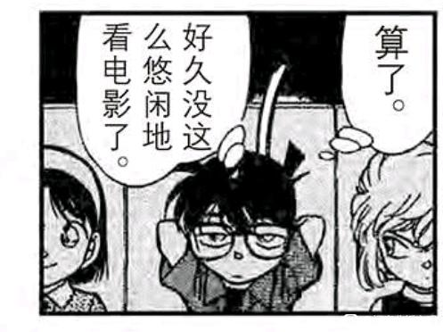
2024-02-18 03:08 | 没字也行:小哀的装睡很差劲的.......
短暂的冲动后，小哀又开始假装逃离【喜欢柯南的人】的位置，继续扮演那个“害工藤新一变小的人”，把“让柯南不停欺骗大家”的责任归咎在自己身上，仿佛这样就可以抵消电影院内的暧昧……
柯南突然明白了案件的手法，他耍帅般跳下洗手台，脚步逐渐加快，轻快得不可思议，【甚至跑丢了一只鞋】，仿佛确认了什么高兴的事情？
【小哀和他一样在追求着真实】，这对柯南而言说不定比表白还要刺激些，他找到自己的华生了，至于她是不是艾琳……慢慢猜吧！
柯南突然明白了案件的手法，他耍帅般跳下洗手台，脚步逐渐加快，轻快得不可思议，【甚至跑丢了一只鞋】，仿佛确认了什么高兴的事情？
【小哀和他一样在追求着真实】，这对柯南而言说不定比表白还要刺激些，他找到自己的华生了，至于她是不是艾琳……慢慢猜吧！
大佬
接下来柯南的心情就一直很好，甚至开始安排少侦参与破案（一般来讲没有这个环节，上次哥美拉案少侦跑过来，直接被柯南赶走了）
柯南还露出了标志性的wink（给谁看的我不好说，反正只有三小只的时候柯南一脸烦躁），然后给少侦充当柯导，并且还给了小哀单独任务（不用像元太那样吊在那里，元太： ）
）
这一幕好像被高木看到了，高木不会也生锈了吧。
柯南还露出了标志性的wink（给谁看的我不好说，反正只有三小只的时候柯南一脸烦躁），然后给少侦充当柯导，并且还给了小哀单独任务（不用像元太那样吊在那里，元太：
）这一幕好像被高木看到了，高木不会也生锈了吧。
十二、身体靠近，灵魂疏远：新弗尼号的新兰
小时间线第102天，大时间线1998年10月9日，毛利一家和服部登上了新弗尼号。本案是新兰关系一个极为重要的节点，小兰对新一【情感上的陪伴】需求来到了新的高峰，但柯南却不可能满足小兰的需求，因此小兰第一次产生了放弃等待新一的思考。
等等，小兰此时是知道柯南就是新一的啊？为什么会有“放弃等待”一说呢？
我们需要对数字有一些敏感性，在小哀登场前，小兰参与36案，少侦参与10案，比例约为7：2；在小哀登场后，小兰参与6案（空中密室不能算），小哀参与5案，比例接近1：1，更不用说小兰的很多案件是弱相关。【柯南越来越经常和少侦待在一起，理由显而易见：为了和小哀待在一起】
并且，小兰不但知道小哀的存在，还完全能够推测出小哀与柯南有共同秘密。而最近小兰视角里发生了两件事：①真园CP登场，虽然两地分居但相处得非常好。以及②柯南在【帝丹小学校庆】和小哀去看电影了。
看似柯南是住在小兰家，好像很亲密的样子，实则不然，小兰能感受到柯南正在不断远离自己，最亲密的魔术师爱好者案已经是半个月前的事情（柯南雪夜跑回来保证小兰安全），而也是在魔术师案开始，柯南在案发现场越来越不照顾小兰的感受。
魔术师案-和基德，浴室密室-和高木，结婚前夜-和服部，北斗星-和有希子，四个案件基本无视小兰而行动。园子夏日危险物语倒是一起行动，然而【柯南并没有真的对小兰的擦边照片有什么兴趣】，而是全程专注于破案。
身体靠近，灵魂疏离，这就是新兰目前的状态。小兰需要一个契机向新一请求关注，于是她发现了一个【海豚之旅】，邀请柯南一起去。
这很可能是海豚鲨鱼论的第一次出现，不是在网中迷，而是在新弗尼号。海豚要展示自己人人喜爱的特质了，但侦探更喜欢鲨鱼。
小时间线第102天，大时间线1998年10月9日，毛利一家和服部登上了新弗尼号。本案是新兰关系一个极为重要的节点，小兰对新一【情感上的陪伴】需求来到了新的高峰，但柯南却不可能满足小兰的需求，因此小兰第一次产生了放弃等待新一的思考。
等等，小兰此时是知道柯南就是新一的啊？为什么会有“放弃等待”一说呢？
我们需要对数字有一些敏感性，在小哀登场前，小兰参与36案，少侦参与10案，比例约为7：2；在小哀登场后，小兰参与6案（空中密室不能算），小哀参与5案，比例接近1：1，更不用说小兰的很多案件是弱相关。【柯南越来越经常和少侦待在一起，理由显而易见：为了和小哀待在一起】
并且，小兰不但知道小哀的存在，还完全能够推测出小哀与柯南有共同秘密。而最近小兰视角里发生了两件事：①真园CP登场，虽然两地分居但相处得非常好。以及②柯南在【帝丹小学校庆】和小哀去看电影了。
看似柯南是住在小兰家，好像很亲密的样子，实则不然，小兰能感受到柯南正在不断远离自己，最亲密的魔术师爱好者案已经是半个月前的事情（柯南雪夜跑回来保证小兰安全），而也是在魔术师案开始，柯南在案发现场越来越不照顾小兰的感受。
魔术师案-和基德，浴室密室-和高木，结婚前夜-和服部，北斗星-和有希子，四个案件基本无视小兰而行动。园子夏日危险物语倒是一起行动，然而【柯南并没有真的对小兰的擦边照片有什么兴趣】，而是全程专注于破案。
身体靠近，灵魂疏离，这就是新兰目前的状态。小兰需要一个契机向新一请求关注，于是她发现了一个【海豚之旅】，邀请柯南一起去。
这很可能是海豚鲨鱼论的第一次出现，不是在网中迷，而是在新弗尼号。海豚要展示自己人人喜爱的特质了，但侦探更喜欢鲨鱼。
小兰开始了自己的行动：她做出泰坦尼克号的标志动作，中二着宣告自己的中心地位。
柯南不觉得这很美，柯南觉得这很晦气。
如果这里柯南的态度还不够明显，我们再来看下一个对比：小兰一看见服部就开始问和叶有没有一起来，结果被服部觉得很怪，她是她我是我，哪有非要一起出现的道理？
小兰追求的“让新一不要离开自己”，是服部所不能理解的，而服部接下来的玩笑话更暴露了小兰和其他人恋爱观的不同。
服部：别把我们跟如胶似漆的你们混为一谈。
服部此时对柯南的印象还没更新，又还不认识小哀，所以“如胶似漆”的结论是错误的，事实上柯兰的陪伴时间已经大大下降。（反而是服部单独出现的次数很少，平和才是真如胶似漆，哦，后来柯哀也是）
看柯南和小兰的表情，柯南觉得服部说得很对，自己和小兰在一起的时间确实很长，所以严重脸红。
而小兰只有一点点脸红，确实柯南陪在身边，但真的不是如胶似漆。
小兰低估了新兰关系，想要更多陪伴；
柯南高估了新兰关系，觉得陪伴小兰的时间太多了。
柯南不觉得这很美，柯南觉得这很晦气。
如果这里柯南的态度还不够明显，我们再来看下一个对比：小兰一看见服部就开始问和叶有没有一起来，结果被服部觉得很怪，她是她我是我，哪有非要一起出现的道理？
小兰追求的“让新一不要离开自己”，是服部所不能理解的，而服部接下来的玩笑话更暴露了小兰和其他人恋爱观的不同。
服部：别把我们跟如胶似漆的你们混为一谈。
服部此时对柯南的印象还没更新，又还不认识小哀，所以“如胶似漆”的结论是错误的，事实上柯兰的陪伴时间已经大大下降。（反而是服部单独出现的次数很少，平和才是真如胶似漆，哦，后来柯哀也是）
看柯南和小兰的表情，柯南觉得服部说得很对，自己和小兰在一起的时间确实很长，所以严重脸红。
而小兰只有一点点脸红，确实柯南陪在身边，但真的不是如胶似漆。
小兰低估了新兰关系，想要更多陪伴；
柯南高估了新兰关系，觉得陪伴小兰的时间太多了。
2024-02-18 03:14 | 没字也行:有一说一，这小兰的人体画的真不错。PS：“我是世界之王”，从宗教隐喻的角度分析，基本就是撒旦的自我介绍。看了一堆分析文，看什么都觉得埋雷......
随后小兰更加积极的表示自己的存在，希望柯南（还有服部）陪着她，服部都惊呆了。
怎么有这种人，在服部明说要去查案的情况下，以“不能让我一个人在房间里等”为借口强行扣留服部和柯南，真害怕一个人就跟他们去查案啊，服部和柯南直接露出职业假笑。
我怀疑这里小兰的目的是希望服部做一个“陪伴女孩子”的样本给柯南看，柯南一案发就跑没影，连跟小兰说一声都不愿意，这是小兰缺乏陪伴感的重要原因，所以小兰一定要强行留下服部，和他聊“你也是来看【海豚】的吗？”
服部：“海豚？不不不，我是来办案的，真是物以类聚啊，对吧弟弟？”
小兰的如意算盘落空了，服部和新一都是“推理狂”，对【海豚】根本不感兴趣，就连小五郎也在外面忙于查案。
小兰显得如此格格不入，她心中缺乏陪伴的感受进一步增加了，这种累积的不安会让小兰做出一些出乎意料的动作，例如向柯南表露心意，又例如……想办法吸引新出医生？
怎么有这种人，在服部明说要去查案的情况下，以“不能让我一个人在房间里等”为借口强行扣留服部和柯南，真害怕一个人就跟他们去查案啊，服部和柯南直接露出职业假笑。
我怀疑这里小兰的目的是希望服部做一个“陪伴女孩子”的样本给柯南看，柯南一案发就跑没影，连跟小兰说一声都不愿意，这是小兰缺乏陪伴感的重要原因，所以小兰一定要强行留下服部，和他聊“你也是来看【海豚】的吗？”
服部：“海豚？不不不，我是来办案的，真是物以类聚啊，对吧弟弟？”
小兰的如意算盘落空了，服部和新一都是“推理狂”，对【海豚】根本不感兴趣，就连小五郎也在外面忙于查案。
小兰显得如此格格不入，她心中缺乏陪伴的感受进一步增加了，这种累积的不安会让小兰做出一些出乎意料的动作，例如向柯南表露心意，又例如……想办法吸引新出医生？
2024-02-13 22:33 | 你隔壁家王叔:这儿就有海豚了？？？？2024-02-19 12:59 | LightW☜:毛利：很高兴你也喜欢海豚 服部：什么海豚？ 毛利：能坐一艘船真是太巧了 服部：因为我和工藤有缘2024-02-22 04:00 | 即将02的废物月:这真的有点恐怖了，“不是喜欢海豚”，“物理类聚”。难道他真是天才？2024-02-25 13:59 | 雪者风形:回复 即将02的废物月 :看来一开始咱多数人的思路就错了，鲨鱼海豚论要先往前回溯，而不是往后等待新证据。
对小兰而言，她的好运好没有用完，但是正在逐渐降低。
小兰的运气好就好在新弗尼号发生在再会篇前，如果是再会篇后，她【不要离开我身边】的请求可能根本不会有回应。但她抢先一步形成了先来后到的责任感，形成了危命复活中近乎表白的场面。
麻将案的小兰字一色四暗刻大三元，有些人一辈子都没有这种好运，而这里，小兰的赢牌仅仅只是葫芦，不是什么同花顺，她还有运气，但不一定可以赢了。
小兰的运气好就好在新弗尼号发生在再会篇前，如果是再会篇后，她【不要离开我身边】的请求可能根本不会有回应。但她抢先一步形成了先来后到的责任感，形成了危命复活中近乎表白的场面。
麻将案的小兰字一色四暗刻大三元，有些人一辈子都没有这种好运，而这里，小兰的赢牌仅仅只是葫芦，不是什么同花顺，她还有运气，但不一定可以赢了。
柯南是爱不自知，但是m26柯南已经知道自己多爱了，他看他自己的双手就知道了
本次案件，小兰又一次感受到柯南的疏远，即使小兰强行留下服部一次，但什么也没有改变。
案件发生时，还是像过去的每次事件一样，柯南冲向案发现场，冲向可能有的证据，和服部飞快交流案情却绝不会考虑小兰的情况。
小兰再一次体验了被抛弃的感觉，又是推理，又是案件，小兰追出去时柯南已经不见踪影。
更糟糕的是，小兰明明在园子案已经证明自己的能力了，却还是被柯南抛下，这是为什么？
更糟糕的是，小兰在找到柯南后，由于服部失踪，柯南本案第二次抛下小兰独自寻找服部，小兰忽然发现自己虽然被柯南多次保护，但这没什么独特的，柯南寻找服部时更加慌乱，大声喊着服部的名字，完全就是江户川“乱步”先行版，不愧是平为哀影，给再会篇当样板了。
柯南第一次抛开小兰时，小兰找了父亲给了柯南一拳。
柯南第二次抛开小兰时，小兰找了一大堆路人抓回柯南，并近乎无情地说服部会马上出现（明明柯南已经听到落水声了）
我总觉得这两次抛开小兰，很像是最后新兰分手时可能存在的剧情，小五郎会因为新一伤小兰的心而生气一次，小兰会用无情的谎言再死缠烂打一次。
对了，本案柯南第三次离开小兰，是给阿笠博士打电话，小哀在家。
案件发生时，还是像过去的每次事件一样，柯南冲向案发现场，冲向可能有的证据，和服部飞快交流案情却绝不会考虑小兰的情况。
小兰再一次体验了被抛弃的感觉，又是推理，又是案件，小兰追出去时柯南已经不见踪影。
更糟糕的是，小兰明明在园子案已经证明自己的能力了，却还是被柯南抛下，这是为什么？
更糟糕的是，小兰在找到柯南后，由于服部失踪，柯南本案第二次抛下小兰独自寻找服部，小兰忽然发现自己虽然被柯南多次保护，但这没什么独特的，柯南寻找服部时更加慌乱，大声喊着服部的名字，完全就是江户川“乱步”先行版，不愧是平为哀影，给再会篇当样板了。
柯南第一次抛开小兰时，小兰找了父亲给了柯南一拳。
柯南第二次抛开小兰时，小兰找了一大堆路人抓回柯南，并近乎无情地说服部会马上出现（明明柯南已经听到落水声了）
我总觉得这两次抛开小兰，很像是最后新兰分手时可能存在的剧情，小五郎会因为新一伤小兰的心而生气一次，小兰会用无情的谎言再死缠烂打一次。
对了，本案柯南第三次离开小兰，是给阿笠博士打电话，小哀在家。
新兰最重要的名场面，比伦敦告白，世纪之吻重要得多，是新弗尼号的表露心意，柯南一定会奔向案件，小兰已经束手无策，她终于说出了自己的真实诉求：陪伴。
不再有任何柯南身份的掩饰，此刻的小兰就是在对新一本人说话，空中密室的小兰撒了谎，【新一擅自离开我会担心你被杀耶！】，这不是真实的原因，真实的原因是她害怕失去新一后那个孤独的自己，失去依靠的她将面对没有希望的未来。
一根船杆将柯南与小兰分开，小兰最终把柯南拉到她的世界，但只是暂时的，柯南继续了线索的询问，把自己身份暴露的思考放在一边。
【但柯南很可能对小哀说过新弗尼号的遭遇，于是有了光彦在废弃房屋的剧本】
柯南最终还是会回到他的世界，而小兰从未想过跨过这跟船杆，她的选择永远是等待。是柯南丢下她一个人吗？是她让自己被柯南丢下了啊。
不再有任何柯南身份的掩饰，此刻的小兰就是在对新一本人说话，空中密室的小兰撒了谎，【新一擅自离开我会担心你被杀耶！】，这不是真实的原因，真实的原因是她害怕失去新一后那个孤独的自己，失去依靠的她将面对没有希望的未来。
一根船杆将柯南与小兰分开，小兰最终把柯南拉到她的世界，但只是暂时的，柯南继续了线索的询问，把自己身份暴露的思考放在一边。
【但柯南很可能对小哀说过新弗尼号的遭遇，于是有了光彦在废弃房屋的剧本】
柯南最终还是会回到他的世界，而小兰从未想过跨过这跟船杆，她的选择永远是等待。是柯南丢下她一个人吗？是她让自己被柯南丢下了啊。
新弗尼号的最后，服部上演了与小兰完全相反的剧情，柯南近在眼前，小兰却感觉逐渐疏远；和叶虽然与服部相隔两地，却能不断感受彼此的心意。
小兰暂时忘却了自己的被抛弃感，满足于平和的顺利进展中，但我们知道，小兰并没有真正忘记这种苦涩的感觉，在接下来的日子里，小兰将在帝丹高中的篮球社认识一个更适合的人，这次不是代餐了。
另外，本案的小兰连续两次被不同的人幻视，仅仅因为小兰做了和某人相似的事情。因此，绝不可以认为小哀幻视小兰为明美就是小哀把小兰当姐姐（小哀比小兰年龄大欸），只是小兰某些激进的保护与明美有相似之处而已，甚至只是形似（明美有计划而小兰无计划，明美的善良有选择而小兰的善良无原则）
现在有两种很极端的倾向，认为小兰像明美所以是天使的，还有认为明美和小兰一样抽象的，都不可取，新弗尼号早于满月篇，本案有显著的参考价值。
小兰暂时忘却了自己的被抛弃感，满足于平和的顺利进展中，但我们知道，小兰并没有真正忘记这种苦涩的感觉，在接下来的日子里，小兰将在帝丹高中的篮球社认识一个更适合的人，这次不是代餐了。
另外，本案的小兰连续两次被不同的人幻视，仅仅因为小兰做了和某人相似的事情。因此，绝不可以认为小哀幻视小兰为明美就是小哀把小兰当姐姐（小哀比小兰年龄大欸），只是小兰某些激进的保护与明美有相似之处而已，甚至只是形似（明美有计划而小兰无计划，明美的善良有选择而小兰的善良无原则）
现在有两种很极端的倾向，认为小兰像明美所以是天使的，还有认为明美和小兰一样抽象的，都不可取，新弗尼号早于满月篇，本案有显著的参考价值。
十三、戏言与告白：危命复活的预演
小时间线第104天，某个周六，小哀借助戏言对柯南告白了。
新弗尼号杀人事件是1998年10月9日（周五），季节没有变换（动画把柯哀的服装改为转学生夏装，但漫画里仍然是秋季），加之台词中存在【她已经隐约察觉到你的身份了】，可以合理设想，不论大时间线还是小时间线，小哀的表白都恰好发生在新弗尼号的下一个傍晚，并且柯南大概率和小哀说过新弗尼号上小兰【不要丢下我一个人】的情绪表露。
这段被光彦称为【真实】的台词包含两个关键信息：小兰最终会识破柯南的身份，继续瞒着她已经没有意义，以及：就在柯南放弃隐瞒身份的同时，他已经被小哀吸引住目光，关注点已经不再是“是否继续瞒下去”，而是“你为什么要对我做那么多呢？”
小哀的回答：因为我爱上你了，可你还没有发现。
不仅是危命复活，在柯南的每一次身份危机中，小哀都为他做得太多了。我们甚至可以设想，当故事迎来结局，小兰终于识破了“假面超人的身份”，但那已经太迟了，柯南已经【毫不惊讶地】接受了小哀的爱……
小时间线第104天，某个周六，小哀借助戏言对柯南告白了。
新弗尼号杀人事件是1998年10月9日（周五），季节没有变换（动画把柯哀的服装改为转学生夏装，但漫画里仍然是秋季），加之台词中存在【她已经隐约察觉到你的身份了】，可以合理设想，不论大时间线还是小时间线，小哀的表白都恰好发生在新弗尼号的下一个傍晚，并且柯南大概率和小哀说过新弗尼号上小兰【不要丢下我一个人】的情绪表露。
这段被光彦称为【真实】的台词包含两个关键信息：小兰最终会识破柯南的身份，继续瞒着她已经没有意义，以及：就在柯南放弃隐瞒身份的同时，他已经被小哀吸引住目光，关注点已经不再是“是否继续瞒下去”，而是“你为什么要对我做那么多呢？”
小哀的回答：因为我爱上你了，可你还没有发现。
不仅是危命复活，在柯南的每一次身份危机中，小哀都为他做得太多了。我们甚至可以设想，当故事迎来结局，小兰终于识破了“假面超人的身份”，但那已经太迟了，柯南已经【毫不惊讶地】接受了小哀的爱……
2024-02-25 14:08 | 雪者风形:看不透女人的心思，这里可比伦敦篇早得多。
接下来这个场景我愿称为少侦全员生锈。
步美：露出磕到的表情还说小哀演得真棒。在蓝色古堡后步美好像就相比柯南更喜欢小哀了，尽管在女儿节娃娃案中步美还是会对柯南做些主动的行为，但逐渐变成了一种园子对基德的爱慕。
（小哀真情实意，想演不好都很难呢）
元太：早在小哀登场第一话，元太就看出柯南和小哀不对劲了，甚至主动担任了丑角，给柯哀进行了超级助攻。
光彦：皮卡丘还没有爱上武藏，“怎么能演那种一点都不真实的童话呢？”（黑衣骑士），甚至专门找了废弃大楼营造气氛，我合理怀疑光彦偷听了柯哀的对话，新弗尼号被他知道了用于剧本，背叛组织的女间谍怎么也被知道了，少侦光速进入主线（误）
另外：
【柯南是不是被告白语句冲击得大脑一片空白了，完全反应不过来，甚至光彦喊卡之后还意犹未尽的样子】
柯南也是不诚实，你都知道剧本了，觉得剧情不好早点换啊，非要和小哀排练一次，呵呵……
步美：露出磕到的表情还说小哀演得真棒。在蓝色古堡后步美好像就相比柯南更喜欢小哀了，尽管在女儿节娃娃案中步美还是会对柯南做些主动的行为，但逐渐变成了一种园子对基德的爱慕。
（小哀真情实意，想演不好都很难呢）
元太：早在小哀登场第一话，元太就看出柯南和小哀不对劲了，甚至主动担任了丑角，给柯哀进行了超级助攻。
光彦：皮卡丘还没有爱上武藏，“怎么能演那种一点都不真实的童话呢？”（黑衣骑士），甚至专门找了废弃大楼营造气氛，我合理怀疑光彦偷听了柯哀的对话，新弗尼号被他知道了用于剧本，背叛组织的女间谍怎么也被知道了，少侦光速进入主线（误）
另外：
【柯南是不是被告白语句冲击得大脑一片空白了，完全反应不过来，甚至光彦喊卡之后还意犹未尽的样子】
柯南也是不诚实，你都知道剧本了，觉得剧情不好早点换啊，非要和小哀排练一次，呵呵……
三小只真是忙的要死，先帮柯哀打助攻，接下来又要去助攻高佐，一整天跟着高木去查案，而且效率巨高。案件结束后高木几乎就是表白了，顺利排除白鸟和目暮两个错误答案的高木巨开心。
六亲不认的步伐像不像电影院里从女厕所跑出来的柯南？
另外，柯哀的剧本也改掉了，但还是有“爱”，不是吗？
【本案死者（女）要挟犯人（男）娶她，于是被犯人杀了，这听起来对新兰很不友好啊】
小哀主动告白了，但小兰是逼迫新一告白，小兰的前景真是不容乐观。
六亲不认的步伐像不像电影院里从女厕所跑出来的柯南？
另外，柯哀的剧本也改掉了，但还是有“爱”，不是吗？
【本案死者（女）要挟犯人（男）娶她，于是被犯人杀了，这听起来对新兰很不友好啊】
小哀主动告白了，但小兰是逼迫新一告白，小兰的前景真是不容乐观。
2024-02-23 08:15 | 即将02的废物月:剧本被改了，但还是有爱难道他真是天才？
十四、一瞬间的动心：新出医生案的小兰
第106天，故事进入信息量巨大的新出医生案。本案在结构上与暗夜男爵案有相似性，都是小兰表露心意（赤木量子案后的流泪，新弗尼号的“不要丢下我一个人”）后，迅速接了一个大型代餐。
暗夜男爵案的柯南直接跑到前田聪面前唱反调，新出医生案的柯南几乎没有行动。作为对比，第210天【柯南平次的推理魔术】中和叶抱了一个魔术师，结果服部整个案件都醋味十足（和叶抱魔术师是真害怕，这和小兰抱新出的逻辑是不一样的），而柯南在新出医生案中，甚至有余力照顾小光的感受。
柯南习惯了，尽管新弗尼号的小兰将柯南捆绑到【不可以离开小兰】的位置，但多次代餐带来的伤痕是无法修复的。
本案的标题叫做“还有半年”，但是小五郎只剩半年戒酒在剧情中并不重要，于是我稍微算了下半年后（286天左右）会发生什么，结果不得了：
伦敦篇。
新兰的感情恐怕还有半年。
第106天，故事进入信息量巨大的新出医生案。本案在结构上与暗夜男爵案有相似性，都是小兰表露心意（赤木量子案后的流泪，新弗尼号的“不要丢下我一个人”）后，迅速接了一个大型代餐。
暗夜男爵案的柯南直接跑到前田聪面前唱反调，新出医生案的柯南几乎没有行动。作为对比，第210天【柯南平次的推理魔术】中和叶抱了一个魔术师，结果服部整个案件都醋味十足（和叶抱魔术师是真害怕，这和小兰抱新出的逻辑是不一样的），而柯南在新出医生案中，甚至有余力照顾小光的感受。
柯南习惯了，尽管新弗尼号的小兰将柯南捆绑到【不可以离开小兰】的位置，但多次代餐带来的伤痕是无法修复的。
本案的标题叫做“还有半年”，但是小五郎只剩半年戒酒在剧情中并不重要，于是我稍微算了下半年后（286天左右）会发生什么，结果不得了：
伦敦篇。
新兰的感情恐怕还有半年。
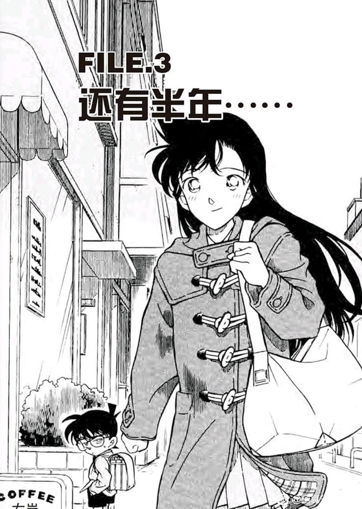
2024-02-15 19:55 | 贴吧用户_QA9a7RQ:但是这半年可是现实世界的二十几年啊2024-02-22 04:16 | 即将02的废物月:难道他真是天才？2024-02-25 14:11 | 雪者风形:也可能青山后面节奏降了，半年预计中其实是红修（不是）2024-02-25 14:12 | 雪者风形:回复 雪者风形 :不对啊，青山拖时间会休刊的（沉思）2024-03-08 07:35 | 即将02的废物月:回复 雪者风形 :一切都在计划之中（确信）

小兰对新出医生有动心的时候吗？如果有，在什么时候呢？
仔细看漫画就可以发现，小兰存在对新出动心的时间，但非常短，在这个短暂的时间内小兰的表现非常不同，几乎是最大程度表现了小兰的择偶标准。
先来看新出医生案前的新兰，柯南日常打电话被小兰挂断，站在小兰的角度，【柯南打电话说明他还要为自己扮演新一的身份，自己挂断电话表示自己对这段感情还有“主动权”】，因此小兰是开心的，但柯南就因为不平等的情感地位而感到烦躁。
（作为对比，后期一般是柯南挂断小兰的电话）
如果是妃英理咖啡厅案的柯南，这时候已经采取行动去探听小兰的“约会对象”了，但是柯南已经在日复一日的陪伴中丧失了这种兴趣。
（小兰应该真的去练空手道了，但很可能在学校和新出医生有一面之缘）
仔细看漫画就可以发现，小兰存在对新出动心的时间，但非常短，在这个短暂的时间内小兰的表现非常不同，几乎是最大程度表现了小兰的择偶标准。
先来看新出医生案前的新兰，柯南日常打电话被小兰挂断，站在小兰的角度，【柯南打电话说明他还要为自己扮演新一的身份，自己挂断电话表示自己对这段感情还有“主动权”】，因此小兰是开心的，但柯南就因为不平等的情感地位而感到烦躁。
（作为对比，后期一般是柯南挂断小兰的电话）
如果是妃英理咖啡厅案的柯南，这时候已经采取行动去探听小兰的“约会对象”了，但是柯南已经在日复一日的陪伴中丧失了这种兴趣。
（小兰应该真的去练空手道了，但很可能在学校和新出医生有一面之缘）
接下来是“戒酒”名场面，这可能是小兰各种乱七八糟计划里，最有效的计划：让父亲戒酒。
这个计划一旦成功，则小五郎将获得相当程度的自制力，几乎可以让毛妃复合，并且小兰事实上有能力做成这件事，比天天弄巧合让父母相遇要好太多了。
但是小兰只是说说而已……任何行动都没有，在小五郎出场的下一个案件（著名的鸟取蜘蛛案），小五郎该喝喝，倒是动画版为了圆小兰的台词，把新弗尼号挪到本案后并让小五郎喝白水。
然后我们将看到，在M26有小哀监督健康的博士开着车载柯南跑来跑去，而小五郎却醉倒以至于需要暴力唤醒。
小兰的誓言太随意了，【最伤心的人其实是我】-和前田聪仰望星空，【不要丢下我一个人】-抱住新出医生，这是小兰对待生活的态度。
那么，誓言生锈。
这个计划一旦成功，则小五郎将获得相当程度的自制力，几乎可以让毛妃复合，并且小兰事实上有能力做成这件事，比天天弄巧合让父母相遇要好太多了。
但是小兰只是说说而已……任何行动都没有，在小五郎出场的下一个案件（著名的鸟取蜘蛛案），小五郎该喝喝，倒是动画版为了圆小兰的台词，把新弗尼号挪到本案后并让小五郎喝白水。
然后我们将看到，在M26有小哀监督健康的博士开着车载柯南跑来跑去，而小五郎却醉倒以至于需要暴力唤醒。
小兰的誓言太随意了，【最伤心的人其实是我】-和前田聪仰望星空，【不要丢下我一个人】-抱住新出医生，这是小兰对待生活的态度。
那么，誓言生锈。
2024-02-19 13:10 | LightW☜:哈哈哈哈是啊，自己做出的承诺随口就丢，却指责明明有在努力完成约定的人。生锈，都给我生锈
小兰邂逅了新出医生。
从对话看，小兰和新出应该还不认识，但是很可能有一些外貌印象，我们注意这里，新出医生在“想一些事情”，在想什么呢？
很可能在想有些窒息的家庭氛围。
新出的家庭背景比小兰还要窒息，父亲是个真正的色鬼（比小五郎严重很多），母亲因此酗酒而死，父亲于是迅速续弦了一位有复仇目的的女人，在这种环境下长大的新出医生并没有形成什么扭曲的性格，反而处处显示着真诚和善良，究其原因，也许是因为他遇到了同样能忍受痛苦的小光吧。
新出医生和小兰相遇时，小光打碎了一个碗。
小兰应该没有注意到新出医生和小光的特殊关系，不过知道了又怎么样呢？她在明知前田聪有未婚妻的情况下，不还是和他约会了吗？
从对话看，小兰和新出应该还不认识，但是很可能有一些外貌印象，我们注意这里，新出医生在“想一些事情”，在想什么呢？
很可能在想有些窒息的家庭氛围。
新出的家庭背景比小兰还要窒息，父亲是个真正的色鬼（比小五郎严重很多），母亲因此酗酒而死，父亲于是迅速续弦了一位有复仇目的的女人，在这种环境下长大的新出医生并没有形成什么扭曲的性格，反而处处显示着真诚和善良，究其原因，也许是因为他遇到了同样能忍受痛苦的小光吧。
新出医生和小兰相遇时，小光打碎了一个碗。
小兰应该没有注意到新出医生和小光的特殊关系，不过知道了又怎么样呢？她在明知前田聪有未婚妻的情况下，不还是和他约会了吗？
A、小兰一眼就看中了新出医生的毛衣，准备给新一织一件。
B、小兰对新出医生心动了。
C、小兰对新出医生表示感兴趣。
目前的进展应该是C，小兰因为想多和新出医生待在一起，所以【难得别人请吃饭嘛】
我们先把小兰是否礼貌的问题放在一边，小兰此刻是先入为主地认为“柯南在吃她的醋”，不惜放弃空手道练习，也要把握这次机会看看柯南的表现。
但柯南真的吃醋了吗？此刻柯南根本不知道新出的存在，不想留下来吃饭只是因为怕小五郎不懂医学被人问出来而已，【和小兰毫无关系】
小兰执行了传统的战术代餐计划，只是这次有点不同，既不战术，也不代餐。
B、小兰对新出医生心动了。
C、小兰对新出医生表示感兴趣。
目前的进展应该是C，小兰因为想多和新出医生待在一起，所以【难得别人请吃饭嘛】
我们先把小兰是否礼貌的问题放在一边，小兰此刻是先入为主地认为“柯南在吃她的醋”，不惜放弃空手道练习，也要把握这次机会看看柯南的表现。
但柯南真的吃醋了吗？此刻柯南根本不知道新出的存在，不想留下来吃饭只是因为怕小五郎不懂医学被人问出来而已，【和小兰毫无关系】
小兰执行了传统的战术代餐计划，只是这次有点不同，既不战术，也不代餐。
2024-02-15 19:50 | 贴吧用户_QA9a7RQ:对空手道练习这么不重视，难怪兰神的武力值忽上忽下

席间交流，我们得知新出医生非常优秀，东都大学第一名毕业，学霸程度与妃英理类似。（还是比不过小哀）
小兰其实对医生职业很有好感（魔术爱好者案基德扮演了一个肥宅医生，小兰一直觉得他不错），而小五郎更是非常支持。小五郎应该是清楚自己的女儿非常不喜欢血淋淋的案件，因此从选婿案开始就在试图给小兰物色合适的男性（小五郎也不太考虑让女儿上大学，看来小兰的学习成绩确实一般）
于是小五郎直接对新出医生提出了相亲，我们可以看到小兰和新出的态度完全不同。
小兰看似害羞脸红，实则让小五郎加大力度。而新出的表现突出一个优雅和得体，把起哄的后妈赶紧支开，用极为充分积极的理由婉拒了小五郎，唯一的脸红还发生在看向小光的时候。
所以小兰能不能学一点点新出医生的优雅和得体💔我们看到小兰的代餐一个又一个，基德冲田等人不胜其扰，新出医生却全身而退，因为他懂得拒绝不合适的人。
而小兰一直在利用别人【没有学会拒绝】的心态获取好处。
小兰其实对医生职业很有好感（魔术爱好者案基德扮演了一个肥宅医生，小兰一直觉得他不错），而小五郎更是非常支持。小五郎应该是清楚自己的女儿非常不喜欢血淋淋的案件，因此从选婿案开始就在试图给小兰物色合适的男性（小五郎也不太考虑让女儿上大学，看来小兰的学习成绩确实一般）
于是小五郎直接对新出医生提出了相亲，我们可以看到小兰和新出的态度完全不同。
小兰看似害羞脸红，实则让小五郎加大力度。而新出的表现突出一个优雅和得体，把起哄的后妈赶紧支开，用极为充分积极的理由婉拒了小五郎，唯一的脸红还发生在看向小光的时候。
所以小兰能不能学一点点新出医生的优雅和得体💔我们看到小兰的代餐一个又一个，基德冲田等人不胜其扰，新出医生却全身而退，因为他懂得拒绝不合适的人。
而小兰一直在利用别人【没有学会拒绝】的心态获取好处。
2024-02-15 08:42 | 一叶之秋🌿🍁🍁:小哀在柯学世界里只有宏树能比了2024-03-10 07:19 | 学习机425:回复 一叶之秋🌿🍁🍁 :有一说一，m26里直美估计也行，一个人开发那么强大的ai
但不论小兰的动机如何，当新出医生说出【医生和侦探不是好搭档，我们只是尽力救护被害人而已】时，小兰已经心动了。
小兰喜欢能保护她的新一，但新一会去当侦探查案件，会“丢下她一个人”，会什么事情都不告诉她，却能告诉博士和博士家的小女孩。
而新出医生是医生，会保护受伤的人，却不会跑去破案。小兰对服部的花痴需要设想【服部好像新一啊】，但是新出医生不需要，他的品质完全戳中了小兰的喜好，旁边的柯南仿佛不存在了，新出医生正在“闪闪发光”。
不再是代餐了，小兰会认真地行动起来，外交官案的柯南因为感冒而没有阻止的行动，而柯南这里十分健康，却不会阻止小兰。莫非，柯南也能看出新出医生其实更适合小兰？
小兰喜欢能保护她的新一，但新一会去当侦探查案件，会“丢下她一个人”，会什么事情都不告诉她，却能告诉博士和博士家的小女孩。
而新出医生是医生，会保护受伤的人，却不会跑去破案。小兰对服部的花痴需要设想【服部好像新一啊】，但是新出医生不需要，他的品质完全戳中了小兰的喜好，旁边的柯南仿佛不存在了，新出医生正在“闪闪发光”。
不再是代餐了，小兰会认真地行动起来，外交官案的柯南因为感冒而没有阻止的行动，而柯南这里十分健康，却不会阻止小兰。莫非，柯南也能看出新出医生其实更适合小兰？
2024-03-10 07:23 | 学习机425:兰其实需要的恋人就是新出（成长后的本堂估计也可以）得体成熟，社会地位优良，顾家，虽然新出没看上兰，看上兰的本堂又太过稚嫩，但我还是很看好本堂兰这一对的
停电了，黑暗中的小兰开始了自己的行动：假装很害怕的样子抱住新出医生，被发现后就说自己是想抱住父亲，完美的计划。
但是，小兰和新出医生隔了一个座子，而且小五郎已经说过“大家不要动”，怎么找到新出医生呢？
这可难不倒“手电筒战神”小兰，在M3和M4中小兰连续使用手电筒吸引犯人的注意力，简直百发百中，于是在新出医生拿起【手电筒】的一刻，她趁着【左边的柯南】跑去看窗，从左侧绕到新出医生【右侧】，借助【下雨的声音】掩盖自己的脚步声，就像那天夜祭案抱住横沟警官一样……灯亮之时，小兰已经完成了自己的目标。
破绽太多了，楼上的老奶奶听到了自己的脚步声，自己如果想抱父亲一定是抱左胳膊（但她抱了新出的右胳膊），作为侦探的小五郎和柯南完全看穿了小兰的手法，露出尴尬的眼神。
好手法，就是有点俗。
小哀在蓝色古堡直接就是和柯南贴贴，电影院毫不掩饰地“呼呼大睡”，每次都把柯南弄得小脸一红，那是诚挚的，难以掩饰的爱意，而小兰的动作含有太多杂质了，如果她直接说“太黑了我有点害怕”，那还好一些（和叶就直接对服部说：尸体那么恐怖，我就抱了怎么了） 但这句“以为是我爸爸”，几乎就是说给柯南听的，匆忙地掩饰自己的心动，寄希望于柯南被骗过去（怎么可能），又不甘心放弃对新出的攻略。
小兰对自己的内心太不诚实了。
但是，小兰和新出医生隔了一个座子，而且小五郎已经说过“大家不要动”，怎么找到新出医生呢？
这可难不倒“手电筒战神”小兰，在M3和M4中小兰连续使用手电筒吸引犯人的注意力，简直百发百中，于是在新出医生拿起【手电筒】的一刻，她趁着【左边的柯南】跑去看窗，从左侧绕到新出医生【右侧】，借助【下雨的声音】掩盖自己的脚步声，就像那天夜祭案抱住横沟警官一样……灯亮之时，小兰已经完成了自己的目标。
破绽太多了，楼上的老奶奶听到了自己的脚步声，自己如果想抱父亲一定是抱左胳膊（但她抱了新出的右胳膊），作为侦探的小五郎和柯南完全看穿了小兰的手法，露出尴尬的眼神。
好手法，就是有点俗。
小哀在蓝色古堡直接就是和柯南贴贴，电影院毫不掩饰地“呼呼大睡”，每次都把柯南弄得小脸一红，那是诚挚的，难以掩饰的爱意，而小兰的动作含有太多杂质了，如果她直接说“太黑了我有点害怕”，那还好一些（和叶就直接对服部说：尸体那么恐怖，我就抱了怎么了） 但这句“以为是我爸爸”，几乎就是说给柯南听的，匆忙地掩饰自己的心动，寄希望于柯南被骗过去（怎么可能），又不甘心放弃对新出的攻略。
小兰对自己的内心太不诚实了。
2024-02-15 08:49 | 一叶之秋🌿🍁🍁:武林高手毛利兰2024-02-16 20:45 | 世上不必有节操:有一说一这段剧情真有点微妙，这个时期小兰应该还是怀疑柯南是新一的，在这个前提下这段互动真的难以形容2024-02-25 14:45 | 雪者风形:读这段时歌单切到了別の人の彼女になったよ（乐）
然而小兰下一刻就对新出医生失望了，因为新出医生展示出了和柯南/新一一样的品质，他迅速冲向现场，给自己的父亲做急救。
小兰是最后一个跟上的人，不但晚于小五郎和新出，也晚于小光，这里急救的画面和小百合案柯南的急救如出一辙，看似新出满足小兰的美好想法，实则新出和新一一样都是会因为事件离开她的人，他们追求的正义看似不同，本质却完全一样：对即将逝去的生命尽力保护。
小兰对新出的心动到此结束了，重新回到战术代餐水平，她还是会幻想能有类似新出医生的人出现在身边，只不过这个人的形象和真正的新出医生已经有差别了，就和她设想的新一和真正的新一有差别一样。
小兰是最后一个跟上的人，不但晚于小五郎和新出，也晚于小光，这里急救的画面和小百合案柯南的急救如出一辙，看似新出满足小兰的美好想法，实则新出和新一一样都是会因为事件离开她的人，他们追求的正义看似不同，本质却完全一样：对即将逝去的生命尽力保护。
小兰对新出的心动到此结束了，重新回到战术代餐水平，她还是会幻想能有类似新出医生的人出现在身边，只不过这个人的形象和真正的新出医生已经有差别了，就和她设想的新一和真正的新一有差别一样。
接下来一段时间，小兰没有对新出脸红，急救现场新出的咆哮像极了新一，小兰的热情退却了，她重新来到柯南的世界，希望看到柯南特殊的吃醋反应，幸运的是柯南有所吃醋，不幸的是柯南的吃醋太有限了。
仅仅“头脑混乱得快要裂开”，该查案件照查不误，最多不过在确认新出不在场证明的时候多问了一句“真的一直抓他的手吗？”小兰即使对代餐动了心，依然无法把柯南从案件中抽离出来，只造成了稍微的动摇。
与此同时，小兰看见了新出医生无比关心小光的场景，在小光什么也没说时就知道了她的苦恼，她知道新出可能喜欢的人了，只是还缺乏验证。对小兰而言，最坏的结果是新出不喜欢她，同时她不能动摇柯南，于是小兰准备验证一下。
（下一案是再会篇，柯南对小哀做的事情和新出对小光做的事简直一模一样：在对方提起前知道了对方的苦恼）
仅仅“头脑混乱得快要裂开”，该查案件照查不误，最多不过在确认新出不在场证明的时候多问了一句“真的一直抓他的手吗？”小兰即使对代餐动了心，依然无法把柯南从案件中抽离出来，只造成了稍微的动摇。
与此同时，小兰看见了新出医生无比关心小光的场景，在小光什么也没说时就知道了她的苦恼，她知道新出可能喜欢的人了，只是还缺乏验证。对小兰而言，最坏的结果是新出不喜欢她，同时她不能动摇柯南，于是小兰准备验证一下。
（下一案是再会篇，柯南对小哀做的事情和新出对小光做的事简直一模一样：在对方提起前知道了对方的苦恼）
2024-02-15 13:31 | 成冰的雨点:其实，就《名柯》原著来说，也许唯一适合毛利兰的人是本堂英佑，很多兰粉看不上新出，但问题新出从来也没喜欢过毛利兰啊2024-02-19 13:21 | LightW☜:回复 成冰的雨点 :新出和小光的命也是命！2024-03-10 07:26 | 学习机425:回复 成冰的雨点 :其实现在的本堂也不适合兰（兰并没有看上本堂，只是非代餐的角度有点好感）兰想要的伴侣，要像父亲一样关爱她保护她，本堂太嫩了，但本堂好的一点是，只要水无回家了，本堂也不会冒险，符合兰对伴侣不要离开自己的要求2024-03-16 10:19 | 司马长风李:回复 成冰的雨点 :本堂毕竟还是在CIA家庭里长大的，那种相似的品质还是有的
在初遇和拥抱后，小兰在今晚第三次获得了和新出相处的机会：替伤者包扎，这一次的小兰已经不像前两次那么容易脸红了，她回忆着和新一在一起的时光，不去想【新出拒绝+柯南不动摇】的最坏情况，并在新出检查伤口时冲动地试图问一个问题。
这个问题是什么？
绝对不是毛衣的事情，如果是毛衣的事，她可以继续问下去，我猜测最有可能的问题是：“新出医生喜欢小光小姐吗？”
这很符合小兰的一贯人设，看见平和就问是不是情侣，喜欢问小哀有没有喜欢的人，而这里小兰在进行小心的求证，却又有些逃避问题的结果，这个问题已经蕴含了小兰所认为的答案：她和新出医生不太可能了。
这个问题不能被柯南听见，小兰形容为“我在胡思乱想些什么啊”，恰到好处的停顿又能给柯南醋意空间，小兰终于成功让柯南明显吃醋，不能专心破案……持续了一小会。
现在小兰面临的问题是：柯南吃醋了，怎么收场呢？
这个问题是什么？
绝对不是毛衣的事情，如果是毛衣的事，她可以继续问下去，我猜测最有可能的问题是：“新出医生喜欢小光小姐吗？”
这很符合小兰的一贯人设，看见平和就问是不是情侣，喜欢问小哀有没有喜欢的人，而这里小兰在进行小心的求证，却又有些逃避问题的结果，这个问题已经蕴含了小兰所认为的答案：她和新出医生不太可能了。
这个问题不能被柯南听见，小兰形容为“我在胡思乱想些什么啊”，恰到好处的停顿又能给柯南醋意空间，小兰终于成功让柯南明显吃醋，不能专心破案……持续了一小会。
现在小兰面临的问题是：柯南吃醋了，怎么收场呢？
最终小兰找到了突破口，她注意到新出的毛衣很不错，于是一直盯着看，不再有脸红了。停电时小兰的椅子动都没动，她不会再考虑什么绕过去抱住的事情，专心准备一个让新兰关系升温的契机。
恰到好处的收场，借一件毛衣，织一件给柯南送去，一定要是大人的，这样柯南才会意识到要变成新一回来，柯南将会获得对小兰的愧疚，很容易和爱意相混淆的愧疚。
对小兰而言，新出医生案是巨大的成功，她接受了【小五郎戒酒】任务，成功实施了一直不太成功的战术代餐计划，向柯南送了一件她自己织的毛衣，看到了“努力”地在她身边的，吃醋的柯南，为危命复活打下了很好的底子。
新兰迄今为止最好的互动被小哀看到了，大概是从这时起，小哀开始默认柯南喜欢的人是小兰才对，给自己树立了一个完美得不像话的障碍，【小哀的进攻】篇章到此结束，她将藏起自己的爱意。
下一阶段的感情线，我称之为【虚无告白与坚固羁绊】
恰到好处的收场，借一件毛衣，织一件给柯南送去，一定要是大人的，这样柯南才会意识到要变成新一回来，柯南将会获得对小兰的愧疚，很容易和爱意相混淆的愧疚。
对小兰而言，新出医生案是巨大的成功，她接受了【小五郎戒酒】任务，成功实施了一直不太成功的战术代餐计划，向柯南送了一件她自己织的毛衣，看到了“努力”地在她身边的，吃醋的柯南，为危命复活打下了很好的底子。
新兰迄今为止最好的互动被小哀看到了，大概是从这时起，小哀开始默认柯南喜欢的人是小兰才对，给自己树立了一个完美得不像话的障碍，【小哀的进攻】篇章到此结束，她将藏起自己的爱意。
下一阶段的感情线，我称之为【虚无告白与坚固羁绊】
2024-02-15 19:40 | 贴吧用户_QA9a7RQ:但这个任务立马被兰抛在脑后了，后面再没有出现过2024-02-18 05:02 | Ln_Tease:哇，之前没注意到角落有个小哀，难他天！
好，期待再会篇
十五、再会篇-柯哀羁绊的质变
柯哀经历的每个共同案件，他们的羁绊都在不断加深，量变引起质变，柯哀羁绊在再会篇得到了极致的表达。
时间上紧跟着新出医生篇，小兰织毛衣居然花了一个月，我还是在时间线里把无事发生的一个月省略比较好，总之，小哀目睹了柯南收到小兰的毛衣，她的内心认定柯南喜欢小兰，于是当晚做了噩梦。
她不再是那个步美口中“那么了解柯南”的人了，梦中的三小只围着柯南，柯南则穿着被小哀美化合身后小兰送的毛衣，他从来不会看向自己，却把自己安排在琴酒的视野里……
这些都是小哀对现状的认知，但现实与梦境完全相反，三小只簇拥的是她，柯南一眼就看穿了自己的心事，【没有也不会穿小兰送的毛衣】，甚至现实的天气也更加温暖，但小哀还是认定自己是把危险带给伙伴的人。
出于坚强外壳下善良的底色。
柯哀经历的每个共同案件，他们的羁绊都在不断加深，量变引起质变，柯哀羁绊在再会篇得到了极致的表达。
时间上紧跟着新出医生篇，小兰织毛衣居然花了一个月，我还是在时间线里把无事发生的一个月省略比较好，总之，小哀目睹了柯南收到小兰的毛衣，她的内心认定柯南喜欢小兰，于是当晚做了噩梦。
她不再是那个步美口中“那么了解柯南”的人了，梦中的三小只围着柯南，柯南则穿着被小哀美化合身后小兰送的毛衣，他从来不会看向自己，却把自己安排在琴酒的视野里……
这些都是小哀对现状的认知，但现实与梦境完全相反，三小只簇拥的是她，柯南一眼就看穿了自己的心事，【没有也不会穿小兰送的毛衣】，甚至现实的天气也更加温暖，但小哀还是认定自己是把危险带给伙伴的人。
出于坚强外壳下善良的底色。
小哀从噩梦中醒来，这是第一次拍摄到小哀睡觉的地方，和博士一样的单人床（有人到现在还只能打地铺），床头的高台灯说明小哀也是睡前躺在床上看东西的人，怪不得日常睡眠不足。（和某人一模一样）
小哀的噩梦和琴酒没有太大的关系，这只是看见柯兰互动而产生的逃避感映射到琴酒身上。
小哀太高估小兰了，元太告诉我们，这次游戏【只有头目差强人意】，本案的琴酒/皮斯克/贝姐都非常强，怎么也不能称为差强人意，那么小哀心中看似很强其实很勉强的头目是谁呢？
恐怕是被小哀的美化过的小兰吧。
），床头的高台灯说明小哀也是睡前躺在床上看东西的人，怪不得日常睡眠不足。（和某人一模一样）小哀的噩梦和琴酒没有太大的关系，这只是看见柯兰互动而产生的逃避感映射到琴酒身上。
小哀太高估小兰了，元太告诉我们，这次游戏【只有头目差强人意】，本案的琴酒/皮斯克/贝姐都非常强，怎么也不能称为差强人意，那么小哀心中看似很强其实很勉强的头目是谁呢？
恐怕是被小哀的美化过的小兰吧。
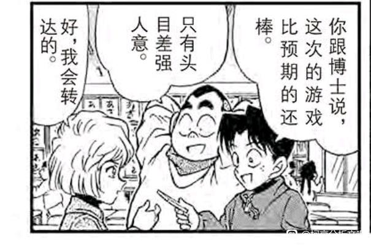
站在柯南的角度，看穿小哀【有心事】并不困难，连元太都看出来并表示要去揍欺负小哀的人但是柯南的描述却无比精准：【不该继续在这，会连累孩子们】。
柯南了解小哀善良底色的时间不是在杯户饭店，而是更早。是电影院“害追求真相的你必须伪装”？是北斗星号有希子的“你是在责怪我没有阻止命案吗？”？还是在蓝色古堡保护所有人的小哀？
这种了解应该是在某种初始印象上层层累积的，不但了解她的想法，还知道她的担心，“漫不经心”地进行了安慰，除了对黑衣组织的估计比较低，柯南的这种了解让我不得不怀疑他平时是不是也喜欢偷偷观察小哀。
但当小哀真的看向他时，柯南的眼神已经开始闪躲了，整段对话柯南都在踢球，只有一次和她四目相对（等到时机到来……），小哀是他想拯救的对象，可柯南必须隐藏自己的眼神，否则拯救小哀的动机会变得…非常奇怪。
柯南仿佛在说服自己，拯救小哀只是一般的拯救……真的是这样吗？
但是柯南的描述却无比精准：【不该继续在这，会连累孩子们】。柯南了解小哀善良底色的时间不是在杯户饭店，而是更早。是电影院“害追求真相的你必须伪装”？是北斗星号有希子的“你是在责怪我没有阻止命案吗？”？还是在蓝色古堡保护所有人的小哀？
这种了解应该是在某种初始印象上层层累积的，不但了解她的想法，还知道她的担心，“漫不经心”地进行了安慰，除了对黑衣组织的估计比较低，柯南的这种了解让我不得不怀疑他平时是不是也喜欢偷偷观察小哀。
但当小哀真的看向他时，柯南的眼神已经开始闪躲了，整段对话柯南都在踢球，只有一次和她四目相对（等到时机到来……），小哀是他想拯救的对象，可柯南必须隐藏自己的眼神，否则拯救小哀的动机会变得…非常奇怪。
柯南仿佛在说服自己，拯救小哀只是一般的拯救……真的是这样吗？
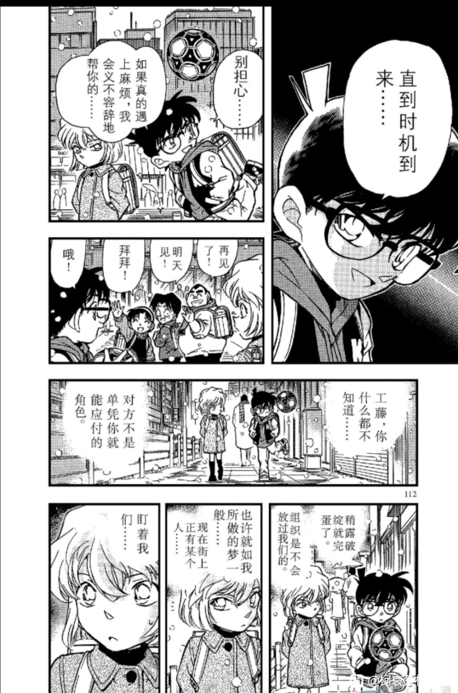
2024-02-22 04:44 | 即将02的废物月:73真的对柯哀的描写花了大心思
琴酒出现了。
柯南来自明美案，来自新干线案，来自龙舌兰案的记忆突然复活，他冲动地制订了简陋的计划，明明他已经见识过琴酒在新干线的反侦察能力了，却还是用口香糖发信器这种非常容易被发现的物品跟踪琴酒。
这种冲动甚至让柯南第二次（最后一次）吼了小哀，狂妄自大的小子即将付出惨痛的代价。
小哀的反应是跟上去，嘴上说“对抽象的正义不感兴趣”，但还是因为“不想被叫杀人犯”而前往饭店。
柯南早就不叫小哀杀人犯了。
小哀所谓的理由，无关柯南而关乎自己，她从来不希望因为自己而让其他人受到伤害，会因为组织做人体实验而终止研究，也会因为“可能有人在用自己的药”于是进行阻止。
小哀的正义是具体的正义，幸运的是，柯南的正义也被证明是具体的，福尔摩斯会因为具体的正义而做出特别的选择，柯南同样如此放任火中的皮斯克走向死亡。
什么是抽象的正义？【拉窗帘】。
柯南来自明美案，来自新干线案，来自龙舌兰案的记忆突然复活，他冲动地制订了简陋的计划，明明他已经见识过琴酒在新干线的反侦察能力了，却还是用口香糖发信器这种非常容易被发现的物品跟踪琴酒。
这种冲动甚至让柯南第二次（最后一次）吼了小哀，狂妄自大的小子即将付出惨痛的代价。
小哀的反应是跟上去，嘴上说“对抽象的正义不感兴趣”，但还是因为“不想被叫杀人犯”而前往饭店。
柯南早就不叫小哀杀人犯了。
小哀所谓的理由，无关柯南而关乎自己，她从来不希望因为自己而让其他人受到伤害，会因为组织做人体实验而终止研究，也会因为“可能有人在用自己的药”于是进行阻止。
小哀的正义是具体的正义，幸运的是，柯南的正义也被证明是具体的，福尔摩斯会因为具体的正义而做出特别的选择，柯南同样如此放任火中的皮斯克走向死亡。
什么是抽象的正义？【拉窗帘】。
2024-02-18 03:39 | 没字也行:不是【很早】而是柯南【从来没有】叫过小哀是杀人犯，这是小哀自己脑补的蹩脚印象。比起小兰这个boss，她（潜意识）对自己评价是【杀人犯】才是最后的boss。2024-02-18 06:02 | 🌐之徙:回复 没字也行 :嗯嗯，很有道理，是这样的
杯户饭店里的小哀感受到两瓶酒的强烈压力，显得惊慌失措，她向柯南讲述了自己的梦境，【一个和我们俩有关的噩梦】。上一个向柯南讲述噩梦的是服部平次，梦境中柯南同样先于服部中枪。
对于服部和小哀来说，柯南总是那个不顾一切保护身边人的人，但也只有他们意识到，柯南的保护让会他自己陷入危险。服部会将和叶给他的护身符暂时给柯南带上，小哀会跟着柯南来到杯户饭店，而给小哀带护身符的人变成了柯南。
超人的眼镜，柯南在说这些时不知为何有些害羞，这是他在小兰面前的伪装，是假面超人柯南的伪装，他用超人的眼镜补全了小哀的安全感，有些奇异的保护欲喷涌而出。
情不自禁地，太想保护她了。
小哀永远记住了这个场面，她的梦境不再有被枪杀的柯南，取而代之的是一次次保护她的男孩。
真的被拯救了呢。
对于服部和小哀来说，柯南总是那个不顾一切保护身边人的人，但也只有他们意识到，柯南的保护让会他自己陷入危险。服部会将和叶给他的护身符暂时给柯南带上，小哀会跟着柯南来到杯户饭店，而给小哀带护身符的人变成了柯南。
超人的眼镜，柯南在说这些时不知为何有些害羞，这是他在小兰面前的伪装，是假面超人柯南的伪装，他用超人的眼镜补全了小哀的安全感，有些奇异的保护欲喷涌而出。
情不自禁地，太想保护她了。
小哀永远记住了这个场面，她的梦境不再有被枪杀的柯南，取而代之的是一次次保护她的男孩。
真的被拯救了呢。
琴酒视角：雪莉和不知道哪个男人跑了这个画面真的很像私奔。
超人的眼镜过后小哀几乎屏蔽了酒厂雷达，冷静地和柯南查案，并解锁了柯南的【和案件的关系不全是0】的精彩逻辑。（后来小哀的雷达关闭已经是常态了，除了天天吓表妹的秀一）
柯南目暮叫来现场似乎并不是用新一的身份，而是用了路人报警，但准备留住七个嫌疑人时，用了工藤的声音（效率会更快但更有风险），最后要目暮去堵琴酒，直接装都不装了用柯南声音对目暮大吼大叫（说自己是工藤），层次是逐渐递进的。
柯哀就这样【互相】牵手，在大厅里跑来跑去，直到一次放手，柯哀被蜂拥而至的人群冲散。
柯南第一次失去了小哀，他大喊着灰原，刻骨铭心的教训出现了，柯南为自己的鲁莽付出了他绝不可接受的代价。
他永远不会再放掉抓紧小哀的手了。
这个画面真的很像私奔。超人的眼镜过后小哀几乎屏蔽了酒厂雷达，冷静地和柯南查案，并解锁了柯南的【和案件的关系不全是0】的精彩逻辑。（后来小哀的雷达关闭已经是常态了，除了天天吓表妹的秀一）
柯南目暮叫来现场似乎并不是用新一的身份，而是用了路人报警，但准备留住七个嫌疑人时，用了工藤的声音（效率会更快但更有风险），最后要目暮去堵琴酒，直接装都不装了用柯南声音对目暮大吼大叫（说自己是工藤），层次是逐渐递进的。
柯哀就这样【互相】牵手，在大厅里跑来跑去，直到一次放手，柯哀被蜂拥而至的人群冲散。
柯南第一次失去了小哀，他大喊着灰原，刻骨铭心的教训出现了，柯南为自己的鲁莽付出了他绝不可接受的代价。
他永远不会再放掉抓紧小哀的手了。
2024-03-10 07:30 | 学习机425:老琴，我的老琴
小哀做了第二个梦，没有柯南的梦。
她的同桌变成了步美，自己倒在了没有邻居的阿笠博士家，不会有人呼喊着自己的名字正在救她……
小哀正在忘记这件事，忘记柯南会因为救自己陷入危险，这样面对危险的就是自己一个人……
柯南的声音从护身符眼镜传递给小哀，他不应该来救她的！不应该让柯南陷入危险，让黑衣组织的复仇到这里为止……
柯南联系上了小哀，她决定告诉柯南A药更多的信息，不再留恋自己的生命。把A药信息传入光彦的磁盘。但柯南不同意，柯南【以工藤新一身份邀请警官留下】，这个信息几乎直接暴露给了皮斯克和贝姐，柯南正在用自己身份的暴露换取小哀两个小时的安全。
柯南又变回那个胸有成竹的名侦探，制定着“成功率不全为0”的计划，让小哀喝下白干，破解组织的密码，甚至问小哀有没有穿衣服。
但琴酒的到来仍然打碎了这种计划。柯南第三次打电话给目暮，他甚至试图用【柯南】这个身份的暴露换取小哀几乎不存在的安全时间。
可能是生平第一次，柯南动了杀心，酒窖的大致位置柯南是知道的（小哀有眼镜能反向告诉柯南），火烧皮斯克的计划不可能是临时起意，柯南正在计划谋杀，【陶艺家案】，凶手把死者放置在危险的位置，利用死者的习惯进行谋杀，就是这个，危险的酒精，皮斯克的抽烟习惯。
一切的规则都为了她打破了。
她的同桌变成了步美，自己倒在了没有邻居的阿笠博士家，不会有人呼喊着自己的名字正在救她……
小哀正在忘记这件事，忘记柯南会因为救自己陷入危险，这样面对危险的就是自己一个人……
柯南的声音从护身符眼镜传递给小哀，他不应该来救她的！不应该让柯南陷入危险，让黑衣组织的复仇到这里为止……
柯南联系上了小哀，她决定告诉柯南A药更多的信息，不再留恋自己的生命。把A药信息传入光彦的磁盘。但柯南不同意，柯南【以工藤新一身份邀请警官留下】，这个信息几乎直接暴露给了皮斯克和贝姐，柯南正在用自己身份的暴露换取小哀两个小时的安全。
柯南又变回那个胸有成竹的名侦探，制定着“成功率不全为0”的计划，让小哀喝下白干，破解组织的密码，甚至问小哀有没有穿衣服。
但琴酒的到来仍然打碎了这种计划。柯南第三次打电话给目暮，他甚至试图用【柯南】这个身份的暴露换取小哀几乎不存在的安全时间。
可能是生平第一次，柯南动了杀心，酒窖的大致位置柯南是知道的（小哀有眼镜能反向告诉柯南），火烧皮斯克的计划不可能是临时起意，柯南正在计划谋杀，【陶艺家案】，凶手把死者放置在危险的位置，利用死者的习惯进行谋杀，就是这个，危险的酒精，皮斯克的抽烟习惯。
一切的规则都为了她打破了。
柯南对皮斯克进行了有预谋的谋杀，证据十分充分，在看到新闻时，柯南已经知道谋杀的人是皮斯克（皮斯克被拍到了），但是他还是选择进行滔滔不绝的推理，把扩音器放在烈酒里，也就是这段推理根本没有意义，完全是诱骗皮斯克进入陷阱的手段。
在与黑衣组织的残酷对抗中，柯南只保护一个人，并把自己的K字衣服盖在她身上，残酷的笑容看向即将死亡的皮斯克。背着小哀离开，收听着琴酒枪杀皮斯克的声音，无动于衷地。
小兰说的“不希望任何人死掉”，真的是新一的追求吗？怎么听起来那么像追求永生的酒厂的追求。柯南的正义具体得甚至有些冷酷，他会用钓鱼的方法找到犯人，会要求新出医生的后妈做伪证，会故意让皮斯克葬身火海，这些都是真实的柯南，而他毫无顾忌地向小哀展示这一面。
小哀：“我只是不想再被你叫杀人犯了。”
柯南：“我只是不想再被你觉得是抽象的正义了。”
在与黑衣组织的残酷对抗中，柯南只保护一个人，并把自己的K字衣服盖在她身上，残酷的笑容看向即将死亡的皮斯克。背着小哀离开，收听着琴酒枪杀皮斯克的声音，无动于衷地。
小兰说的“不希望任何人死掉”，真的是新一的追求吗？怎么听起来那么像追求永生的酒厂的追求。柯南的正义具体得甚至有些冷酷，他会用钓鱼的方法找到犯人，会要求新出医生的后妈做伪证，会故意让皮斯克葬身火海，这些都是真实的柯南，而他毫无顾忌地向小哀展示这一面。
小哀：“我只是不想再被你叫杀人犯了。”
柯南：“我只是不想再被你觉得是抽象的正义了。”
2024-02-18 03:44 | 没字也行:收听着琴酒枪杀皮斯克的声音------不，是博士听到枪声的，随后转述。柯南的设备刚好那会儿没电了。2024-02-18 06:08 | 🌐之徙:回复 没字也行 :确实是这样2024-02-19 02:55 | 没字也行:，不过区别不大，柯南确实一脸平静并且更关心小哀在组织里是不是……
回复 🌐之徙 : 区别是有的，在于三次元的青山在挑战《小学馆》的底线。杯户饭店就是听听枪声，满月篇之前就开枪了。最后在动画组那里叫停，现在M26开搞。2024-02-19 03:01 | 🌐之徙:回复 没字也行 :嗯嗯，确实有这个递进过程
事件结束了，皮斯克的死在柯南心中毫无波澜，甚至还觉得对方了解小哀太多了，想要探听小哀的秘密，这已经不是保护欲，而是占有欲了。
听到小哀准备离开，柯南更加高兴了，这意味着自己可以顺理成章让小哀留在自己身边。（千层饼推测琴酒认为小哀会逃跑）
而且他还知道了小哀一直不告诉他的名字：宫野志保（只知道读音，不知道怎么写），并且一直记住了。
这么看来，柯南突然想问小哀在组织里的事，恐怕不单纯是一时冲动，难道柯南听到这个名字，想起了什么曾经有过的回忆吗？
听到小哀准备离开，柯南更加高兴了，这意味着自己可以顺理成章让小哀留在自己身边。（千层饼推测琴酒认为小哀会逃跑）
而且他还知道了小哀一直不告诉他的名字：宫野志保（只知道读音，不知道怎么写），并且一直记住了。
这么看来，柯南突然想问小哀在组织里的事，恐怕不单纯是一时冲动，难道柯南听到这个名字，想起了什么曾经有过的回忆吗？
2024-02-16 11:40 | 成冰的雨点:很喜欢柯南对皮斯可这里的处理方式，这才是福尔摩斯，而不是拉窗帘式的伪正义2024-03-07 05:00 | 逆光模糊了眼睛:回复 成冰的雨点 :这非常福尔摩斯 福尔摩斯在斑点带子案里利用凶手放的毒蛇反击杀死凶手 最后跟华生说他自己对凶手的死绝不感到愧疚
不论如何，再会篇后柯哀形成了牢固的羁绊，柯南第一次因为自己的大意而让小哀遭受了可怕的危险；第一次直面身份暴露的恐怖，这成为柯南在危命复活支撑下去不主动说出身份的主要力量；第一次和小哀独处，知道她的正义，知道她的可爱，知道她的担忧，知道她竟能直面自己的恐惧；第一次想不顾一切保护她，想知道她的一切；第一次为她带上护身符眼镜……
小哀不是第一次观察鲁莽的侦探了，她早已知道柯南会保护她，早已知道这会给柯南带去危险，可他是个追求真相，追求具体正义的侦探，是个为了救自己什么也不管的糊涂侦探，柯南对她施展了魔法，不是白干，而是拯救，从琴酒和皮斯克的枪，从燃烧的酒窖，从自己的噩梦中拯救。她早已爱上柯南，会继续偷偷喜欢他，就这样……一直保持下去。
危命复活即将开始，贝姐正在追踪米花町的小女孩，小兰还在继续诱导柯南主动告知身份，但柯南已经变得不一样了，小哀出现在他的生活里，他任由小哀占据自己的内心，【滑冰案】和【鸟取蜘蛛案】将让我们看到小兰面前越来越不一样的柯南，而他自己还没有发觉。
小哀不是第一次观察鲁莽的侦探了，她早已知道柯南会保护她，早已知道这会给柯南带去危险，可他是个追求真相，追求具体正义的侦探，是个为了救自己什么也不管的糊涂侦探，柯南对她施展了魔法，不是白干，而是拯救，从琴酒和皮斯克的枪，从燃烧的酒窖，从自己的噩梦中拯救。她早已爱上柯南，会继续偷偷喜欢他，就这样……一直保持下去。
危命复活即将开始，贝姐正在追踪米花町的小女孩，小兰还在继续诱导柯南主动告知身份，但柯南已经变得不一样了，小哀出现在他的生活里，他任由小哀占据自己的内心，【滑冰案】和【鸟取蜘蛛案】将让我们看到小兰面前越来越不一样的柯南，而他自己还没有发觉。
十六、滑冰案：零反馈的新兰交互
滑冰案是危命复活前最后一个新兰篇章，新兰感情由于柯南送手机而来到新的高峰，然而篇章中同样暴露了重要的问题：
看起来，小兰对新一有反馈（看到新一吃醋所以送毛衣），新一对小兰有反馈（知道小兰想要手机于是送一部），但这种反馈却在柯南的隐瞒身份和小兰的多次试探下大量消解了。
与之对应的则是突飞猛进的真园感情，真园同样互相隐瞒了一些事情，但反馈却是非常积极的。
本案一开始，小兰，园子和柯南去滑冰，园子将京极真比喻为“伤痕累累的武士”，小兰则日常说“我不会滑冰被新一嘲笑”（听起来很不像新一会做的事情，作为对比，服部表面笑和叶不会滑雪，实则超级关心她）。正当园子积极cue新一导致柯南脸红时--
柯南想起了同样伤痕累累的小哀。
这不是柯南在小兰面前第一次想起小哀了（早在推理作家失踪案就是这样），再会篇的教训让柯南在小兰面前更加隐藏自己的身份，他不可以扮演工藤新一，无论小兰进行任何暗示都不可以，这是出于对小兰的保护，这种保护只能由小兰主动打破。
小兰选择诱导柯南去打破，她一定要等待下去，在园子面前形容“新一欺负自己”获得道德高位，让柯南主动打破以获得感情上的高位，这是小兰一贯的作风，但这样的态度却将小兰禁锢在安全屋中，彻底失去了进入新一世界的机会。
滑冰案是危命复活前最后一个新兰篇章，新兰感情由于柯南送手机而来到新的高峰，然而篇章中同样暴露了重要的问题：
看起来，小兰对新一有反馈（看到新一吃醋所以送毛衣），新一对小兰有反馈（知道小兰想要手机于是送一部），但这种反馈却在柯南的隐瞒身份和小兰的多次试探下大量消解了。
与之对应的则是突飞猛进的真园感情，真园同样互相隐瞒了一些事情，但反馈却是非常积极的。
本案一开始，小兰，园子和柯南去滑冰，园子将京极真比喻为“伤痕累累的武士”，小兰则日常说“我不会滑冰被新一嘲笑”（听起来很不像新一会做的事情，作为对比，服部表面笑和叶不会滑雪，实则超级关心她）。正当园子积极cue新一导致柯南脸红时--
柯南想起了同样伤痕累累的小哀。
这不是柯南在小兰面前第一次想起小哀了（早在推理作家失踪案就是这样），再会篇的教训让柯南在小兰面前更加隐藏自己的身份，他不可以扮演工藤新一，无论小兰进行任何暗示都不可以，这是出于对小兰的保护，这种保护只能由小兰主动打破。
小兰选择诱导柯南去打破，她一定要等待下去，在园子面前形容“新一欺负自己”获得道德高位，让柯南主动打破以获得感情上的高位，这是小兰一贯的作风，但这样的态度却将小兰禁锢在安全屋中，彻底失去了进入新一世界的机会。
柯南回忆小哀的每一句话，回忆她伤痕累累的样子，是他的鲁莽导致了小哀受伤，不告诉小兰的主要原因看起来是保护小兰，却不太纯粹了。
小哀在告诉柯南最显而易见的道理：知道秘密的人越多越危险，而小哀眼中柯南最容易泄露的对象是小兰，她已经认定收到小兰毛衣的柯南是喜欢小兰的，但如果直接说出小兰的名字，小哀让柯南保守秘密的动机就会变得扑朔迷离，所以，小哀尽可能用冷冰冰的语气，不提及小兰地让柯南意识到这点。
柯南记住了小哀的每一句话，小哀完全高估了小兰的保守秘密能力，秘密对小兰而言根本不是负担，因为她一下子就会泄露出去。真正有负担是是柯南自己，他害怕自己不能坚持欺骗下去，但小哀给了他理由：这是保护小兰，让她不会变成黑衣组织要清除的对象。
这是小哀基于高估的新兰关系，为柯南设想的温馨理由，却不是柯南的理由，在两个月后【被玷污的假面英雄】案中，柯南的真正理由借另一位假面超人表露出来：
【只要不告诉小兰，当秘密泄露时就不会怀疑是小兰泄露的了】
冷酷的理由，小兰不能保守秘密，所以不告诉她。
和保护她无关。
小哀在告诉柯南最显而易见的道理：知道秘密的人越多越危险，而小哀眼中柯南最容易泄露的对象是小兰，她已经认定收到小兰毛衣的柯南是喜欢小兰的，但如果直接说出小兰的名字，小哀让柯南保守秘密的动机就会变得扑朔迷离，所以，小哀尽可能用冷冰冰的语气，不提及小兰地让柯南意识到这点。
柯南记住了小哀的每一句话，小哀完全高估了小兰的保守秘密能力，秘密对小兰而言根本不是负担，因为她一下子就会泄露出去。真正有负担是是柯南自己，他害怕自己不能坚持欺骗下去，但小哀给了他理由：这是保护小兰，让她不会变成黑衣组织要清除的对象。
这是小哀基于高估的新兰关系，为柯南设想的温馨理由，却不是柯南的理由，在两个月后【被玷污的假面英雄】案中，柯南的真正理由借另一位假面超人表露出来：
【只要不告诉小兰，当秘密泄露时就不会怀疑是小兰泄露的了】
冷酷的理由，小兰不能保守秘密，所以不告诉她。
和保护她无关。
于是柯南假装不会滑冰的样子，把自己和新一区分开，然而被小兰发现了。
小兰并不在乎柯南多演一会小孩子，她反而十分喜欢这种能够把柯南留在自己身边的感觉，让柯南假装不会滑，自己再假装教他，和柯南一起看烟花绽放，沉醉在烟花般虚假的美好里，对于小兰来说就足够了。
案件发生了，园子正在尖叫，柯南不顾一切滑冰向案发现场跑去了，如果顺序被打乱，很容易觉得小兰会【开始怀疑】柯南，但这是危命复活前，小兰的表情不是怀疑……
是悲伤和沮丧。
新一变成柯南后还是那个发生命案就抛下她的人，什么都没有改变，而且柯南会故意欺骗她，并且在案件发生后【连骗都不愿意骗】。
小兰的美好梦想如烟花般绽放而破碎，她【甚至忘记此时园子可能遭遇危险】，柯南会不顾一切去救园子，魔术师爱好者案救她没有任何特殊性。
这是小兰必须经历的痛苦，她幻想的新一和真的新一终于出现了无法忽视的差别，但小兰没有进行新一形象的重新整合--
她选择寻找【更强的忽视差别的方法】。
小兰并不在乎柯南多演一会小孩子，她反而十分喜欢这种能够把柯南留在自己身边的感觉，让柯南假装不会滑，自己再假装教他，和柯南一起看烟花绽放，沉醉在烟花般虚假的美好里，对于小兰来说就足够了。
案件发生了，园子正在尖叫，柯南不顾一切滑冰向案发现场跑去了，如果顺序被打乱，很容易觉得小兰会【开始怀疑】柯南，但这是危命复活前，小兰的表情不是怀疑……
是悲伤和沮丧。
新一变成柯南后还是那个发生命案就抛下她的人，什么都没有改变，而且柯南会故意欺骗她，并且在案件发生后【连骗都不愿意骗】。
小兰的美好梦想如烟花般绽放而破碎，她【甚至忘记此时园子可能遭遇危险】，柯南会不顾一切去救园子，魔术师爱好者案救她没有任何特殊性。
这是小兰必须经历的痛苦，她幻想的新一和真的新一终于出现了无法忽视的差别，但小兰没有进行新一形象的重新整合--
她选择寻找【更强的忽视差别的方法】。
2024-02-18 03:51 | 没字也行:小兰的底色就是贪婪，从未长大。甜甜圈也是（那纯恶心），想起一次就恶心一次。园子都发尖叫了，还没进入状态。
小兰千里迢迢把小五郎叫醒。
小兰寄希望于自己的名侦探父亲能先于柯南完成推理，命案交给父亲，柯南交给自己，这样柯南就还是不会离开她的世界。小兰显然向小五郎传达了大量信息（包括嫌疑人之前的争吵），甚至可能暗示让小五郎把柯南赶走。
本案小五郎的积极性明显不太正常，车上呼呼大睡，下来就能办案还一下子就指认了真凶，甚至一脸坏笑地锤柯南，几乎可以肯定小五郎受到了女儿的若干指示，就是要将柯南排除在现场外。
但小五郎还是被麻醉了，柯南继续担任沉睡小五郎的助手，漫画中特意画出小兰有些生气的凝视，她的计划失败了，柯南还是帮助父亲进行了推理（小兰没有麻醉针信息），该怎么办才能让柯南回到自己身边呢？
小兰又要使出传统方法了：著名的甜甜圈手段。
小兰寄希望于自己的名侦探父亲能先于柯南完成推理，命案交给父亲，柯南交给自己，这样柯南就还是不会离开她的世界。小兰显然向小五郎传达了大量信息（包括嫌疑人之前的争吵），甚至可能暗示让小五郎把柯南赶走。
本案小五郎的积极性明显不太正常，车上呼呼大睡，下来就能办案还一下子就指认了真凶，甚至一脸坏笑地锤柯南，几乎可以肯定小五郎受到了女儿的若干指示，就是要将柯南排除在现场外。
但小五郎还是被麻醉了，柯南继续担任沉睡小五郎的助手，漫画中特意画出小兰有些生气的凝视，她的计划失败了，柯南还是帮助父亲进行了推理（小兰没有麻醉针信息），该怎么办才能让柯南回到自己身边呢？
小兰又要使出传统方法了：著名的甜甜圈手段。
案件结束，园子收到了京极真的电话，她迅速转身到了远处（不让小兰听电话里的声音），京极在兴奋地向园子说自己的大赛成绩，园子在尽情表达自己对京极的关心，并且“早就给电话号码了”（谁一直没有号码呢？）。
新兰的电话向来没有这种互动，柯南不可能和小兰说自己又破了多少案（倒是喜欢和服部说，或者当面和小哀各种炫耀），小兰也日常不太关心新一是否生病是否有困难，只关心“班上同学很担心你欸快回来吧”
园子假装穿长裙被柯南鄙视（看眼神），却被小兰视为浪漫的象征，柯南大概是不太喜欢这种有些欺骗的恋爱方式的，而此时的新兰关系已经是双方互相欺骗的状态了，小兰是无所谓，柯南真的受得了吗？
小兰发动了甜甜圈攻势：“两个人的电话……真好”
于是柯南送了小兰一部手机，（此时还没有小兰手机掉进下水道的事情，之前柯南都是给毛利家打电话的），柯南其实是希望小兰能有所表示的，例如像他自己收到毛衣时感谢一下。
小兰【理所应当】地收下了，仿佛这是滑冰场柯南冷落小兰的补偿，只要哼歌表现出一点高兴，柯南就很满意了。
毛衣是小兰针对柯南吃新出醋的补偿，手机是小兰在滑冰场甜甜圈式要求的补偿，这种虚假的恋爱礼物将新兰关系强推到了本没有的高度，却不过是强弩之末罢了，如果新兰关系真的即将表白，危命复活又为什么会散场呢？
新兰的电话向来没有这种互动，柯南不可能和小兰说自己又破了多少案（倒是喜欢和服部说，或者当面和小哀各种炫耀），小兰也日常不太关心新一是否生病是否有困难，只关心“班上同学很担心你欸快回来吧”
园子假装穿长裙被柯南鄙视（看眼神），却被小兰视为浪漫的象征，柯南大概是不太喜欢这种有些欺骗的恋爱方式的，而此时的新兰关系已经是双方互相欺骗的状态了，小兰是无所谓，柯南真的受得了吗？
小兰发动了甜甜圈攻势：“两个人的电话……真好”
于是柯南送了小兰一部手机，（此时还没有小兰手机掉进下水道的事情，之前柯南都是给毛利家打电话的），柯南其实是希望小兰能有所表示的，例如像他自己收到毛衣时感谢一下。
小兰【理所应当】地收下了，仿佛这是滑冰场柯南冷落小兰的补偿，只要哼歌表现出一点高兴，柯南就很满意了。
毛衣是小兰针对柯南吃新出醋的补偿，手机是小兰在滑冰场甜甜圈式要求的补偿，这种虚假的恋爱礼物将新兰关系强推到了本没有的高度，却不过是强弩之末罢了，如果新兰关系真的即将表白，危命复活又为什么会散场呢？
2024-02-17 12:24 | 成冰的雨点:毛利兰就是典型的打着不抱怨、坚强的旗号，故意作出姿态来给所有人看2024-02-19 13:42 | LightW☜:回复 成冰的雨点 :“还好我很坚强”
十七、平次的愤怒：鸟取蜘蛛公馆的小兰
小时间线第109天，著名的蜘蛛公馆案开始了，这似乎是柯南第一次来到可能的BOSS老巢，而小兰对案件的不作为也来到了新的顶峰。
作为危命复活前的最后一案，小兰如此差的行为模式极大影响了危命复活的结果，试想如果本案小兰有像【园子的危险夏日物语】一样的高光（比如从歹徒手里救下和叶），那么小兰或许还有最后的机会……可惜她还是那个毫无作为的小兰。
本案一开始是超级亲昵的平和互动，这是漫画中第一次平和单独出场，就服部这个捏脸（和叶好像还很开心的样子），新兰是绝不会有的（但是柯哀有 ），随后服部企图抱着和叶一起睡觉，又一起默契地吐槽罗伯（表情同步太好磕了）
），随后服部企图抱着和叶一起睡觉，又一起默契地吐槽罗伯（表情同步太好磕了）
新兰/平和青梅竹马的区别描写太明显了，在平和是长久的羁绊，在新兰却只是锁链和执念，同样的青梅竹马和高中生侦探，只是和叶与小兰过于不同罢了。
小时间线第109天，著名的蜘蛛公馆案开始了，这似乎是柯南第一次来到可能的BOSS老巢，而小兰对案件的不作为也来到了新的顶峰。
作为危命复活前的最后一案，小兰如此差的行为模式极大影响了危命复活的结果，试想如果本案小兰有像【园子的危险夏日物语】一样的高光（比如从歹徒手里救下和叶），那么小兰或许还有最后的机会……可惜她还是那个毫无作为的小兰。
本案一开始是超级亲昵的平和互动，这是漫画中第一次平和单独出场，就服部这个捏脸（和叶好像还很开心的样子
），新兰是绝不会有的（但是柯哀有），随后服部企图抱着和叶一起睡觉，又一起默契地吐槽罗伯（表情同步太好磕了）新兰/平和青梅竹马的区别描写太明显了，在平和是长久的羁绊，在新兰却只是锁链和执念，同样的青梅竹马和高中生侦探，只是和叶与小兰过于不同罢了。
随后是吃饭的平和，我称之为【反向甜甜圈】事件，主人家少了一条鱼，看见双胞胎没有鱼，和叶决定把自己的鱼让给他们，【服部在和叶没说出口的时候夺走了鱼】，可以看到和叶的让出是善良的，服部的拿鱼是“很有占有欲”的。
【这一幕被柯南看到了】
【下一刻，柯南立刻望向小兰】
甜甜圈事件在很后期才出现，但如果青山早就安排了这样的剧情，那么这里的对比就很显著了，小兰让出甜甜圈以让新一把甜甜圈还给她，因为自己大赛获胜所以新一要陪她去乐园还要付钱，给新一手织毛衣希望他回赠手机（园子的新款大哥大，当年应该很贵），和小兰相比和叶要纯粹得多，她和服部的互动无比自然，最愿意看到服部的闪闪发光，天天和服部去还委托人的钱，服部还得拿走和叶的鱼提醒她不用太付出了。
这是小兰的重要缺点，甚至M27还出现了甜甜圈表情，她一直都是这样。
【这一幕被柯南看到了】
【下一刻，柯南立刻望向小兰】
甜甜圈事件在很后期才出现，但如果青山早就安排了这样的剧情，那么这里的对比就很显著了，小兰让出甜甜圈以让新一把甜甜圈还给她，因为自己大赛获胜所以新一要陪她去乐园还要付钱，给新一手织毛衣希望他回赠手机（园子的新款大哥大，当年应该很贵），和小兰相比和叶要纯粹得多，她和服部的互动无比自然，最愿意看到服部的闪闪发光，天天和服部去还委托人的钱，服部还得拿走和叶的鱼提醒她不用太付出了。
这是小兰的重要缺点，甚至M27还出现了甜甜圈表情，她一直都是这样。
和叶，小兰和罗伯一起去看星星（和叶邀请了小兰去，不至于向小兰前田聪仰望星空那样奇怪，青山在塑造和叶时，是不愿意让她获取小兰的代餐待遇的）
然后柯南服部得知罗伯是嫌疑人，立刻跑向小五郎准备电话联系小兰，结果和叶小兰早就回来了，柯南流了一滴汗，他找小五郎用电话不能说错，但是不紧不慢。大家看看服部，那真是汗流浃背，服部很可能直接冲向自己的摩托车准备去追了。
看起来新兰在危命复活快表白了，但他们的羁绊远不如平和，服部几乎是身体先于大脑地开始了行动，类似于M26柯南的乱跑，我感觉平和画面随便截图都比新兰好磕太多了。
然后柯南服部得知罗伯是嫌疑人，立刻跑向小五郎准备电话联系小兰，结果和叶小兰早就回来了，柯南流了一滴汗，他找小五郎用电话不能说错，但是不紧不慢。大家看看服部，那真是汗流浃背，服部很可能直接冲向自己的摩托车准备去追了。
看起来新兰在危命复活快表白了，但他们的羁绊远不如平和，服部几乎是身体先于大脑地开始了行动，类似于M26柯南的乱跑，我感觉平和画面随便截图都比新兰好磕太多了。
接下来的画面十分著名：
小兰的【吉祥挂件】不见了，于是小兰使用了甜甜圈方法让和叶主动带自己出去找，这里小兰的表现真的很甜甜圈，如果我没记错的话，这里和绷带怪人雨中漫步特别像，表面上小兰说不用出去，但身体十分诚实。
吉祥挂件似乎指代柯南，看似丢失实则还在小兰身边（但小兰找不到），小兰认为柯南是新一，所以不觉得新一“冷淡”，因此当和叶提出“我要是男人就把你抢走”的时候小兰给予否认，可问题是危命复活后柯南就不被认为是新一了，于是这里的每句话都变成了回旋镖，即新一是冷淡的，小兰是会被别的男人抢走的。更何况从未听说小兰有什么新一送的“吉祥挂件”（也不是后来的海参男之类），怕不是小兰编出来骗和叶，用以欺骗自己“新兰关系与平和等同”的虚假概念。
另外，和叶随身携带小手电筒，是为了谁携带的呢？恐怕不言自明了，事实上和叶已经在主动找线索，而且是服部不在身边的情况（M7迷宫的十字路口有类似设定，和叶会独立找线索，但小兰似乎不太行）
小兰的【吉祥挂件】不见了，于是小兰使用了甜甜圈方法让和叶主动带自己出去找，这里小兰的表现真的很甜甜圈，如果我没记错的话，这里和绷带怪人雨中漫步特别像，表面上小兰说不用出去，但身体十分诚实。
吉祥挂件似乎指代柯南，看似丢失实则还在小兰身边（但小兰找不到），小兰认为柯南是新一，所以不觉得新一“冷淡”，因此当和叶提出“我要是男人就把你抢走”的时候小兰给予否认，可问题是危命复活后柯南就不被认为是新一了，于是这里的每句话都变成了回旋镖，即新一是冷淡的，小兰是会被别的男人抢走的。更何况从未听说小兰有什么新一送的“吉祥挂件”（也不是后来的海参男之类），怕不是小兰编出来骗和叶，用以欺骗自己“新兰关系与平和等同”的虚假概念。
另外，和叶随身携带小手电筒，是为了谁携带的呢？恐怕不言自明了，事实上和叶已经在主动找线索，而且是服部不在身边的情况（M7迷宫的十字路口有类似设定，和叶会独立找线索，但小兰似乎不太行）
随后和叶被电晕，小兰发现了和叶的手电筒并开始无目的地乱逛。
作者在这里弄了一个叙诡，看起来好像是柯南听到了小兰的呼告，其实柯南听到的只是和叶小兰一起出门的声音，小兰并没有心灵感应之类的特殊性，这种叙诡一直贯穿整部漫画。
而在侦探们专心查案的时候，小兰做出了远超赤木量子案的抽象举动：
仅查了一个没人的仓库，找不到和叶，所以躲在里面哭……
问题是小兰完全知道小五郎等人在蜘蛛房查案（此时他们在吃寿司，小兰过去就能遇到他们），次一点去房子里找几个NPC也不难，躲在仓库里哭实在是抽象，甚至小兰手上有和叶手电筒和自己的电池，真查一查也不难，但小兰进仓库时手电筒都没开，是打算让和叶自己跑出来吗？
要不是小五郎灵机一动打算去仓库查一下绳子的来源，小兰好像真的打算就这么哭下去，这次和叶是真的有生命危险（罗伯明确提到他不介意多伤害几个人），恐怕是小兰在之前所有案件起到的负面作用之最。
这一章叫“平次的叫喊”，下一章叫“平次的愤怒”，服部看见小兰这种抽象操作，绝对不是不生气的，后来服部就很少和小兰交流了（新弗尼号几乎成为服部小兰最后的正常交流时间），然后服部就会在危命复活见到小哀，并直接信任了小哀。（如果没有小哀，服部怕不是要怀疑工藤的眼光有问题）
小五郎也很生气，换平时可能要安慰一下女儿，这里直接怒叫“快点分头去找”，柯南直接没说话，但表情已经露出来了：生气，但好像意料之中，确实是小兰能做出来的事情。
然后小兰到现在还是这副样子………
作者在这里弄了一个叙诡，看起来好像是柯南听到了小兰的呼告，其实柯南听到的只是和叶小兰一起出门的声音，小兰并没有心灵感应之类的特殊性，这种叙诡一直贯穿整部漫画。
而在侦探们专心查案的时候，小兰做出了远超赤木量子案的抽象举动：
仅查了一个没人的仓库，找不到和叶，所以躲在里面哭……
问题是小兰完全知道小五郎等人在蜘蛛房查案（此时他们在吃寿司，小兰过去就能遇到他们），次一点去房子里找几个NPC也不难，躲在仓库里哭实在是抽象，甚至小兰手上有和叶手电筒和自己的电池，真查一查也不难，但小兰进仓库时手电筒都没开，是打算让和叶自己跑出来吗？
要不是小五郎灵机一动打算去仓库查一下绳子的来源，小兰好像真的打算就这么哭下去，这次和叶是真的有生命危险（罗伯明确提到他不介意多伤害几个人），恐怕是小兰在之前所有案件起到的负面作用之最。
这一章叫“平次的叫喊”，下一章叫“平次的愤怒”，服部看见小兰这种抽象操作，绝对不是不生气的，后来服部就很少和小兰交流了（新弗尼号几乎成为服部小兰最后的正常交流时间），然后服部就会在危命复活见到小哀，并直接信任了小哀。（如果没有小哀，服部怕不是要怀疑工藤的眼光有问题）
小五郎也很生气，换平时可能要安慰一下女儿，这里直接怒叫“快点分头去找”，柯南直接没说话，但表情已经露出来了：生气，但好像意料之中，确实是小兰能做出来的事情。
然后小兰到现在还是这副样子………
2024-02-18 07:25 | 一叶之秋🌿🍁🍁:兰神三大抽象行为：蜘蛛之家躲起来哭，拉窗帘，伦敦马拉松2024-02-18 21:30 | NABUTO♬:车上也能打电话2024-02-18 23:18 | 贴吧用户_GtyRyb2:风之女神
于是没人安慰小兰，小兰继续流泪，最后服部找到了和叶，小兰发挥传统艺能，抢到和叶面前说“都是我不好”，以和叶这种善良的人自然开始安慰小兰，让她【不要再弄丢了】
（如果没有和叶这句话，危命复活里小兰说不定不会在献血时说自己的血型和柯南一样，新兰进展更是无从谈起）
服部对此的评价是：把和叶拜托给叔叔，自己要和柯南去查案了。
他曾经把和叶拜托给小兰，结果就是这样。服部丢失和叶的教训几乎和柯南再会篇丢失小哀的教训类似（小兰的杀伤力与琴酒半斤八两），相比小兰，小五郎显得如此可靠，这将成为服部永远的印象，可以说这就是服部生锈的开始（和叶要晚点才生锈）
（如果没有和叶这句话，危命复活里小兰说不定不会在献血时说自己的血型和柯南一样，新兰进展更是无从谈起）
服部对此的评价是：把和叶拜托给叔叔，自己要和柯南去查案了。
他曾经把和叶拜托给小兰，结果就是这样。服部丢失和叶的教训几乎和柯南再会篇丢失小哀的教训类似（小兰的杀伤力与琴酒半斤八两），相比小兰，小五郎显得如此可靠，这将成为服部永远的印象，可以说这就是服部生锈的开始（和叶要晚点才生锈）
2024-02-19 05:05 | 一叶之秋🌿🍁🍁:全体生锈2024-02-19 05:05 | 似有却無:和琴酒杀伤力半斤八两可太搞了2024-02-25 10:43 | 黑暗刺猬-夏特:真不愧为黑色子弹！！！
服部对小兰的不信任几乎立刻表现出来：为了查看和叶是否被电击枪电晕，服部冲上来就要看和叶的伤口，旁边更适合查伤口的小兰直接被无视了。
服部怎么做还不太关键，柯南也无视了小兰，之前滑雪别墅里柯南曾经让小兰搜女嫌疑人的身，结果小兰连假发都没查出来，再加上今天的低下水平，对小兰能力的不信任已经完全根植在两位侦探心中。
但是和叶就很值得信任，被电晕了照样提供重要线索，与被迷晕就摆烂的小兰区别实在太大。我们会在之后的剧情看到，和叶和柯南关系很好，也可以各种抱柯南，但服部和小兰几乎是不太正面交流了，小兰的表现越来越与众人格格不入，这不是“后期小兰”塑造的问题，而是一直如此。
服部怎么做还不太关键，柯南也无视了小兰，之前滑雪别墅里柯南曾经让小兰搜女嫌疑人的身，结果小兰连假发都没查出来，再加上今天的低下水平，对小兰能力的不信任已经完全根植在两位侦探心中。
但是和叶就很值得信任，被电晕了照样提供重要线索，与被迷晕就摆烂的小兰区别实在太大。我们会在之后的剧情看到，和叶和柯南关系很好，也可以各种抱柯南，但服部和小兰几乎是不太正面交流了，小兰的表现越来越与众人格格不入，这不是“后期小兰”塑造的问题，而是一直如此。
愤怒的服部最后选择拿犯人撒气，把犯人怒斥了一顿让他倒地了，本案又是情杀案，罗伯的好意被理解为“去死”，于是女朋友自杀了，不禁让我想起伦敦篇新一的询问案情被小兰理解成故意伤她心。
值得注意的是，本案的蜘蛛传说是老太太杜撰的，和雪女的传说颇为类似，柯南选择不告诉小兰这个传说，恐怕是柯南想起了雪山上小兰毫无作为的样子。
【蜘蛛会变成女子吸引男子并吃掉】
解决方法：【创建一个傀儡吸引蜘蛛的注意力】
像不像危命复活里柯南的做法？创建一个傀儡，傀儡不会满足蜘蛛，于是蜘蛛露出了獠牙。
更有趣的是，老婆婆的下一个故事是【因幡的白兔】，兔子意味着小哀，而这个故事才是真正温暖的故事。
值得注意的是，本案的蜘蛛传说是老太太杜撰的，和雪女的传说颇为类似，柯南选择不告诉小兰这个传说，恐怕是柯南想起了雪山上小兰毫无作为的样子。
【蜘蛛会变成女子吸引男子并吃掉】
解决方法：【创建一个傀儡吸引蜘蛛的注意力】
像不像危命复活里柯南的做法？创建一个傀儡，傀儡不会满足蜘蛛，于是蜘蛛露出了獠牙。
更有趣的是，老婆婆的下一个故事是【因幡的白兔】，兔子意味着小哀，而这个故事才是真正温暖的故事。
2024-02-18 07:47 | 一叶之秋🌿🍁🍁:这传说真是恶意满满2024-02-18 12:28 | 成冰的雨点:有趣的一点是当毛利兰解释不了某件事或者那件事超出她的认知范围时，她的观点里永远是对方“故意看她出糗”或“看她伤心”，别说从大局着想了，她好像潜意识里知道自己只能是那个跟不上趟而出糗的角色2024-02-22 05:26 | 即将02的废物月:原来一切都有迹可循2024-02-25 08:27 | 贴吧用户_QA9a7RQ:2024-02-25 10:46 | 黑暗刺猬-夏特:回复 贴吧用户_QA9a7RQ ::就是危命篇的那场露营路上
十八、危命复活的底层逻辑：为什么要急于表白？
如果我们仔细观察危命复活篇章，会发现一件怪事：前半部分，柯南犹豫的是【要不要主动告诉小兰真相】，但后半部分，却几乎无缝切换到【要不要表白】，虽然表现上都是柯南/新一犹豫不决的样子，但差别是非常大的。
如果我们将密集的小时间线引进去，就会发现更加有趣的知识，柯南做【不告诉小兰】这个决策所需要的时间从110天洞窟冒险前开始，至122天深夜小哀七朵玫瑰结束，耗时是完整的13天（如果加上思考小哀选择的时间则更多），是深思熟虑的决策。
表白的决策所用的时间呢？往多了算只有两天，而且看起来像是黑衣骑士演出后临时决定的！考虑到黑衣骑士只是在支开小兰，真正做表白决策的时间更短，连地点都直接抄父母的，钞能力解决问题。这不是深思熟虑的决策，最多算报复性消费。
既然是【报复性】的，那就必然有若干动因，我将从第110天的洞窟案开始，逐步分析这些重要的报复性消费因素。
（如图，这是第125天的所谓“等下有重要的事情”，结果当天并没有说这件事，是126天才和小兰约定的饭店）
如果我们仔细观察危命复活篇章，会发现一件怪事：前半部分，柯南犹豫的是【要不要主动告诉小兰真相】，但后半部分，却几乎无缝切换到【要不要表白】，虽然表现上都是柯南/新一犹豫不决的样子，但差别是非常大的。
如果我们将密集的小时间线引进去，就会发现更加有趣的知识，柯南做【不告诉小兰】这个决策所需要的时间从110天洞窟冒险前开始，至122天深夜小哀七朵玫瑰结束，耗时是完整的13天（如果加上思考小哀选择的时间则更多），是深思熟虑的决策。
表白的决策所用的时间呢？往多了算只有两天，而且看起来像是黑衣骑士演出后临时决定的！考虑到黑衣骑士只是在支开小兰，真正做表白决策的时间更短，连地点都直接抄父母的，钞能力解决问题。这不是深思熟虑的决策，最多算报复性消费。
既然是【报复性】的，那就必然有若干动因，我将从第110天的洞窟案开始，逐步分析这些重要的报复性消费因素。
（如图，这是第125天的所谓“等下有重要的事情”，结果当天并没有说这件事，是126天才和小兰约定的饭店）
第110天，危命复活的第一天（恰好洞窟冒险柯哀的暗号也是110，同时这个数字也是“黑白”的柯南数字，不过应该只是巧合）
小兰和父亲练习话剧（应该已经练习了一点时间，柯南知道这是个爱情戏），但柯南一脸不感兴趣的样子，至于黑衣骑士谁演，柯南也不太关心，直到小五郎发现里面有吻戏，柯南才表现出有些吃醋的样子，这个逻辑类似于基德穿小兰衣服无所谓，但不能拿走内衣，柯南对小兰的占有欲真的很有限。
尽管吃醋得有些晚，对小兰而言还是属于正反馈，于是小兰再接再励，故意说新出（此时已经是贝姐）是男主角以观察柯南的反应，结果柯南的反应差强人意，与小五郎基本相当。
这是小兰第一轮试探的结果，她听了和叶“不要再弄丢了”的建议，进行了多次主动进攻，在小兰看来这是她和新一的良性互动，但柯南的视角里却只剩下暴露的危机，结果柯南直接润博士家向博士和小哀通报情况了。
再会篇后，即使没有小哀在身边，柯南也会分外注意自己的身份安全。现在问题来了：小兰的种种行为已经基本可以判断她已知柯南身份，柯南会选择：
A、考虑表白
B、考虑是否坦白身份
C、只要没有确实的证据，就假装看不见
答案是C，新兰关系既没有到告白的时候，也远远没有到要交身份的时候，这是危命复活的最大背景，危命复活之所以能将C推进到B，主要是小兰的积极行动（远不是说一句“血型一样“那么简单）和小哀对新兰进展的误判导致的，而由B推进到A，则完全是柯南报复性消费的结果。
这是危命复活的基本框架，柯南在这个框架中亦步亦趋走向A选项的告白，但他最后退缩了。
报复性消费也许可以暂时提高新兰的预期，但新兰的真正价值还是那么有限。
小兰和父亲练习话剧（应该已经练习了一点时间，柯南知道这是个爱情戏），但柯南一脸不感兴趣的样子，至于黑衣骑士谁演，柯南也不太关心，直到小五郎发现里面有吻戏，柯南才表现出有些吃醋的样子，这个逻辑类似于基德穿小兰衣服无所谓，但不能拿走内衣，柯南对小兰的占有欲真的很有限。
尽管吃醋得有些晚，对小兰而言还是属于正反馈，于是小兰再接再励，故意说新出（此时已经是贝姐）是男主角以观察柯南的反应，结果柯南的反应差强人意，与小五郎基本相当。
这是小兰第一轮试探的结果，她听了和叶“不要再弄丢了”的建议，进行了多次主动进攻，在小兰看来这是她和新一的良性互动，但柯南的视角里却只剩下暴露的危机，结果柯南直接润博士家向博士和小哀通报情况了。
再会篇后，即使没有小哀在身边，柯南也会分外注意自己的身份安全。现在问题来了：小兰的种种行为已经基本可以判断她已知柯南身份，柯南会选择：
A、考虑表白
B、考虑是否坦白身份
C、只要没有确实的证据，就假装看不见
答案是C，新兰关系既没有到告白的时候，也远远没有到要交身份的时候，这是危命复活的最大背景，危命复活之所以能将C推进到B，主要是小兰的积极行动（远不是说一句“血型一样“那么简单）和小哀对新兰进展的误判导致的，而由B推进到A，则完全是柯南报复性消费的结果。
这是危命复活的基本框架，柯南在这个框架中亦步亦趋走向A选项的告白，但他最后退缩了。
报复性消费也许可以暂时提高新兰的预期，但新兰的真正价值还是那么有限。
2024-02-20 04:52 | 没字也行:此处可以对应贴吧里另一贴《毛利兰眼中的新兰》对比食用，这里的毛利兰是很C的，可以说临时性升格为女主。2024-02-20 05:47 | 🌐之徙:回复 没字也行 :有一些高光，但离C还是太远了，整个危命复活几乎都在小哀的框架下进行，小兰离女主还是太远了。
这一幕小五郎的态度也十分有意思，作为小兰的父亲，认识新出并向他提过亲的人，小五郎深知新出很可能不喜欢小兰，那么为何小兰获得了许多和新出的互动，甚至要亲嘴呢？
小五郎最优先的考虑恐怕是小兰可能倒贴了新出，正如小兰能跑去新一家自冻三小时（小五郎肯定知道），父亲知道别人欺负不了女儿，却害怕女儿自己过于付出以至于让自己受伤。
于是小五郎利用之前小兰和柯南一起洗澡的点，提醒小兰不要太随便了，要对自己有所保护，在看到小兰激烈的反应后，小五郎比较平静，也许女儿真的长大了，不是那个在他同学会上乱来的女儿了……真的吗？
我们知道，小五郎的预估是完全错误的，小兰面对“新出”是真的敢亲下去，小五郎在观众席大呼小叫，看起来是搞笑，实则呢？是父亲的操心啊。
小五郎最优先的考虑恐怕是小兰可能倒贴了新出，正如小兰能跑去新一家自冻三小时（小五郎肯定知道），父亲知道别人欺负不了女儿，却害怕女儿自己过于付出以至于让自己受伤。
于是小五郎利用之前小兰和柯南一起洗澡的点，提醒小兰不要太随便了，要对自己有所保护，在看到小兰激烈的反应后，小五郎比较平静，也许女儿真的长大了，不是那个在他同学会上乱来的女儿了……真的吗？
我们知道，小五郎的预估是完全错误的，小兰面对“新出”是真的敢亲下去，小五郎在观众席大呼小叫，看起来是搞笑，实则呢？是父亲的操心啊。
2024-02-20 04:58 | 没字也行:我觉得毛利小母狼没有提醒女儿的意思，单纯的说事儿。重点在和柯南共浴的态度，这是一处佐证：毛利兰当前认为柯南=新一，所以不敢。但是有一说一，为啥不挑明了呢？新一是那种过家家的人吗？可以理解兰的做法，但不认为她很在乎新一的实际情况，她还是优先自己感受的这么一个人
在博士家，柯南趁小兰去洗澡的时候，和博士小哀各种聊小兰，并脑补了小兰眼神不对劲的时候。
（新弗尼号就和小哀聊过小兰了，后来步美还知道他们聊的“安产型“之类，小兰好像一直是柯哀的谈资之一💔）
柯南脑补的眼神很成问题，这个环境下最容易脑补的是新弗尼号的“不要丢下我一个人”，但是柯南脑补到的两个小兰形象并不能很好的贴合之前的事件，上面脸红的形象似乎出自新出案，下面那个眼神就更有趣了，出自空中密室，小兰首次得知小哀的存在就是这个眼神（衣服还是新出案的），两个形象嘴型都有区别，这两个案子里的小兰和新兰糖没有太多关系，倒是和新出/小哀有关，柯南回忆的时候甚至不能找到很多快乐的回忆吗？
（有人认为下面的眼神来自服部查和叶电击棒伤口的时候，我感觉是不太像，而且意义也不明）
（新弗尼号就和小哀聊过小兰了，后来步美还知道他们聊的“安产型“之类，小兰好像一直是柯哀的谈资之一💔）
柯南脑补的眼神很成问题，这个环境下最容易脑补的是新弗尼号的“不要丢下我一个人”，但是柯南脑补到的两个小兰形象并不能很好的贴合之前的事件，上面脸红的形象似乎出自新出案，下面那个眼神就更有趣了，出自空中密室，小兰首次得知小哀的存在就是这个眼神（衣服还是新出案的），两个形象嘴型都有区别，这两个案子里的小兰和新兰糖没有太多关系，倒是和新出/小哀有关，柯南回忆的时候甚至不能找到很多快乐的回忆吗？
（有人认为下面的眼神来自服部查和叶电击棒伤口的时候，我感觉是不太像，而且意义也不明）
小哀当然是读不到柯南视角里的小兰的，此时小哀认定柯南身份暴露，决定“加班”做解药，叫博士和柯南“不要来打搅我”。
注意，这件事发生在小兰说“自己血型和柯南一样”之前，如果小兰没有献血行动，柯南甚至不需要解药，但小哀高估了新兰关系，并几乎是有些残忍地强迫自己去加班做药，坚决逃避自己对柯南有些炽热的感情。
此前，小哀应该已经获得了柯哀的第二块磁盘：烧毁的A药资料，但还处于按部就班地做实验阶段，但从这一天开始，小哀的实验必须加快，用以应对各种突发的风险，不让博士进地下室，几乎就意味着小哀要自己试药。
小哀这么做的预期结果是【变小秘密没有泄露+工藤向小兰表白】，她已经做好这个准备了，但小哀的预测是错的，新兰之间的问题，真的只是一方变小了导致不能表白而已吗？
注意，这件事发生在小兰说“自己血型和柯南一样”之前，如果小兰没有献血行动，柯南甚至不需要解药，但小哀高估了新兰关系，并几乎是有些残忍地强迫自己去加班做药，坚决逃避自己对柯南有些炽热的感情。
此前，小哀应该已经获得了柯哀的第二块磁盘：烧毁的A药资料，但还处于按部就班地做实验阶段，但从这一天开始，小哀的实验必须加快，用以应对各种突发的风险，不让博士进地下室，几乎就意味着小哀要自己试药。
小哀这么做的预期结果是【变小秘密没有泄露+工藤向小兰表白】，她已经做好这个准备了，但小哀的预测是错的，新兰之间的问题，真的只是一方变小了导致不能表白而已吗？
2024-02-20 05:05 | 没字也行:这里新一比较少的对兰产生了情感上的要求，“她应该会来问我的（对质的）”。所以新兰根本不是一路人，一个等着说（主动坦白），一个等着问。2024-02-20 05:37 | 🌐之徙:回复 没字也行 :我觉得不至于，柯南只是归纳了小兰之前的行为（落叶缤纷之类），并进行合理的推测，并不能说柯南产生了感情需求2024-02-20 05:51 | 没字也行:回复 🌐之徙 : 新一很少会对个人【应该做什么】提要求，他自己是总被提要求的那一个。从前面的篇章里，基本都是兰园开副本，很少有主动出击的时候。福利也好，也是兰主动送上门。新一总是通过很臭屁的显摆，来获得被关注的快感。很少说小兰你应该怎么做。2024-02-20 05:55 | 没字也行:回复 🌐之徙 : 至于为何归类到【情感】上的需求，因为她主动来问是新一希望由青梅的小兰做出来的。这样小兰总还是比较着急的，还是会和我说“你为何变小？”这样的话题。而不是说我已经知道你的身份了，证据1,2,3。2024-02-20 05:58 | 没字也行:回复 🌐之徙 : 小兰来问，就还显得亲近。有怀疑却不问，这是怎么滴......冷战吗？那在小兰心里面他工藤新一又是一个怎样的人？无事夏迎春，有事钟无艳？2024-02-20 06:10 | 🌐之徙:回复 没字也行 :这个话的语境是，柯南倾向于小兰不知道，理由是【如果知道会来问】，并不是说【柯南希望小兰问】，也就是柯南对小兰是没有什么情感需求的，只是在冷静分析【小兰是否知情】这个问题。
就在这时，小兰出于【窥探他人秘密】的很不光彩的目的，强行进入地下室。
我们看小兰是怎么想的：柯南是被“博士的药”变小，博士家住了一个“超级可爱”的女孩，柯南从来不和她说这件事，但却知道女孩会照顾生病的博士，现在终于有机会看到小哀了，柯南的预测没有错，小兰会用各种方法进行求证，只是她向柯南求证失败了，所以她换了小哀作为突破口。
柯南尽力阻止了小兰进入地下室，失败。
博士准备把小哀塑造为普通的女孩子（博士对小哀准备做药尚无思想准备），失败。
小兰大步流星地踏入不属于她的领域，她以为自己会看到什么？像步美那样活泼的女孩子？赤木量子或者内田麻美？她看到了冷静的女孩正在敲电脑，小哀强大而神秘的气场让小兰落荒而逃。
这是兰哀的第一次见面，小兰的窥探是随意而无原则的，小哀的制药是严肃而自制的，小哀说自己在逃避，但她的选择看不出任何逃避的影子，真正逃避的是小兰，她必须忘记小哀的存在，不然柯南＝新一的等式将摇摇欲坠。
柯南露出了半月眼，他又想到绷带怪人三连开门了。
【当晚，小哀很可能进行了第一次试药，基本知道了药效是“暂时恢复”，她已经下定决心，只要小兰显著认为柯南是新一，她就会让真正的新一回到小兰身边，这个时机随时会到来，在时机到来前小哀绝对不可以在柯南面前展露自己的内心】
我们看小兰是怎么想的：柯南是被“博士的药”变小，博士家住了一个“超级可爱”的女孩，柯南从来不和她说这件事，但却知道女孩会照顾生病的博士，现在终于有机会看到小哀了，柯南的预测没有错，小兰会用各种方法进行求证，只是她向柯南求证失败了，所以她换了小哀作为突破口。
柯南尽力阻止了小兰进入地下室，失败。
博士准备把小哀塑造为普通的女孩子（博士对小哀准备做药尚无思想准备），失败。
小兰大步流星地踏入不属于她的领域，她以为自己会看到什么？像步美那样活泼的女孩子？赤木量子或者内田麻美？她看到了冷静的女孩正在敲电脑，小哀强大而神秘的气场让小兰落荒而逃。
这是兰哀的第一次见面，小兰的窥探是随意而无原则的，小哀的制药是严肃而自制的，小哀说自己在逃避，但她的选择看不出任何逃避的影子，真正逃避的是小兰，她必须忘记小哀的存在，不然柯南＝新一的等式将摇摇欲坠。
柯南露出了半月眼，他又想到绷带怪人三连开门了。
【当晚，小哀很可能进行了第一次试药，基本知道了药效是“暂时恢复”，她已经下定决心，只要小兰显著认为柯南是新一，她就会让真正的新一回到小兰身边，这个时机随时会到来，在时机到来前小哀绝对不可以在柯南面前展露自己的内心】
2024-02-19 14:02 | LightW☜:小兰破门后的两个格子都画了小柯的半月眼表情，第一个眼神是望向小兰的，我觉得是小柯对她嘴上说“别打扰她”但实际行为就是不顾自己阻拦仍要开门的不满。2024-02-19 14:03 | LightW☜:第二个眼神是望向小哀的，动画组把这里解读为生气小哀没礼貌，但我觉得这里是小柯不满灰原让自己在小兰面前隐藏身份，但灰原自己却在小兰面前做出这种明显不符合小孩行为的事情。也就是“你怎么装都不装一下，一点都不配合我，暴露了怎么办！”的埋怨2024-02-19 18:23 | 🌐之徙:回复 LightW☜ :我感觉都可以解释，我个人倾向于都是看小兰，有种向上看到表情，柯南前面一直在阻止小兰进去，果然很尴尬，所以不可能对小哀有埋怨
看看
危命复活第二天（111天），柯哀在甲壳虫上的座位和蓝色古堡一样，但小哀开始逃避柯南的目光了，如果再像之前那样开柯南的玩笑，和他四目相对，她怕自己无法坚持下去。
试药无疑是成功的，那个苦涩的计划没有什么破绽，唯一的破绽来源于小哀自己。野炊的时候，小哀仍然在无人注意的地方偷偷看着柯南，柯南能猜到小哀的心事，却很难看透小哀“为她做那么多”的原因，他可以在黑衣组织到来前安慰小哀，但这次是无能为力的。
整个洞窟探险案，柯哀没有任何语言交流，这是小哀自我克制的结果。但是，小哀固然可以克制自己对柯南的情感，把柯南身上的压力背负到自己身上，但她无法取消大侦探对自己过度的关心，无法面对新一“为什么要为我做那么多”的询问，甚至无法让自己真的冰冷下去。
她既是从黑暗组织叛逃的雪莉，也是偷偷喜欢柯南的灰原哀。
试药无疑是成功的，那个苦涩的计划没有什么破绽，唯一的破绽来源于小哀自己。野炊的时候，小哀仍然在无人注意的地方偷偷看着柯南，柯南能猜到小哀的心事，却很难看透小哀“为她做那么多”的原因，他可以在黑衣组织到来前安慰小哀，但这次是无能为力的。
整个洞窟探险案，柯哀没有任何语言交流，这是小哀自我克制的结果。但是，小哀固然可以克制自己对柯南的情感，把柯南身上的压力背负到自己身上，但她无法取消大侦探对自己过度的关心，无法面对新一“为什么要为我做那么多”的询问，甚至无法让自己真的冰冷下去。
她既是从黑暗组织叛逃的雪莉，也是偷偷喜欢柯南的灰原哀。
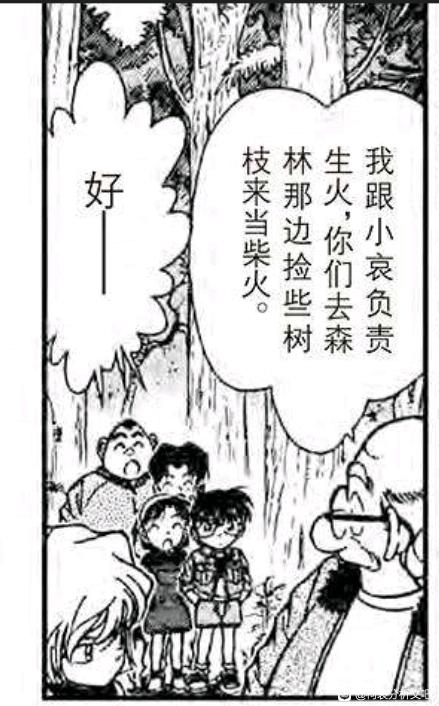
洞窟中发生了案件，为了保护三小只，柯南腹部中枪，这很可能是柯南最危险的一次受伤，为了安慰少侦，柯南给自己贴了一张OK绷（几乎没有任何作用），柯南保护三小只的动作像极了小哀为柯南试药，却不让柯南知道的样子。
都是保护别人的人。
（接下来小哀错过了侦探徽章通信，这是第一次也是唯一一次，从此小哀徽章不离手，后来又绑定了备用眼镜等各种装备。）
尽管错过徽章，柯哀强大的默契却还是生成了解决方案：小哀一定会主动前往洞窟查看，柯南会知道小哀来查看于是留下线索和追踪眼镜，小哀会知道柯南会留下这些暗号并进行解读，柯南知道小哀一定会解读成功……
没有任何交流，也不需要交流，这是独属于柯哀的完美默契。柯哀剧情将会因为默契太高获得大量容错，相比动辄被打倒的小兰将会简单太多（于是柯哀剧情的犯人也变成了各种持枪犯罪集团，用以平衡柯哀过高的能力）
【不要忘记，本案是紧接着鸟取蜘蛛案的，名字叫做“坚强的侦探团”，小哀发现伙伴不见主动寻找并提供了最好的解决方案，三小只表现也是极为出色，所以到底为什么小兰要躲在仓库里哭啊！】
都是保护别人的人。
（接下来小哀错过了侦探徽章通信，这是第一次也是唯一一次，从此小哀徽章不离手，后来又绑定了备用眼镜等各种装备。）
尽管错过徽章，柯哀强大的默契却还是生成了解决方案：小哀一定会主动前往洞窟查看，柯南会知道小哀来查看于是留下线索和追踪眼镜，小哀会知道柯南会留下这些暗号并进行解读，柯南知道小哀一定会解读成功……
没有任何交流，也不需要交流，这是独属于柯哀的完美默契。柯哀剧情将会因为默契太高获得大量容错，相比动辄被打倒的小兰将会简单太多（于是柯哀剧情的犯人也变成了各种持枪犯罪集团，用以平衡柯哀过高的能力）
【不要忘记，本案是紧接着鸟取蜘蛛案的，名字叫做“坚强的侦探团”，小哀发现伙伴不见主动寻找并提供了最好的解决方案，三小只表现也是极为出色，所以到底为什么小兰要躲在仓库里哭啊！】
重伤的柯南进入手术室，小哀又一次见到小兰最好的一面：为柯南献血。漫画中画出小五郎，博士和小哀的表情，小五郎是疑惑，博士是有些害怕（博士早就认为消息给小兰是不安全的，这和小哀不同，所以他倾向于认为小兰不知情），小哀并没有太多波动，她已经做好准备了，只是事情发生得太快，而且她短期内没办法考虑身份暴露的问题。
【小哀此时更关心的不是身份暴露，而是柯南的生命安全】
她此时已经不顾自己的身份暴露，向小五郎（在场最懂枪的人）描述了柯南中弹的危险，当柯南做手术时，小哀做的事情是看表，为什么要看表？作为有医学知识的人，小哀能够通过手术时间判断手术是否顺利，小哀根本没功夫考虑身份暴露，小兰的表现对于小哀而言与其说是【证明身份暴露】，不如说是【证明新兰感情】。
对小兰的表现进行严格采样，就形成了小哀面前完美无缺的小兰。但是，小兰的献血，真的有那么纯粹吗？
【小哀此时更关心的不是身份暴露，而是柯南的生命安全】
她此时已经不顾自己的身份暴露，向小五郎（在场最懂枪的人）描述了柯南中弹的危险，当柯南做手术时，小哀做的事情是看表，为什么要看表？作为有医学知识的人，小哀能够通过手术时间判断手术是否顺利，小哀根本没功夫考虑身份暴露，小兰的表现对于小哀而言与其说是【证明身份暴露】，不如说是【证明新兰感情】。
对小兰的表现进行严格采样，就形成了小哀面前完美无缺的小兰。但是，小兰的献血，真的有那么纯粹吗？
2024-02-20 05:12 | 没字也行:这里就没必要给兰的动机上什么强度的质疑了，但凡柯南不等于新一，柯南就会被兰的一通操作直接送走......这才是要命的地方。她兰可不是O型血，而是A型。2024-02-20 05:14 | 没字也行:动机没问题是很纯的，纯粹是想救命。但是属于好心办坏事，幸好柯南和新一的血型是一致的。（撇开观众的全知视角来看，性质跟拉窗帘差不多的）2024-02-20 05:33 | 🌐之徙:回复 没字也行 :你这个不对，小兰为了保险，是去验血的，不存在你说的直接送走的可能。2024-02-20 05:36 | 🌐之徙:回复 没字也行 :也不是说小兰救人不对，我说的是小兰存在两个动机，所以她有这样的行动，并不否认她救人的动机。2024-02-20 06:07 | 没字也行:回复 🌐之徙 : 看到这条时，没有看到后面的跟帖，就写回复了，我知道你说的两个动机了。不过第二个试探的动机，也不是很明显，说没有也行。因为以第一个动机来说，足以展开这样的对话，总不能偷偷拉医生过去小声的说2024-02-20 06:15 | 没字也行:回复 🌐之徙 : 确实有验血这一个步骤（记起来了），但总体来说过于积极，在缺少确认的情况下，主动影响医生的判断施救过程是不妥的。青山安排这样一幕，是有够险的。现实来说，手术台的主刀医生才是应该下判断的那个（亲属献血）。2024-02-20 06:15 | 🌐之徙:回复 没字也行 :以第一个动机足以说“我来献血”，然后该查血型就根据医生说的去查。 结合第二个动机，就变成“我来献血，因为我和他同血型，但还是查一下吧” 小兰在前后都有试探行为，即使主观上不想试探，小兰客观上也已经把试探的动机带入自己的行为了。
小兰此时完全认为柯南是新一，她是在给新一献血，而不是在给家里的小孩子献血。
此时的基本流程是【验血】-【确实血型一致】-【用血】，但小兰先说了第二项，也就是说小兰是有故意暴露自己知情的信息的行为的，暴露对象应该是阿笠博士。
这里有一个疑问，也许小兰就是比较善良，所以没怎么思考就准备献血，并不是刻意暴露呢？那我们看看小兰前后的表现，小兰有一个思考的过程，随后才下决心说献血，并且在手术后小兰也多次暗示柯南【我已经知道你的身份了，快主动说】，也就是小兰有【救人】和【让柯南告诉身份】两个思考量（小哀只有救人一个思考量）。
当然，小哀的视角里小兰【救人】的思考量占主要地位，那么柯南的思考里呢？柯南更加了解小兰的语言习惯，所以答案是【身份】思考量才是主要的。
我们进入第112天，危命复活的第三天，看看柯南是怎么理解小兰的行为的。
此时的基本流程是【验血】-【确实血型一致】-【用血】，但小兰先说了第二项，也就是说小兰是有故意暴露自己知情的信息的行为的，暴露对象应该是阿笠博士。
这里有一个疑问，也许小兰就是比较善良，所以没怎么思考就准备献血，并不是刻意暴露呢？那我们看看小兰前后的表现，小兰有一个思考的过程，随后才下决心说献血，并且在手术后小兰也多次暗示柯南【我已经知道你的身份了，快主动说】，也就是小兰有【救人】和【让柯南告诉身份】两个思考量（小哀只有救人一个思考量）。
当然，小哀的视角里小兰【救人】的思考量占主要地位，那么柯南的思考里呢？柯南更加了解小兰的语言习惯，所以答案是【身份】思考量才是主要的。
我们进入第112天，危命复活的第三天，看看柯南是怎么理解小兰的行为的。
2024-02-20 05:18 | 没字也行:有顾虑是对的，万一柯南不是新一，柯南就被送走了。但是没有在前面摊牌，而在这里做出这样的举动，是很危险的。至少柯南的性命没放在小兰的心上。 确认新一>柯南的性命
第112天，柯南手术醒来，并看见趴在自己病床上的小兰。随后小五郎走进来告诉柯南小兰的献血和照顾。
然后柯南的表情立刻锐利严肃了起来，一副面对黑衣组织的样子，小兰刚刚可是救了柯南的命啊，柯南无视了小五郎的各种信息，只关注身份暴露。
献血这个事情，如果血库紧张，找家属朋友验血献血也是常有的事情，柯南好像觉得这不是什么重要的救命之恩。但是小兰知道身份就很危险，她的大嘴巴人尽皆知，柯南把全部思考量投入身份危机里了。
结果小五郎看到柯南一副不领情的样子，不得不再次强调【小兰不仅献血，还晚上照顾你】，总算是让柯南有点感恩的样子。
也只是有点感恩而已，随后的十天，柯南专心打电动假扮小孩，希望打消小兰的怀疑，站在局外人的视角，是柯南不懂感恩，小兰明明为他做了那么多的。但那些小兰的著名案件，从绷带怪人到鸟取蜘蛛的种种抽象行为，真的没有对柯南造成影响吗？
如果真的是天使般的小兰，柯南将毫不犹豫地交身份，就像他对明美做的那样，但可惜小兰不是天使，于是柯南花了十天打电动。
然后柯南的表情立刻锐利严肃了起来，一副面对黑衣组织的样子，小兰刚刚可是救了柯南的命啊，柯南无视了小五郎的各种信息，只关注身份暴露。
献血这个事情，如果血库紧张，找家属朋友验血献血也是常有的事情，柯南好像觉得这不是什么重要的救命之恩。但是小兰知道身份就很危险，她的大嘴巴人尽皆知，柯南把全部思考量投入身份危机里了。
结果小五郎看到柯南一副不领情的样子，不得不再次强调【小兰不仅献血，还晚上照顾你】，总算是让柯南有点感恩的样子。
也只是有点感恩而已，随后的十天，柯南专心打电动假扮小孩，希望打消小兰的怀疑，站在局外人的视角，是柯南不懂感恩，小兰明明为他做了那么多的。但那些小兰的著名案件，从绷带怪人到鸟取蜘蛛的种种抽象行为，真的没有对柯南造成影响吗？
如果真的是天使般的小兰，柯南将毫不犹豫地交身份，就像他对明美做的那样，但可惜小兰不是天使，于是柯南花了十天打电动。
第112天，柯南打电动明显用力过猛，远远不只是在小兰面前装小孩那么简单。
柯南在有意识地珍惜和少侦相处的时光，可以对比一下柯南在园子小兰面前打电动的样子，一边是例行公事，一边是真的在玩。新一的童年本就没有多少靠谱的朋友，小兰又当不成他的华生，但少侦却是真正的小天使，柯南能够在洞窟里把艰巨的任务交给三小只，也能够和他们快乐地踢球，看电影或打电动，但如果小兰知道了他的身份，这些时光将烟消云散，所以柯南是很逃避的，不去想之后的事，专心于和少侦的快乐时光。
（咦，她没有来吗？）
此刻的柯南依然是不想告诉小兰身份的，当园子cue新一时，柯南仍然本能地逃避。
转机发生在下一幕。
柯南在有意识地珍惜和少侦相处的时光，可以对比一下柯南在园子小兰面前打电动的样子，一边是例行公事，一边是真的在玩。新一的童年本就没有多少靠谱的朋友，小兰又当不成他的华生，但少侦却是真正的小天使，柯南能够在洞窟里把艰巨的任务交给三小只，也能够和他们快乐地踢球，看电影或打电动，但如果小兰知道了他的身份，这些时光将烟消云散，所以柯南是很逃避的，不去想之后的事，专心于和少侦的快乐时光。
（咦，她没有来吗？）
此刻的柯南依然是不想告诉小兰身份的，当园子cue新一时，柯南仍然本能地逃避。
转机发生在下一幕。
小兰几乎是明示地希望柯南坦白，用的是非常肉麻的话。
小兰从准备献血开始，一直都在给柯南施加压力，但这次尤其显著，小兰已经联络了新出（已经是贝姐），准备给柯南施加最大的压力，言外之意类似于【你不坦白我就和新出接吻去了。】
这一套下来柯南果然有明显醋意，新出医生和别的战术代餐，最大的不同就是小兰真动过心，而且柯南也知道小兰动过心，所以柯南的反应尤其激烈，电动也不打了开始胡思乱想，从这一刻开始，柯南真的会考虑直接告诉小兰这个选项。
小兰几乎总是需要用新出来拉动柯南，把他拉到自己的世界里，这一过程中柯南的主动性丝毫不体现，而且所谓的吃醋也只是一小会的事情，如果没有新出，没有本堂，那么小兰就得靠伦敦马拉松来拉住新一，就没有什么正经的方法吗？没有，柯南还可以和少侦打电动，但小兰和新一确实毫无共同话题。
小兰从准备献血开始，一直都在给柯南施加压力，但这次尤其显著，小兰已经联络了新出（已经是贝姐），准备给柯南施加最大的压力，言外之意类似于【你不坦白我就和新出接吻去了。】
这一套下来柯南果然有明显醋意，新出医生和别的战术代餐，最大的不同就是小兰真动过心，而且柯南也知道小兰动过心，所以柯南的反应尤其激烈，电动也不打了开始胡思乱想，从这一刻开始，柯南真的会考虑直接告诉小兰这个选项。
小兰几乎总是需要用新出来拉动柯南，把他拉到自己的世界里，这一过程中柯南的主动性丝毫不体现，而且所谓的吃醋也只是一小会的事情，如果没有新出，没有本堂，那么小兰就得靠伦敦马拉松来拉住新一，就没有什么正经的方法吗？没有，柯南还可以和少侦打电动，但小兰和新一确实毫无共同话题。
接下来又是平为哀影的环节，在危命复活中，服部的作用与小哀出奇的一致，并且有些不适合小哀说的话也可以交给服部说，例如各种评论新兰关系，这些活全部交给了服部。
柯南回忆了若干小兰的场景，右上角的场景又是空中密室，总感觉柯南对于在小兰面前提起小哀这件事记忆异常清晰，当天可是连案件都没有，柯南居然在两次回忆都记住了这个场景。
也许是因为这个场景的小兰是真正的吃醋吧。
相比当局者迷的柯南，经历过鸟取蜘蛛案的服部已经对小兰有很清楚的概念了，小兰在等，自己绝对不主动，但是会用各种暗示逼迫柯南，就像鸟取蜘蛛案的小兰只需要等，自然有父亲找到她，只需要一副委屈的样子，和叶自然会安慰她。
柯南心中小兰的形象要更复杂一些，如果真的告诉小兰酒厂的存在，小兰一定会“把别人的痛苦往自己身上背”，然后各种哭，柯南此时把这叫做滥好人，但这是在和高木拆炸弹前（柯南对滥好人没概念），真正的滥好人是很靠谱的，但小兰背负完哭完，真的能有什么行动吗？
小兰之前能在纽约救下SRM，之后可以拉窗帘，这种“滥好人”对抗酒厂会发生什么？
会崩盘，柯南不敢让小兰面对酒厂，不是基于保护，而是基于对小兰能力的不信任。
柯南回忆了若干小兰的场景，右上角的场景又是空中密室，总感觉柯南对于在小兰面前提起小哀这件事记忆异常清晰，当天可是连案件都没有，柯南居然在两次回忆都记住了这个场景。
也许是因为这个场景的小兰是真正的吃醋吧。
相比当局者迷的柯南，经历过鸟取蜘蛛案的服部已经对小兰有很清楚的概念了，小兰在等，自己绝对不主动，但是会用各种暗示逼迫柯南，就像鸟取蜘蛛案的小兰只需要等，自然有父亲找到她，只需要一副委屈的样子，和叶自然会安慰她。
柯南心中小兰的形象要更复杂一些，如果真的告诉小兰酒厂的存在，小兰一定会“把别人的痛苦往自己身上背”，然后各种哭，柯南此时把这叫做滥好人，但这是在和高木拆炸弹前（柯南对滥好人没概念），真正的滥好人是很靠谱的，但小兰背负完哭完，真的能有什么行动吗？
小兰之前能在纽约救下SRM，之后可以拉窗帘，这种“滥好人”对抗酒厂会发生什么？
会崩盘，柯南不敢让小兰面对酒厂，不是基于保护，而是基于对小兰能力的不信任。
2024-02-20 21:47 | 世上不必有节操:平次的情商是真的全给新一了2024-02-22 05:52 | 即将02的废物月:回复 世上不必有节操 :这俩都是看得清对方看不清自己
柯南问服部：如果是你，你会怎么做？
服部制订了和小哀几乎一样的计划：让新柯同时出现（和动画不一样，漫画中服部应该是尽量隐藏了大阪腔，然而还是被和叶识破，惨）
深夜，柯南在衡量着天平的两端，最终做出决定的是新弗尼号小兰的恳求（终于回想到这一幕了），结合父亲说的“不要小看女孩子”，也许小兰可以担任保守秘密的工作？毕竟从落叶缤纷开始，小兰隐瞒了两个月左右……
那个女孩出场了，枪口开出七朵红玫瑰。
为柯南计划好了所有事情，帮柯南想到一个决定性理由（知道组织秘密的人会成为灭口的对象），提醒柯南告诉小兰真相是【图个轻松】的不负责任，用极致的演技演绎被组织发现的场景，甚至，这十天小哀根本就不出现，她把博士支开自己在地下室实验，想也知道是在做什么。
还不止，小哀已经计划好，让新柯出现在舞台上，让新一扮演那个和兰接吻的黑衣骑士（不是园子计划的，而是小哀计划的），这样小兰才能彻底相信新柯不是一个人（同时暂时得到安慰），将所有的爱意隐藏，只留下七朵玫瑰。
但玫瑰已经盛开了。
让柯南诧异的不只是玫瑰（柯南知道花语），小哀甚至在暗处观察了自己，等到自己露出松懈的表情时拿着枪进来，【他被小哀完全掌控了】，很想问“你为什么……”，但问不出口，柯南必须按照小哀的安排去做，去扮演那个不属于他的黑衣骑士。
仿佛不这么做，就会辜负小哀，而他不愿辜负。
服部制订了和小哀几乎一样的计划：让新柯同时出现（和动画不一样，漫画中服部应该是尽量隐藏了大阪腔，然而还是被和叶识破，惨）
深夜，柯南在衡量着天平的两端，最终做出决定的是新弗尼号小兰的恳求（终于回想到这一幕了），结合父亲说的“不要小看女孩子”，也许小兰可以担任保守秘密的工作？毕竟从落叶缤纷开始，小兰隐瞒了两个月左右……
那个女孩出场了，枪口开出七朵红玫瑰。
为柯南计划好了所有事情，帮柯南想到一个决定性理由（知道组织秘密的人会成为灭口的对象），提醒柯南告诉小兰真相是【图个轻松】的不负责任，用极致的演技演绎被组织发现的场景，甚至，这十天小哀根本就不出现，她把博士支开自己在地下室实验，想也知道是在做什么。
还不止，小哀已经计划好，让新柯出现在舞台上，让新一扮演那个和兰接吻的黑衣骑士（不是园子计划的，而是小哀计划的），这样小兰才能彻底相信新柯不是一个人（同时暂时得到安慰），将所有的爱意隐藏，只留下七朵玫瑰。
但玫瑰已经盛开了。
让柯南诧异的不只是玫瑰（柯南知道花语），小哀甚至在暗处观察了自己，等到自己露出松懈的表情时拿着枪进来，【他被小哀完全掌控了】，很想问“你为什么……”，但问不出口，柯南必须按照小哀的安排去做，去扮演那个不属于他的黑衣骑士。
仿佛不这么做，就会辜负小哀，而他不愿辜负。
第125天，危命复活的演出即将开始，园子因为服部是黑皮的关系特别喜欢他，并故意在和叶面前说京极真似乎严重影响了园子的审美，之后园子看上的帅哥多为黑皮，不过同样有代餐性质，园子实际上毫无行动，与小兰各种搂搂抱抱（甚至计划亲嘴）真是有天壤之别。
贝姐对在场的一堆人估计只认识小兰，她好像还不是很清楚柯南变小的事，准备以小兰为跳板查雪莉的下落。然后贝姐看到了……剧本里有新出和小兰的接吻场景？
连小哀都看出来了，小兰邀请一大堆同学，又邀请柯南，然后剧本里有新出接吻，这是小兰给柯南准备的最高强度，小兰预计如此要挟下柯南一定会主动告诉身份。贝姐也看见了，直接把小兰带走说这最后一句台词能不能改改（还没生锈的贝姐在为小兰操心），然而小兰并没有改剧本，该吻就是吻，为了气柯南无所不用其极。
小哀此时想到新一就要和小兰接吻了，于是回去观众席（心情很不好），直到这时候小兰才想起来可能会伤柯南的心，但小兰已经横下一条心就是要刺激到底。
黑衣骑士的剧场里有两个计划，小兰的计划极端，冲动，不计后果，目的是让柯南自己坦白；小哀的计划苦涩，艰辛，顾全大局，要一边隐藏自己的心意一边保护所有的人。
这是两个计划的碰撞，唯一同时知道两个计划的人是新一，但他早已做出选择：执行小哀的计划。
京极真似乎严重影响了园子的审美，之后园子看上的帅哥多为黑皮，不过同样有代餐性质，园子实际上毫无行动，与小兰各种搂搂抱抱（甚至计划亲嘴）真是有天壤之别。贝姐对在场的一堆人估计只认识小兰，她好像还不是很清楚柯南变小的事，准备以小兰为跳板查雪莉的下落。然后贝姐看到了……剧本里有新出和小兰的接吻场景？
连小哀都看出来了，小兰邀请一大堆同学，又邀请柯南，然后剧本里有新出接吻，这是小兰给柯南准备的最高强度，小兰预计如此要挟下柯南一定会主动告诉身份。贝姐也看见了，直接把小兰带走说这最后一句台词能不能改改（还没生锈的贝姐在为小兰操心），然而小兰并没有改剧本，该吻就是吻，为了气柯南无所不用其极。
小哀此时想到新一就要和小兰接吻了，于是回去观众席（心情很不好），直到这时候小兰才想起来可能会伤柯南的心，但小兰已经横下一条心就是要刺激到底。
黑衣骑士的剧场里有两个计划，小兰的计划极端，冲动，不计后果，目的是让柯南自己坦白；小哀的计划苦涩，艰辛，顾全大局，要一边隐藏自己的心意一边保护所有的人。
这是两个计划的碰撞，唯一同时知道两个计划的人是新一，但他早已做出选择：执行小哀的计划。
黑衣骑士的剧本，类似于光彦说的那种“根本不真实的故事”，光彦剧本里背叛组织的女间谍和假面超人是般配的，但黑衣骑士的“红心公主”只是单方面等待着“黑桃王子”，让王子一次次拯救自己，自己却还在犹豫着“诅咒的婚姻”（即与新出的战术代餐，是父亲支持但自己已经不愿意的）。
黑衣骑士篇章中，小兰祈求宙斯，对应死罗神小兰祈求神把新一还回来，小兰所处的王国是“bridge”王国，对应伦敦篇的桥上追逐，新一带着【乌鸦的羽毛】登场，即新一在与酒厂的斗争中接二连三需要保护小兰，但【小兰却是在吃代餐（参与被诅咒的公国联姻）中遇到危险从而需要保护】，某种程度上这就是小兰的写照。
但不是新一的写照，M26告诉我们，为了追逐酒厂，柯南可以让小兰承担较大风险。黑衣骑士终有一天会无法拟合工藤新一，他早已作为白色骑士而被将死了。
黑衣骑士篇章中，小兰祈求宙斯，对应死罗神小兰祈求神把新一还回来，小兰所处的王国是“bridge”王国，对应伦敦篇的桥上追逐，新一带着【乌鸦的羽毛】登场，即新一在与酒厂的斗争中接二连三需要保护小兰，但【小兰却是在吃代餐（参与被诅咒的公国联姻）中遇到危险从而需要保护】，某种程度上这就是小兰的写照。
但不是新一的写照，M26告诉我们，为了追逐酒厂，柯南可以让小兰承担较大风险。黑衣骑士终有一天会无法拟合工藤新一，他早已作为白色骑士而被将死了。
总有人说，剧本上没有接吻/小兰其实想错位，所以小兰在骑士拥抱时提出了疑问，这两种说法都是站不住脚的。
最早的剧本里，园子要女扮男装真和小兰接吻，小五郎也是同意的，后来园子受伤于是改成新出（贝姐），贝姐对接吻这块提出了疑问，但剧本并没有修改。演出结束后和叶对骑士是男的表示惊讶，说明这幕戏从来都是要真接吻，没有借位的说法。
小兰的疑问其实是新一【抱住】小兰的举动不在剧本内，园子叫她【继续演】，于是小兰继续接吻，以新出/贝姐的性格，怎么可能乱改剧本（多次排练过了），因此其实小兰这里就可以怀疑一下黑衣骑士的身份（但并没有怀疑）
小兰已经认定柯南是新一，眼前是新出，所以她更要亲，即使没有园子的提示，小兰依然会亲下去，这无关【演出连续性】或者别的原因，她的吻更不是临时的决策，而是在危命复活前就做好的，长达半个月的规划。在真正看到柯南的表情前，小兰甚至都不介意享受一下（可以对比佐藤和白鸟即将接吻，佐藤都哭出来了，白鸟看见佐藤这样直接放弃不吻，这才是正常人，巧合的是贝姐两个吻都看过，不知道贝姐会不会对比一下）
台下的“柯南”的确在吃醋，只不过那是小哀内心最深处的情感，她只能在无人看见的角落，用口罩和眼镜掩盖自己的情绪。然后她看见旁边跑过来一个莫名其妙的人，看着像工藤但显然不是……
是她的影子，正在和她做出相同的动作。
最早的剧本里，园子要女扮男装真和小兰接吻，小五郎也是同意的，后来园子受伤于是改成新出（贝姐），贝姐对接吻这块提出了疑问，但剧本并没有修改。演出结束后和叶对骑士是男的表示惊讶，说明这幕戏从来都是要真接吻，没有借位的说法。
小兰的疑问其实是新一【抱住】小兰的举动不在剧本内，园子叫她【继续演】，于是小兰继续接吻，以新出/贝姐的性格，怎么可能乱改剧本（多次排练过了），因此其实小兰这里就可以怀疑一下黑衣骑士的身份（但并没有怀疑）
小兰已经认定柯南是新一，眼前是新出，所以她更要亲，即使没有园子的提示，小兰依然会亲下去，这无关【演出连续性】或者别的原因，她的吻更不是临时的决策，而是在危命复活前就做好的，长达半个月的规划。在真正看到柯南的表情前，小兰甚至都不介意享受一下（可以对比佐藤和白鸟即将接吻，佐藤都哭出来了，白鸟看见佐藤这样直接放弃不吻，这才是正常人，巧合的是贝姐两个吻都看过，不知道贝姐会不会对比一下）
台下的“柯南”的确在吃醋，只不过那是小哀内心最深处的情感，她只能在无人看见的角落，用口罩和眼镜掩盖自己的情绪。然后她看见旁边跑过来一个莫名其妙的人，看着像工藤但显然不是……
是她的影子，正在和她做出相同的动作。
2024-02-20 05:29 | 没字也行:最早的剧本里------应该是毛利小母狼看过的版本，那版本应该没吻戏，不然不会有和叶拉着小母狼的这一幕。2024-02-20 05:35 | 🌐之徙:回复 没字也行 :一直都有吻戏，一开始小五郎认为是园子和小兰吻所以没管，但后来小五郎能够看出黑衣骑士是男的，所以很急。2024-02-20 06:01 | 没字也行:回复 🌐之徙 : 那小母狼的反应也是不对的，而且兰园也不会有吻戏的呀，她两也不是百合。那问题出在吻戏的具体形式上，一个是借位，一个是真的吻。在剧本中没有真亲的这一幕，演戏超出了小母狼的知情范围，所以比较着急2024-02-20 06:07 | 🌐之徙:回复 没字也行 :这个事情不能主观觉得有或者没有，园子说的是【按原剧本演】，于是小兰就按原剧本上演接吻。 百合什么的其实无所谓，例如和叶就觉得黑衣骑士是女的，该起哄归起哄但不会乱磕。2024-02-20 06:08 | 🌐之徙:回复 没字也行 :小五郎觉得小兰园子接吻没关系嘛，只要不是男的就行，前面和女儿排练时，态度很明确了。2024-02-25 08:00 | 贴吧用户_QA9a7RQ:这里的新出确定是贝姐吗？2024-02-25 08:16 | 🌐之徙:回复 贴吧用户_QA9a7RQ ::是贝姐，漫画明确说明了2024-02-25 11:11 | 黑暗刺猬-夏特:回复 没字也行 :为什么你总是将“小五郎”打成“小母狼”？？？2024-02-28 06:29 | 没字也行:回复 黑暗刺猬-夏特 :主要是顺口
案件发生了，摆在侦探们面前的是嫌疑人四选一，但小兰的题目是新一三选一，小兰第一选择是“柯南”，第二选择是服部，正确答案被毛利排除法了。
而且小兰甚至因为和新出接吻被打断而有点生气？一副意犹未尽的样子（新一已经进入案件），在那种氛围下看着穿得很漂亮的小兰，新一可以抱小兰并准备接吻，但案件发生后新一直接就是沉默应对小兰，以新一的经验，他还不足以识别出小兰利用新出施加压力的方法，但他却已经意识到小兰刚才想亲的不是自己而是新出，这对于新一而言肯定是不舒服的，难道他还得假扮新出医生，才能完成小哀的任务吗？
干脆就不说话。
然后服部去办案了，全场除了小兰，几乎所有人都觉得服部不是新一，目暮高木小五郎三个人的表情十分抽象，只有小兰真的考虑了服部是新一。
【服部被和叶当场识破！】
有人会说，小兰有强烈的柯南＝新一印象，选择难度比和叶要大很多，但不要忘记，和叶对新一的印象是0！和叶全程都是听服部讲新一的形象，这个题对于和叶来说是很难的，但她就是能直接认出来。
小兰其实挺希望服部是真新一的，服部假扮的新一办案的时候会和她互动（估计服部带入了一下与和叶对互动），真新一则没有什么互动，所以服部被识破后，小兰还一脸余情未了的表情看着服部。
此时服部给小兰一个印象，即柯南可以摇新一来破案，因此小兰真的思考过柯南不是新一，服部才是新一的全新设定，当然现在这个设定不存在了，但这将成为危命复活后小兰对柯南的主要概念。

而且小兰甚至因为和新出接吻被打断而有点生气？一副意犹未尽的样子（新一已经进入案件），在那种氛围下看着穿得很漂亮的小兰，新一可以抱小兰并准备接吻，但案件发生后新一直接就是沉默应对小兰，以新一的经验，他还不足以识别出小兰利用新出施加压力的方法，但他却已经意识到小兰刚才想亲的不是自己而是新出，这对于新一而言肯定是不舒服的，难道他还得假扮新出医生，才能完成小哀的任务吗？
干脆就不说话。
然后服部去办案了，全场除了小兰，几乎所有人都觉得服部不是新一，目暮高木小五郎三个人的表情十分抽象，只有小兰真的考虑了服部是新一。
【服部被和叶当场识破！】
有人会说，小兰有强烈的柯南＝新一印象，选择难度比和叶要大很多，但不要忘记，和叶对新一的印象是0！和叶全程都是听服部讲新一的形象，这个题对于和叶来说是很难的，但她就是能直接认出来。
小兰其实挺希望服部是真新一的，服部假扮的新一办案的时候会和她互动（估计服部带入了一下与和叶对互动），真新一则没有什么互动，所以服部被识破后，小兰还一脸余情未了的表情看着服部。
此时服部给小兰一个印象，即柯南可以摇新一来破案，因此小兰真的思考过柯南不是新一，服部才是新一的全新设定，当然现在这个设定不存在了，但这将成为危命复活后小兰对柯南的主要概念。
服部估计已经形成习惯了，有柯南在的时候和柯南对答案，于是这次也跑了过去，我特别喜欢动画这里的处理，小哀看着服部搭上来的手，想跑又不太对还得扮演柯南，最后把服部的手抹开
和叶直接感觉到柯南不对劲，从表情就能看出来，但小兰是一副什么表情呢？是开心。
为什么开心？因为“柯南”心情不好，连服部都不理了，为什么心情不好？自己作战计划成功了呗，恰到好处的命案让接吻没有发生，对于小兰而言真是顺利。
所以小兰坚定地选择了错误的答案（柯南是新一），这是她自己乱用代餐的反噬，她已经分不出谁是新一了，当真新一出场时，小兰一脸怀疑，以为又有人要扮演新一了，甚至想的是【不可能】。
黑衣骑士，甜吗？平和很甜。（和叶：啊？工藤这么帅？平次不会是那个吧？？）新兰还是算了。
和叶直接感觉到柯南不对劲，从表情就能看出来，但小兰是一副什么表情呢？是开心。
为什么开心？因为“柯南”心情不好，连服部都不理了，为什么心情不好？自己作战计划成功了呗，恰到好处的命案让接吻没有发生，对于小兰而言真是顺利。
所以小兰坚定地选择了错误的答案（柯南是新一），这是她自己乱用代餐的反噬，她已经分不出谁是新一了，当真新一出场时，小兰一脸怀疑，以为又有人要扮演新一了，甚至想的是【不可能】。
黑衣骑士，甜吗？平和很甜。（和叶：啊？工藤这么帅？平次不会是那个吧？？）新兰还是算了。
2024-02-20 05:19 | MnTcReBh:我个人认为黑衣骑士是新兰唯一纯糖是因为后面的告白，工藤新一是真的去告白的，此时小兰和新一都期待表白，只是那似乎命中注定一定会发生的案件让新兰无法走在一起2024-02-20 05:34 | 🌐之徙:回复 MnTcReBh :我的观点是，看起来是告白，但新一一定说不出口，直到某案件发生（如果案件不发生，就等到案件发生） 所以表白的心有那么强烈吗？是值得怀疑的。
新一这里该不该骂？
骂死都不过分，旁边就是服部，让他去破案就是了，自己非要十分招摇的样子跑出来，把小哀的叮嘱丢在脑后。
只是新一喜欢被众星捧月的环境吗？非也，我们看看新一的行动轨迹。
【案件发生】-【和小兰一起到现场】-【只是看看啥也不做】（此时服部已经确定死因）
到这里很正常，新一大概有了怀疑目标，但不会多动，看着服部秀。
【小兰说自己想吻的其实是新出】-【新一：……】-【新一跑到外面去查案】-【回来做了帅气登场】
看出区别了吗？分水岭在小兰刺耳的那句话，新一会做出回应：让自己像在云霄飞车那样沐浴在欢呼声中，向全班同学表示主权（这样小兰至少在同学们面前吃不了代餐），和小兰准备单独聊天，新一此时已经着急了，雨中漫步仰望星空都忍下来了，当众和别的男性接吻真的受得了吗？所有人都觉得黑衣骑士是新出，已经变大的工藤新一将在高中里处于什么位置？
所以新一一定要摘下头盔破案，把小哀的叮嘱全部忘之脑后，甚至做好了向小兰表白的冲动决策，打算彻底终结小兰的代餐可能（但我们知道，表白了还是有代餐💔），但一冷静下来，新一还是选择找服部聊天，哪怕已经和小兰说了“要和她单独说话”，新一说了很危险的话，之前他“无法理解杀人的理由”，现在他变成“能理解但不能认同”，这种转变究竟是火烧皮斯克的感悟，还是被小兰的极端行为刺激导致的逆反呢？
总之，新一暴露在贝姐的视线下，作为知道一些A药效果的人，贝姐的目标更加明确，下一次，贝姐开始接触小学生柯南，公交车案后入驻帝丹小学，并最终找到小哀。
这就是小兰吃代餐造成的主线变化，谁说小兰不能影响主线的，这不就是吗？
骂死都不过分，旁边就是服部，让他去破案就是了，自己非要十分招摇的样子跑出来，把小哀的叮嘱丢在脑后。
只是新一喜欢被众星捧月的环境吗？非也，我们看看新一的行动轨迹。
【案件发生】-【和小兰一起到现场】-【只是看看啥也不做】（此时服部已经确定死因）
到这里很正常，新一大概有了怀疑目标，但不会多动，看着服部秀。
【小兰说自己想吻的其实是新出】-【新一：……】-【新一跑到外面去查案】-【回来做了帅气登场】
看出区别了吗？分水岭在小兰刺耳的那句话，新一会做出回应：让自己像在云霄飞车那样沐浴在欢呼声中，向全班同学表示主权（这样小兰至少在同学们面前吃不了代餐），和小兰准备单独聊天，新一此时已经着急了，雨中漫步仰望星空都忍下来了，当众和别的男性接吻真的受得了吗？所有人都觉得黑衣骑士是新出，已经变大的工藤新一将在高中里处于什么位置？
所以新一一定要摘下头盔破案，把小哀的叮嘱全部忘之脑后，甚至做好了向小兰表白的冲动决策，打算彻底终结小兰的代餐可能（但我们知道，表白了还是有代餐💔），但一冷静下来，新一还是选择找服部聊天，哪怕已经和小兰说了“要和她单独说话”，新一说了很危险的话，之前他“无法理解杀人的理由”，现在他变成“能理解但不能认同”，这种转变究竟是火烧皮斯克的感悟，还是被小兰的极端行为刺激导致的逆反呢？
总之，新一暴露在贝姐的视线下，作为知道一些A药效果的人，贝姐的目标更加明确，下一次，贝姐开始接触小学生柯南，公交车案后入驻帝丹小学，并最终找到小哀。
这就是小兰吃代餐造成的主线变化，谁说小兰不能影响主线的，这不就是吗？
2024-02-20 09:13 | lxt370:绷不住了2024-02-25 07:53 | 贴吧用户_QA9a7RQ:黑色子弹名不虚传2024-02-25 15:43 | 雪者风形:“青山怎么会真的让毛利兰泄露秘密呢？”但这不就是吗
可能是因为药效不太稳定的原因，新一倒地了，并以为自己变成柯南，急救之后一切还好。
服部&和叶：很担心工藤。
小兰：不要让我担心嘛。
小兰这个态度真的司空见惯，外交官案新一生病，小兰也是这个态度，不关心病情但得给我好起来，这里新一又昏倒，小兰还是对晕倒的原因无所谓，给新一的关注度甚至不如和叶。
危命复活第二案到此结束，小哀和服部由于紧急情况强势联手，勉强压制了消息传播，不然要是伏特加听说新一活着，那可不得了。（小哀和服部在极短时间内建立了信任，平为哀影名不虚传）
本案有两个重点，首先刻画了一对18岁和28岁的情侣，相差十岁恰好是柯兰，最后是年龄小的甩了年龄大的，BE结局；第二是凶手的动机，死者使用了错误的药物，治疗“不符合学说的患者”结果治死了，于是凶手复仇把他杀了，这里怎么看都是在明示试药论。如果说初遇论还有很多可商榷的地方，那么试药论几乎是必然的，阿笠博士大体上不知情（小哀不让博士进地下室），小哀估计也从未告诉过任何人。
柯南会发现试药论吗？标准答案应该是“柯南没有证据”，但即使没有试药视角，对柯南而言，小哀还是做得太多了。
服部&和叶：很担心工藤。
小兰：不要让我担心嘛。
小兰这个态度真的司空见惯，外交官案新一生病，小兰也是这个态度，不关心病情但得给我好起来，这里新一又昏倒，小兰还是对晕倒的原因无所谓，给新一的关注度甚至不如和叶。
危命复活第二案到此结束，小哀和服部由于紧急情况强势联手，勉强压制了消息传播，不然要是伏特加听说新一活着，那可不得了。（小哀和服部在极短时间内建立了信任，平为哀影名不虚传）
本案有两个重点，首先刻画了一对18岁和28岁的情侣，相差十岁恰好是柯兰，最后是年龄小的甩了年龄大的，BE结局；第二是凶手的动机，死者使用了错误的药物，治疗“不符合学说的患者”结果治死了，于是凶手复仇把他杀了，这里怎么看都是在明示试药论。如果说初遇论还有很多可商榷的地方，那么试药论几乎是必然的，阿笠博士大体上不知情（小哀不让博士进地下室），小哀估计也从未告诉过任何人。
柯南会发现试药论吗？标准答案应该是“柯南没有证据”，但即使没有试药视角，对柯南而言，小哀还是做得太多了。
2024-02-20 05:44 | 没字也行:细思极恐，毛利兰要掐死柯南的画面我竟不感到一丝违和。而且兰确实救过命，SRM一次，也算得上是处置。2024-02-22 06:09 | 即将02的废物月:回复 没字也行 :《蘭の决意》
顶顶，更新
呱，刚看到球场案已经感觉糖度超标了
小时间线第126天，危命复活的最后一天，这是新一试图向小兰表白最积极的一次，但我反复看了多遍，总觉得即使这是最积极的一次，新一对表白也没有多上心。
本日一开始，新一是在自己家里睡觉的，也就是说之前帝丹高中学园祭，新一醒来后并没有和小兰说多少话，只是惊讶于自己没变小。
此时新一的心态发生了微妙的变化，作为一个随时会变小的人，新一会向小兰说“等会有话对你说”，但作为一个不会变小的人，没有身份危机，没有小兰的强烈代餐刺激，新一的积极性立刻大打折扣，原本想对小兰说的话也不见踪影，取而代之的是暴躁的吼叫和摔门。
也不知道为什么，小兰的人物更新频率总是很低下，直到按门铃的时候，小兰依旧怀疑柯南是新一（于是反复按），难道是眼前的新一存在不符合她期望的地方吗？还真的不符合，小兰在外交官案看见身体虚弱的新一，关心程度却远不如第一次见新一的服部，而学园祭的新一也是虚弱倒地的，难道新一不能发挥保护她的作用，她对新一就没那么喜欢了？
站在新一的角度，这里的吼叫和摔门，别说即将告白的情侣了，正常青梅竹马能有这个表现？吼叫还勉强可以理解，这里已经把小兰引进院子，但进房之后迅速重重摔门一定是有怨气的，几乎一定夹杂着对小兰试图亲新出的不满（可能还有一大堆别的不满）
【如果新一表白的欲望真的很强烈，那么这里就可以告诉小兰晚上饭店见了，但新一没这么做】
小兰的情况呢？逆来顺受。她太害怕失去这个刚刚获得的新一了，换云霄飞车新一这个态度，早被小兰空手道威胁了，小兰丢弃了“暴力女友”人设，用最卑微的态度换取新一的同情。
新兰关系真的很不健康。
目睹这些的小哀估计会暂时将之理解为即将表白的新一对小兰的躁动，结果发现新一并不表白，只是没表白小哀就很高兴吗？恐怕不止吧，小哀已经通过这一幕，发现新兰关系存在问题了，但这件事只能由新一自己去发现，所以小哀对柯南的态度不会有显著变化，却再也不会像危命复活那样对新兰有【即将表白】这种过高估的认知了（虽然还是相对高估）
本日一开始，新一是在自己家里睡觉的，也就是说之前帝丹高中学园祭，新一醒来后并没有和小兰说多少话，只是惊讶于自己没变小。
此时新一的心态发生了微妙的变化，作为一个随时会变小的人，新一会向小兰说“等会有话对你说”，但作为一个不会变小的人，没有身份危机，没有小兰的强烈代餐刺激，新一的积极性立刻大打折扣，原本想对小兰说的话也不见踪影，取而代之的是暴躁的吼叫和摔门。
也不知道为什么，小兰的人物更新频率总是很低下，直到按门铃的时候，小兰依旧怀疑柯南是新一（于是反复按），难道是眼前的新一存在不符合她期望的地方吗？还真的不符合，小兰在外交官案看见身体虚弱的新一，关心程度却远不如第一次见新一的服部，而学园祭的新一也是虚弱倒地的，难道新一不能发挥保护她的作用，她对新一就没那么喜欢了？
站在新一的角度，这里的吼叫和摔门，别说即将告白的情侣了，正常青梅竹马能有这个表现？吼叫还勉强可以理解，这里已经把小兰引进院子，但进房之后迅速重重摔门一定是有怨气的，几乎一定夹杂着对小兰试图亲新出的不满（可能还有一大堆别的不满）
【如果新一表白的欲望真的很强烈，那么这里就可以告诉小兰晚上饭店见了，但新一没这么做】
小兰的情况呢？逆来顺受。她太害怕失去这个刚刚获得的新一了，换云霄飞车新一这个态度，早被小兰空手道威胁了，小兰丢弃了“暴力女友”人设，用最卑微的态度换取新一的同情。
新兰关系真的很不健康。
目睹这些的小哀估计会暂时将之理解为即将表白的新一对小兰的躁动，结果发现新一并不表白，只是没表白小哀就很高兴吗？恐怕不止吧，小哀已经通过这一幕，发现新兰关系存在问题了，但这件事只能由新一自己去发现，所以小哀对柯南的态度不会有显著变化，却再也不会像危命复活那样对新兰有【即将表白】这种过高估的认知了（虽然还是相对高估）
2024-02-21 09:38 | lxt370:个人认为哀这个地方其实不知道新兰关系不好， 从之后哀自认为是出轨研究大师可以推断， 哀这里可能以为这反而体现了兰对新一的关心。2024-02-22 06:13 | 即将02的废物月:回复 lxt370 :其实不是的，这里确实是误判，但是后面因为各种事情改变了哀对新兰尤其是对兰的看法，在水族馆最后尤为明显。2024-02-22 06:43 | lxt370:回复 即将02的废物月 :额，可以具体讲讲吗？感觉这篇前后柯哀关系也没有哀太主动的推进啊2024-02-22 06:59 | 即将02的废物月:回复 lxt370 :我说的是哀对兰的看法在改变2024-02-22 07:01 | 即将02的废物月:回复 lxt370 :我细看了一下，咱俩其实讲的是一个意思
新一是对所有人都这么暴躁吗？
小哀进来了，新一的态度可谓180度转变，小兰面前的新一是暴躁的，小哀面前的新一却像一个犯错的孩子乖乖认罚，对着小哀又是抱歉又是哄她药做得好，结果小哀不为所动，于是新一开始心虚，他很快注意到小哀为自己做得太多，自己却辜负了小哀的期望。
新一问出了那个直击小哀深处的问题。
小哀花了几秒时间整理那几乎暴露的表情，她回头告诉新一一个冷漠的谎言。
新一的眼神和她一模一样：动了真心的表情。
新一猜不透小哀的想法，他记住了小哀那个谎言，相信而又不相信，小哀明明不是一个冷漠的人，再会篇小哀不愿意连累任何一个陌生人，又怎么可能让他吃只是试验品的药呢？
不敢相信，又不敢求证，柯南一直都在探索小哀对自己的感情，又好奇又犹豫地分析小哀的每句话，即使有希子点明小哀的箭头，柯南还是会继续探索神秘小姐，直到真相大白的那一刻。
小哀进来了，新一的态度可谓180度转变，小兰面前的新一是暴躁的，小哀面前的新一却像一个犯错的孩子乖乖认罚，对着小哀又是抱歉又是哄她药做得好，结果小哀不为所动，于是新一开始心虚，他很快注意到小哀为自己做得太多，自己却辜负了小哀的期望。
新一问出了那个直击小哀深处的问题。
小哀花了几秒时间整理那几乎暴露的表情，她回头告诉新一一个冷漠的谎言。
新一的眼神和她一模一样：动了真心的表情。
新一猜不透小哀的想法，他记住了小哀那个谎言，相信而又不相信，小哀明明不是一个冷漠的人，再会篇小哀不愿意连累任何一个陌生人，又怎么可能让他吃只是试验品的药呢？
不敢相信，又不敢求证，柯南一直都在探索小哀对自己的感情，又好奇又犹豫地分析小哀的每句话，即使有希子点明小哀的箭头，柯南还是会继续探索神秘小姐，直到真相大白的那一刻。
新兰在大街上聊天，小哀由于新一刚才的话弄得有点心动，已经不是很愿意继续扮演柯南了，居然站在新一身边而不是小兰身边。
而此处恐怕是整部柯南里，新兰最有聊天话题的一次，新一不用讲福尔摩斯，小兰不用讲推理狂，可以轻松聊着学园祭发生的日常，（这里可以注意到，园子的改动是让新一无视台词抱着小兰就亲，原剧本应该是小兰念完台词再亲，都有接吻的部分）
但是小兰对新一消失那么久是真的毫不关心，新一出现了那么多次，外交官案人都晕倒了，办的案子也不去聊，学园祭是唯一小兰能接受的话题，当这个话题聊完，餐厅里新一又得聊福尔摩斯了。
（再次证明学园祭里小兰的形象是很漂亮的，带了帽子没有角确实很美，新一都准备亲一下了，然后饭店里小兰的角巨明显，新一明显距离感很大）
小哀那个表情就是：我还是听听他们在聊什么-呃，好尬啊。
小哀和柯南最无聊的时候，甚至能聊摩天轮运转一周的动力，或者“组织身上的人有味道”之类的有趣话题，大部分时候话题聊都聊不完，吐槽三小只/博士/小五郎/甚至吐槽小兰，吐槽嫌疑人的犯罪动机或者生造一个“如果是我，我就这么杀……”，互相各种打趣（一般都是柯南吃亏哈哈），柯南还经常故意不告诉小哀案件真相惹她生气然后再哄她……【以上基本不可能在新兰关系中出现】
而此处恐怕是整部柯南里，新兰最有聊天话题的一次，新一不用讲福尔摩斯，小兰不用讲推理狂，可以轻松聊着学园祭发生的日常，（这里可以注意到，园子的改动是让新一无视台词抱着小兰就亲，原剧本应该是小兰念完台词再亲，都有接吻的部分）
但是小兰对新一消失那么久是真的毫不关心，新一出现了那么多次，外交官案人都晕倒了，办的案子也不去聊，学园祭是唯一小兰能接受的话题，当这个话题聊完，餐厅里新一又得聊福尔摩斯了。
（再次证明学园祭里小兰的形象是很漂亮的，带了帽子没有角确实很美，新一都准备亲一下了，然后饭店里小兰的角巨明显，新一明显距离感很大）
小哀那个表情就是：我还是听听他们在聊什么-呃，好尬啊。
小哀和柯南最无聊的时候，甚至能聊摩天轮运转一周的动力，或者“组织身上的人有味道”之类的有趣话题，大部分时候话题聊都聊不完，吐槽三小只/博士/小五郎/甚至吐槽小兰，吐槽嫌疑人的犯罪动机或者生造一个“如果是我，我就这么杀……”，互相各种打趣（一般都是柯南吃亏哈哈），柯南还经常故意不告诉小哀案件真相惹她生气然后再哄她……【以上基本不可能在新兰关系中出现】
接下来，新一展现了若干柯南的习惯，看见少侦就去打招呼，对着小兰喊小兰姐姐，这不是红修篇“啊咧咧”，这是危命复活！时间线也就四个月左右，新一已经更像柯南了。
人不能违背时光的洪流，当新一作为柯南存活了四个月，即使变回去，他和原来的新一也不太相同了，外交官案新一变回去，只需要和少侦做简单的告别，能够无缝切换成新一，但现在不行了，不只是称呼的变化，新一对小兰的态度已经发生了不可逆的偏转，对少侦变得很怀念，这在更新能力匮乏的小兰心中几乎是灾难，她拟合新一的能力将完全不能跟上新一的变化，这样下去，一定存在一个时机，新一将做出小兰完全不能理解的事，而那也会是新兰崩溃的开始。
人不能违背时光的洪流，当新一作为柯南存活了四个月，即使变回去，他和原来的新一也不太相同了，外交官案新一变回去，只需要和少侦做简单的告别，能够无缝切换成新一，但现在不行了，不只是称呼的变化，新一对小兰的态度已经发生了不可逆的偏转，对少侦变得很怀念，这在更新能力匮乏的小兰心中几乎是灾难，她拟合新一的能力将完全不能跟上新一的变化，这样下去，一定存在一个时机，新一将做出小兰完全不能理解的事，而那也会是新兰崩溃的开始。
【在路上，新一仍然可以向小兰提出饭店邀请，仍然没有提出】
于是新兰进入学校，我们来看看新兰在帝丹高中的狐朋狗友们（这是全篇第一次描述），平和的同学其实还蛮正经的，和叶有很多闺蜜（小兰只有园子），服部在剑道社也有很多朋友，这些人也不会动不动就起哄，但新兰身边这些人真的让人觉得窒息和不适。
然后这帮人就开始讨论英语老师（其实就是朱蒂）的身材，新一还凑过去听，最悲观的预测是【如果新一不融入这帮男生的低俗讨论，那他就真没什么朋友了】，直到红修篇，新一都是这个样子。
此时新一已经快把自己对小兰的承诺忘记了，于是小兰终于采取行动，提醒新一，方法源自内田麻美：让更多人知情，给新一一大堆压力让他不得不行动。
麻美学姐追不到新一，于是造谣说新一和她表白，这里小兰的行为模式和学姐一模一样，【因为新一居然加入了讨论女老师的讨论，于是我在全班面前说新一要对我说重要的事情】
小兰不会在昨天新一躺床上时问，不会在今天新一家里问，不会在上学路上问，而一定要在教室，在男女学生的簇拥下。
每次都是这样，用一切手段逼迫新一告白，从新一的反应看，他可能是现在才决定的饭店，有钱就行又容易想到，和真正想告白的服部精挑细选完全不能比。
小兰能不能和学姐学点好的……麻美学姐推理社都建了，小兰却只学到逼迫告白的方法。
于是新兰进入学校，我们来看看新兰在帝丹高中的狐朋狗友们（这是全篇第一次描述），平和的同学其实还蛮正经的，和叶有很多闺蜜（小兰只有园子），服部在剑道社也有很多朋友，这些人也不会动不动就起哄，但新兰身边这些人真的让人觉得窒息和不适。
然后这帮人就开始讨论英语老师（其实就是朱蒂）的身材，新一还凑过去听，最悲观的预测是【如果新一不融入这帮男生的低俗讨论，那他就真没什么朋友了】，直到红修篇，新一都是这个样子。
此时新一已经快把自己对小兰的承诺忘记了，于是小兰终于采取行动，提醒新一，方法源自内田麻美：让更多人知情，给新一一大堆压力让他不得不行动。
麻美学姐追不到新一，于是造谣说新一和她表白，这里小兰的行为模式和学姐一模一样，【因为新一居然加入了讨论女老师的讨论，于是我在全班面前说新一要对我说重要的事情】
小兰不会在昨天新一躺床上时问，不会在今天新一家里问，不会在上学路上问，而一定要在教室，在男女学生的簇拥下。
每次都是这样，用一切手段逼迫新一告白，从新一的反应看，他可能是现在才决定的饭店，有钱就行又容易想到，和真正想告白的服部精挑细选完全不能比。
小兰能不能和学姐学点好的……麻美学姐推理社都建了，小兰却只学到逼迫告白的方法。
2024-02-20 23:54 | 没字也行:对比起来，其实小兰那个样子（以色示（不是事）人）或许才是正常的，毕竟是那样的环境下。新一才是那个异类。2024-02-22 12:36 | 成冰的雨点:很有意思的一点是毛利兰号称“天使”，但这个天使除了新一这个青梅竹马外只有园子一个朋友，所以但凡来一个转学生就巴住不放，从本堂英佑到世良均如此。当然反过来看新一除了兰和园子外连一个朋友也没有，但其中有多少毛利兰拼命巴住他，摒绝他正常社交圈的可能性？
我们来看看，因为同学的压力和小兰的追逼，一时冲动订了餐厅，拿着优作的卡开始报复性消费的新一，是怎么“告白”的。
第一个话题：小兰说新一是败家子因为太贵了，新一甚至顺利引导到国外的父母，离告白是很近的……
然后小兰对新一的父母并不感兴趣，话题转到柯南身上。
第二个话题：新一和柯南很像。这个话题是小兰感兴趣而新一极力避免的。危命复活中新一的主要目的是避免身份危机，表白只是临时起意且真的没有那么重要，于是这个话题新一全程打哈哈，加之小哀扮演柯南不太像（可能是不愿意扮演），为小兰提供了下一次身份危机的土壤。
由于新一看起来不感兴趣，这个话题也终止了，于是终于进入“正题”，【你到底要对我说什么啊】。
冲动消费可以让新一找这个餐厅，点一堆很贵的菜，但并不能支撑新一的表白。新一退缩了，开始聊“福尔摩斯”，此时表白已经宣告失败，父辈的浪漫环境并不能弥补共同价值的缺失，新兰的独处没有塑造浪漫，反而处处显示出尴尬。
第一个话题：小兰说新一是败家子因为太贵了，新一甚至顺利引导到国外的父母，离告白是很近的……
然后小兰对新一的父母并不感兴趣，话题转到柯南身上。
第二个话题：新一和柯南很像。这个话题是小兰感兴趣而新一极力避免的。危命复活中新一的主要目的是避免身份危机，表白只是临时起意且真的没有那么重要，于是这个话题新一全程打哈哈，加之小哀扮演柯南不太像（可能是不愿意扮演），为小兰提供了下一次身份危机的土壤。
由于新一看起来不感兴趣，这个话题也终止了，于是终于进入“正题”，【你到底要对我说什么啊】。
冲动消费可以让新一找这个餐厅，点一堆很贵的菜，但并不能支撑新一的表白。新一退缩了，开始聊“福尔摩斯”，此时表白已经宣告失败，父辈的浪漫环境并不能弥补共同价值的缺失，新兰的独处没有塑造浪漫，反而处处显示出尴尬。
事实上，新兰双方都在全力试图缓解尴尬的气氛，新一的常见方法是讲福尔摩斯（然后更尴尬，小兰像是在忍着听完的），小兰这里的方法我总觉得有点眼熟，于是我查看了【图书馆案】，当时柯南被三小只约出去，用的就是补作业的理由（当时小兰在场），也就是【小兰抄袭了三小只的话术】。
小兰对新一经历的案件真的一点都不感兴趣，哪怕小兰在这里聊赤木量子我都觉得比这个话术好，曾经在云霄飞车上牵手的新兰，此刻出于环境压力下的告白执念而坐在餐厅里，两人之间已经隔了一层可悲的厚障壁了。
新一有告白的执念，不出于喜欢，而出于小兰大庭广众准备接吻新出，出于小兰使用麻美学姐舆论战，出于舞台上看见小兰没有吻下去的逐渐淡忘的执念，他一边准备表白，一边能和男同学聊朱蒂，能和本案女NPC动手动脚，这种告白在越发尴尬的氛围下艰难推进着。
是案件打断了告白？非也！如果暂时没有案件，新一就会等到有案件从而脱身，如果一直没有案件，就会一直尴尬地坐着，直到楼下的小五郎忍不住上来捣乱，即使迅速解决了案件，回来的新一就有勇气表白吗？案件不是打断告白的理由，而只是方便的归因对象，这个归因也可以换成小五郎，换成真人版餐厅关门，换成任何东西，没有这个归因，新一就必须直面自己的内心是不是真的喜欢小兰，这是新一所逃避的思考量，因为一旦这么思考，对小兰就很残忍了。
但他总会有思考的一天。
小兰对新一经历的案件真的一点都不感兴趣，哪怕小兰在这里聊赤木量子我都觉得比这个话术好，曾经在云霄飞车上牵手的新兰，此刻出于环境压力下的告白执念而坐在餐厅里，两人之间已经隔了一层可悲的厚障壁了。
新一有告白的执念，不出于喜欢，而出于小兰大庭广众准备接吻新出，出于小兰使用麻美学姐舆论战，出于舞台上看见小兰没有吻下去的逐渐淡忘的执念，他一边准备表白，一边能和男同学聊朱蒂，能和本案女NPC动手动脚，这种告白在越发尴尬的氛围下艰难推进着。
是案件打断了告白？非也！如果暂时没有案件，新一就会等到有案件从而脱身，如果一直没有案件，就会一直尴尬地坐着，直到楼下的小五郎忍不住上来捣乱，即使迅速解决了案件，回来的新一就有勇气表白吗？案件不是打断告白的理由，而只是方便的归因对象，这个归因也可以换成小五郎，换成真人版餐厅关门，换成任何东西，没有这个归因，新一就必须直面自己的内心是不是真的喜欢小兰，这是新一所逃避的思考量，因为一旦这么思考，对小兰就很残忍了。
但他总会有思考的一天。
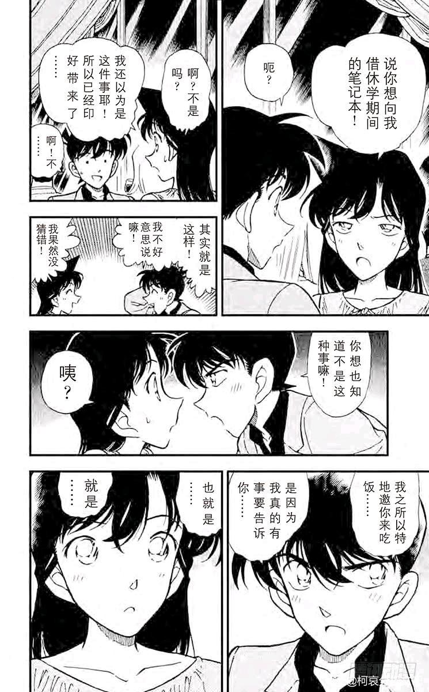
2024-02-21 12:13 | 成冰的雨点:这里非常有趣，好不容易见一次面，居然跑到高级餐厅讲福尔摩斯……按照正常的创作逻辑，如果青山真的想制造戏剧矛盾而不使新兰在这时候表白，哪怕画个新一匆匆忙忙赶来“对不起塞车了”，然后刚坐下就有案件发生呢，也比俩人明明有大把时间，结果硬是在讲福尔摩斯中度过要好啊
尽管气氛很尴尬，小兰还是有最后的，可能是唯一的机会，案件并不天生是情感的阻力，小兰需要做的是不再把案件当成自己的情敌，真正和新一去到现场破案，这是小兰的唯一解。
小兰放弃了最后的机会，尽管新一已经给了小兰足够的思考时间，小兰也早有带着耳环手机破案的经验，但最终小兰还是选择了等待。
“不躲也不跑。”
小兰认为，新一在卡拉OK案进行了【躲】，在赤木量子案进行了【跑】，并因此觉得一直是新一对不起自己，尽管落叶缤纷期间小兰对柯南有所同情和理解，但将新柯分开后，新一就又回到【第一下降期】那种小兰所脑补的“爱情骗子”状态。
小兰不跟上新一，而选择吃掉两份食物，不只是出于对案件的恐惧，而更多出于某种自我中心的扯平心理，将新一放回案件，等价于之前新一所谓的“躲”和“跑”，无视自己在这两个案件的抽象操作，只记住每一次新一能被认为“欺负她”的场景，这种自我中心，和小哀公交车案后真正过命的“扯平”真是云泥之别。
【不躲也不跑】的报复性扯平性的心态，本质就是【躲】（死罗神）和【跑】（伦敦）的综合，所谓“最后的机会”，小兰本就不可能把握住。
危命复活虚高的告白热情泡沫终于破碎了。
小兰放弃了最后的机会，尽管新一已经给了小兰足够的思考时间，小兰也早有带着耳环手机破案的经验，但最终小兰还是选择了等待。
“不躲也不跑。”
小兰认为，新一在卡拉OK案进行了【躲】，在赤木量子案进行了【跑】，并因此觉得一直是新一对不起自己，尽管落叶缤纷期间小兰对柯南有所同情和理解，但将新柯分开后，新一就又回到【第一下降期】那种小兰所脑补的“爱情骗子”状态。
小兰不跟上新一，而选择吃掉两份食物，不只是出于对案件的恐惧，而更多出于某种自我中心的扯平心理，将新一放回案件，等价于之前新一所谓的“躲”和“跑”，无视自己在这两个案件的抽象操作，只记住每一次新一能被认为“欺负她”的场景，这种自我中心，和小哀公交车案后真正过命的“扯平”真是云泥之别。
【不躲也不跑】的报复性扯平性的心态，本质就是【躲】（死罗神）和【跑】（伦敦）的综合，所谓“最后的机会”，小兰本就不可能把握住。
危命复活虚高的告白热情泡沫终于破碎了。
2024-02-21 01:34 | MnTcReBh:有意思是新兰之间永远隔着一件案子，危命篇是，死罗神的最后也是。在关键时候一件案子消耗了工藤新一的药效时间，这是表层；更深层我认为是新一无法跨过案子接小兰，小兰无法跨过案子找新一2024-02-21 09:25 | lxt370:我个人感觉，这里等，已经是小兰能做出最大的让步了。 因为从不断的描写我们可以看出，小兰根本无法融入侦探的世界。 就是工藤能回来又如何呢？ 他们被分开的原因又不只是这一个案子
【大胃王小兰】（划掉）
言归正传，新一的预期是表白，不过他显然案件为重并且没那么想表白（前文已经分析过），小兰干扰过几次柯南办案，不过几乎没有成功的时候，但是柯南经常主动破案破一半去照顾小哀（例如足球流氓迷案）
小兰的预期是什么呢？大概也是类似表白的东西（肯定不是求婚），例如从卡拉OK案开始安慰小兰，解释他每次跑和躲的原因，当然也很有可能是告白。新一认为告白很难成立，于是一直在逃避，小兰的做法则不同，【她在特意训练自己的面无表情】，也就是，类似于伦敦篇后小兰的做法，她希望在新一告白后，暂时不做回应以争取爱情中的主动，所以当柯南回来时，小兰的表情没有红晕。这个过程中小兰不断排除“新一要求婚”的可能，并给自己灌输“新一觉得自己胖了”等等傻理由，目的性是很强的。
这种告白对新一是负担，他真的很想离开这里去案发现场，对小兰却是有些乐趣的，于是红修篇小兰各种开心，新一一脸，这种感情习惯注定了小兰不能获得优作有希子那种风一般的爱情，而一定会变成伦敦-红修这种尬况，又一次加剧了新一离开她的风险。
言归正传，新一的预期是表白，不过他显然案件为重并且没那么想表白（前文已经分析过），小兰干扰过几次柯南办案，不过几乎没有成功的时候，但是柯南经常主动破案破一半去照顾小哀（例如足球流氓迷案）
小兰的预期是什么呢？大概也是类似表白的东西（肯定不是求婚），例如从卡拉OK案开始安慰小兰，解释他每次跑和躲的原因，当然也很有可能是告白。新一认为告白很难成立，于是一直在逃避，小兰的做法则不同，【她在特意训练自己的面无表情】，也就是，类似于伦敦篇后小兰的做法，她希望在新一告白后，暂时不做回应以争取爱情中的主动，所以当柯南回来时，小兰的表情没有红晕。这个过程中小兰不断排除“新一要求婚”的可能，并给自己灌输“新一觉得自己胖了”等等傻理由，目的性是很强的。
这种告白对新一是负担，他真的很想离开这里去案发现场，对小兰却是有些乐趣的，于是红修篇小兰各种开心，新一一脸
，这种感情习惯注定了小兰不能获得优作有希子那种风一般的爱情，而一定会变成伦敦-红修这种尬况，又一次加剧了新一离开她的风险。
破案后的新一又变成了柯南，换了小哀的衣服（当面换？），出来向小兰解释新一离开的原因，仍然是蹩脚的借口，但小兰不会询问新一的去向，只会继续放自己在受害者位置“又被鸽子了”。
从分镜看，新一缩小后没有任何用于决策的时间，他几乎是完全依赖了小哀的计划，重新变成柯南以应付小兰，这是小哀的一贯风格，把柯南所有的冲动考虑进去当成客观条件，制定绝对安全的计划。对柯南而言，这种依赖逐渐成为比习惯更深层的感情，变成了再也不想让小哀担心的成熟。
但是在小兰的眼泪面前，柯南实在不忍心继续骗下去，于是他说出了一个终将生锈的誓言，让小兰等他，自己一定会回来。
死了也会回来，这需要一次死亡。
柯南希望获得小兰的谅解，让自己不再成为害小兰流泪的人--小兰掐断了这个可能，她又一次说出了那个柯南每次都明显反感的词：【推理狂】
这是柯南对小兰眼泪的逐步免疫，赤木量子案的柯南不能免疫，直到前田聪敲碎其幻想；危命复活里柯南被小兰眼泪感动的时间恐怕就一分钟，就由于【推理狂】而免疫眼泪，小兰的眼泪正在变得廉价，原本柯南这里仍然因为【愧疚】，有可能以柯南身份向小兰表白【新一哥哥喜欢你】，但【推理狂】阻断了这个可能。
小兰连吃了五分甜品，正如她找了两个小时工藤家，问了三天赤木量子。
危命复活结束了，小兰最终只得到了新一会回来的空头支票，却失去了柯南＝新一的有效视角，柯南呢？这次失败的告白已经显示出太多问题了，当年优作有希子早已交往，有希子日常就是“你一定知道真相了，告诉我吧～”然后男爵夫人登场，所以优作解决一下区区自杀案就足以去表白，但新兰根本没有这个条件，即使加了场地buff，麻美学姐的舆论buff甚至小兰的眼泪buff也根本不够，只能聊福尔摩斯的青梅竹马，离表白还是太远了。
泡沫破碎后，是萧条。
从分镜看，新一缩小后没有任何用于决策的时间，他几乎是完全依赖了小哀的计划，重新变成柯南以应付小兰，这是小哀的一贯风格，把柯南所有的冲动考虑进去当成客观条件，制定绝对安全的计划。对柯南而言，这种依赖逐渐成为比习惯更深层的感情，变成了再也不想让小哀担心的成熟。
但是在小兰的眼泪面前，柯南实在不忍心继续骗下去，于是他说出了一个终将生锈的誓言，让小兰等他，自己一定会回来。
死了也会回来，这需要一次死亡。
柯南希望获得小兰的谅解，让自己不再成为害小兰流泪的人--小兰掐断了这个可能，她又一次说出了那个柯南每次都明显反感的词：【推理狂】
这是柯南对小兰眼泪的逐步免疫，赤木量子案的柯南不能免疫，直到前田聪敲碎其幻想；危命复活里柯南被小兰眼泪感动的时间恐怕就一分钟，就由于【推理狂】而免疫眼泪，小兰的眼泪正在变得廉价，原本柯南这里仍然因为【愧疚】，有可能以柯南身份向小兰表白【新一哥哥喜欢你】，但【推理狂】阻断了这个可能。
小兰连吃了五分甜品，正如她找了两个小时工藤家，问了三天赤木量子。
危命复活结束了，小兰最终只得到了新一会回来的空头支票，却失去了柯南＝新一的有效视角，柯南呢？这次失败的告白已经显示出太多问题了，当年优作有希子早已交往，有希子日常就是“你一定知道真相了，告诉我吧～”然后男爵夫人登场，所以优作解决一下区区自杀案就足以去表白，但新兰根本没有这个条件，即使加了场地buff，麻美学姐的舆论buff甚至小兰的眼泪buff也根本不够，只能聊福尔摩斯的青梅竹马，离表白还是太远了。
泡沫破碎后，是萧条。
2024-02-22 06:32 | 即将02的废物月:步美：“嗯~衣服上有小哀的味道~”2024-02-22 06:36 | 即将02的废物月:蜗壳：“我倒是闻不出来有什么奇怪的味道”
哀：“你正经一点”
“恶魔”流下眼泪，“魔力”就会失效

十九、总结
自第85天小哀登场到126天危命复活结束，40天左右的时间内，新兰/柯哀的感情线都发生了重大变化。
于新兰而言，这一阶段小兰多次暗示柯南应该主动告知身份，并在新弗尼号几乎明牌，但也与新弗尼号（103天）为界，前20天小兰总体采用积极态度推进新兰，而最重要的计划无疑是【平和促进计划】，后20天小兰的风格发生重大改变，主要计划变更为【新出医生战术代餐计划】，并在危命复活进行了登峰造极的演绎，强行把新兰的泡沫吹大。
柯南意识到小兰发现身份的时机较晚，因而前20天对小兰的态度变化不大，后20天由于小兰大量使用战术代餐，加之感恩，愧疚等感情，导致柯南对小兰的态度直接上升到即将表白，但在危命复活时并未通过表白标准，随后迅速冷却。
------
柯哀关系进展极为迅速，大体上可以分为三个阶段：①蓝色古堡（91天）前，柯哀初识并形成了双向的悸动，仅仅一周不到的时间就在蓝色古堡里贴贴，此阶段结束后小哀认识了自己的情感，并开始形成较明显的箭头，柯南的箭头虽然尚未明确，但多次被撩到脸红。②再会篇（107天）前，这一阶段小哀对柯南发起了若干进攻，此阶段也是柯哀默契迅速发展的时期，到此阶段结束，柯哀的默契已经足以应对黑衣组织的挑战。③危命的复活（126天）前，小哀的“偷偷喜欢你”箭头在再会篇完全明确，并借助“七朵玫瑰”，试药和复活计划得到极致的展现，柯南则对小哀形成一种朦胧的占有情，是保护欲和依赖感综合起来的复杂情感，并通过眼镜超人和“你为什么为我做那么多”表达出来。
危命复活是哀与兰的首次对决，结果小兰的主要目标失败（新一没有表白，小兰丧失了最后的机会），而小哀的目标基本全部达成（柯南身份没有暴露），尽管柯南对小兰的基础好感度此时仍高于小哀，但增速上已经持平，柯南会摔小兰的门，但柯南对小哀的态度如下图所示（嬉皮笑脸）
------
下一个阶段：满月篇，小兰仍然能通过较高的好感度形成局部优势，但总体而言柯哀感情线质量将全面超越新兰。
（正文结束）
自第85天小哀登场到126天危命复活结束，40天左右的时间内，新兰/柯哀的感情线都发生了重大变化。
于新兰而言，这一阶段小兰多次暗示柯南应该主动告知身份，并在新弗尼号几乎明牌，但也与新弗尼号（103天）为界，前20天小兰总体采用积极态度推进新兰，而最重要的计划无疑是【平和促进计划】，后20天小兰的风格发生重大改变，主要计划变更为【新出医生战术代餐计划】，并在危命复活进行了登峰造极的演绎，强行把新兰的泡沫吹大。
柯南意识到小兰发现身份的时机较晚，因而前20天对小兰的态度变化不大，后20天由于小兰大量使用战术代餐，加之感恩，愧疚等感情，导致柯南对小兰的态度直接上升到即将表白，但在危命复活时并未通过表白标准，随后迅速冷却。
------
柯哀关系进展极为迅速，大体上可以分为三个阶段：①蓝色古堡（91天）前，柯哀初识并形成了双向的悸动，仅仅一周不到的时间就在蓝色古堡里贴贴，此阶段结束后小哀认识了自己的情感，并开始形成较明显的箭头，柯南的箭头虽然尚未明确，但多次被撩到脸红。②再会篇（107天）前，这一阶段小哀对柯南发起了若干进攻，此阶段也是柯哀默契迅速发展的时期，到此阶段结束，柯哀的默契已经足以应对黑衣组织的挑战。③危命的复活（126天）前，小哀的“偷偷喜欢你”箭头在再会篇完全明确，并借助“七朵玫瑰”，试药和复活计划得到极致的展现，柯南则对小哀形成一种朦胧的占有情，是保护欲和依赖感综合起来的复杂情感，并通过眼镜超人和“你为什么为我做那么多”表达出来。
危命复活是哀与兰的首次对决，结果小兰的主要目标失败（新一没有表白，小兰丧失了最后的机会），而小哀的目标基本全部达成（柯南身份没有暴露），尽管柯南对小兰的基础好感度此时仍高于小哀，但增速上已经持平，柯南会摔小兰的门，但柯南对小哀的态度如下图所示（嬉皮笑脸）
------
下一个阶段：满月篇，小兰仍然能通过较高的好感度形成局部优势，但总体而言柯哀感情线质量将全面超越新兰。
（正文结束）
膜拜大佬
对于新兰党来说最好磕的地方其实到这就应该结束了。
这之后新一对兰的情感，逐渐变为了，彻底的无感。只有在推进的那一瞬间会有短暂的快感。
伦敦篇，没有兰的追赶是一定没有新一的表白。
修学篇没有兰的主动轻吻，与冲田代餐战术，新一会有那个轻吻的冲动吗？
本来柯南拿到药在伦敦篇也不会告白，如果不是意外。
修学篇也是如此。
但是对于哀的视角则不是这样。
她自作主张的多给了一颗药给工藤以为他会主动的告白，
她来到了死神罗篇，放下了一颗能让新兰说出所谓的那个话的机会，
修学篇也是如此，她对自己残忍的直接多给了一颗药。
假如将柯哀关系比作汹涌的海水，那么它只是在积蓄力量，在潮涨的时候，它会找回自己所在的那片海洋。
这之后新一对兰的情感，逐渐变为了，彻底的无感。只有在推进的那一瞬间会有短暂的快感。
伦敦篇，没有兰的追赶是一定没有新一的表白。
修学篇没有兰的主动轻吻，与冲田代餐战术，新一会有那个轻吻的冲动吗？
本来柯南拿到药在伦敦篇也不会告白，如果不是意外。
修学篇也是如此。
但是对于哀的视角则不是这样。
她自作主张的多给了一颗药给工藤以为他会主动的告白，
她来到了死神罗篇，放下了一颗能让新兰说出所谓的那个话的机会，
修学篇也是如此，她对自己残忍的直接多给了一颗药。
假如将柯哀关系比作汹涌的海水，那么它只是在积蓄力量，在潮涨的时候，它会找回自己所在的那片海洋。
顶顶更新
顶顶，lz加油!！
dd
太牛啦
顶顶
啊……至福♡
感谢dalao的导读_(:з」∠)_爱了爱了
感谢dalao的导读_(:з」∠)_爱了爱了
好好好
好帖，分析的很细致